03 / Style study
Microsoft Art Style Index.
Follow Microsoft through five lessons in looking at art. Start with a line or a shadow, then see how surfaces, composition, audiences, and display technology shape a picture. Open the comparison galleries within each topic to see related examples side by side. Each illustration is a modern teaching study. Select an info button to explore its history and uses.
Browse comparison galleries
- Read a figure at a glance
- Draw or paint the same form
- Print an image
- Read a camera image
- Build a design from fiber and cloth
- Assemble, cut and decorate a surface
- Look around a carved or cast figure
- Read a design in everyday use
- Follow figures across a wall
- Read a figure made for devotion
- Follow a story across places and pages
- Direct the viewer’s attention
- Make distance and atmosphere felt
- Give a feeling or idea a shape
- Show work and public life
- Build rhythm, motion, and abstraction
- Design a public message
- Imagine a different everyday life
- Guide someone through a place
- Show a gesture through time
- From sprites to ray tracing
Start with shapes and marks
Use the recurring portrait to practice seeing outlines, values, and edges. Then ask how the drawing tool changes what you can see.
Read a figure at a glance
Compare how a pose stays clear when you take away detail.
Anime cel shading
Compare the borders of the shadows on Microsoft’s jacket. Cel shading uses separate patches of light and dark to make a pose readable quickly.
- Top left: Classic anime cel
- A single firm shadow across the blue sleeve makes the elbow turn.
- Top right: Soft cel
- Soft shading rounds the knees while the outer contour stays crisp.
- Bottom left: Minimal flat cel
- The navy jacket and the white seat separate in large, simple shapes.
- Bottom right: High contrast cel
- Small bright edges carry the face and hands against a much darker suit.
Manga ink and screentone
Start with the darkest areas of the jacket. Each square makes a gray or a shadow with a different mix of solid ink, dots, and strokes.

- Top left: Solid blacks
- The connected black jacket gives the portrait weight without many interior lines.
- Top right: Dot screentone
- A field of dots makes gray at reading distance while keeping the outline crisp.
- Bottom left: Crosshatching
- Several angled sets of strokes turn the sleeve into a readable volume.
- Bottom right: Noir lighting
- Light picks out the glasses and cheek while much of the figure sinks into shadow.
Pixel art
Look for the tiny groups of pixels that still read as hair, glasses, and a raised hand. Notice how each study spends its limited colors.
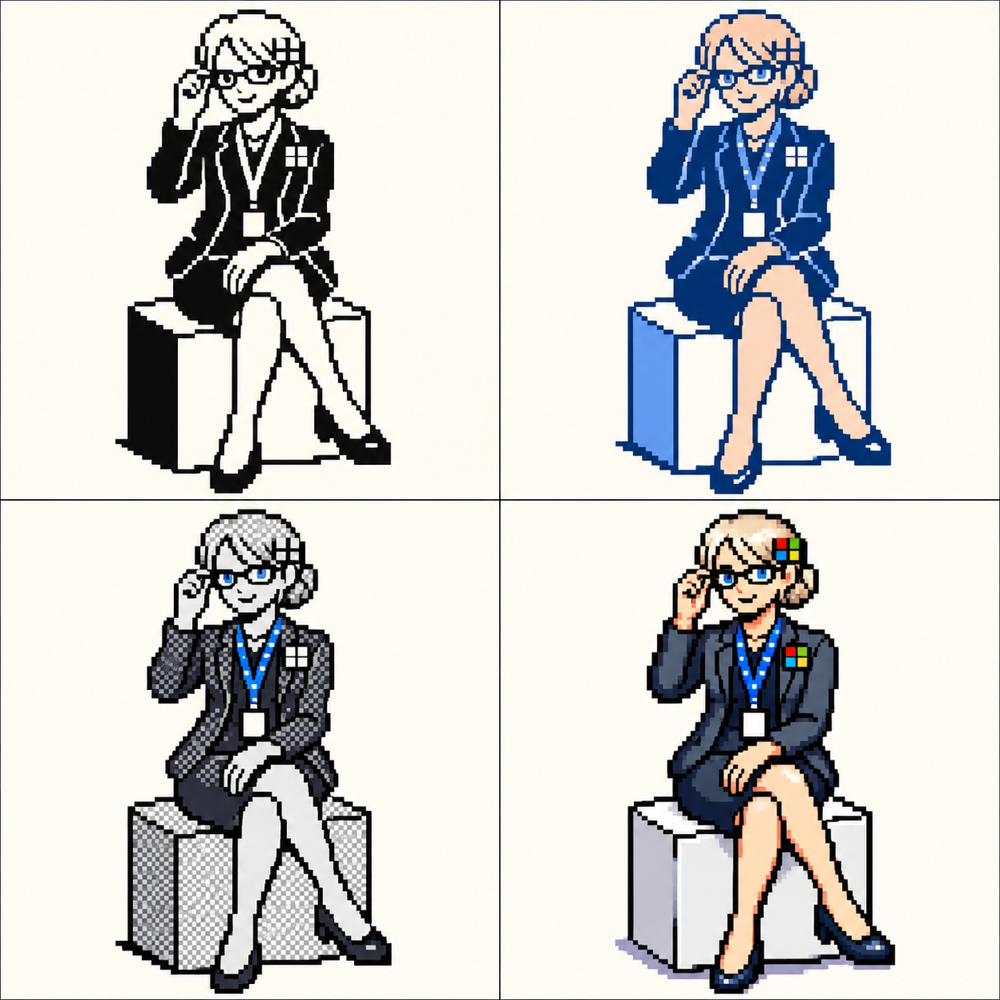
- Top left: One-bit silhouette
- Two values leave the gap beside the hand and the angle of the knee to explain the pose.
- Top right: Four-color portrait
- A dark blue defines the outline and shades the suit. Cream lights the face and seat.
- Bottom left: Dithered shading
- Alternating pixels make a middle tone while solid pixels hold the edge.
- Bottom right: Arcade sprite
- Compact clusters of highlight keep the face readable on a game-sized screen.
Explore related studies · 8 examples
Four graphic voices on the page
The drawing can build action, clarify space, exaggerate a likeness or make a visual argument.
- Top left: American comic book
- Variable black strokes and slanted perspective pull the figure into action.
History and use
Art history connection
From the 1930s onward
American comic books developed distinct narrative and print conventions from the 1930s, across genres including superhero, humor, horror and romance.
When to use it
Use line weight and framing to guide the reader through action within a panel.
Why use it
Thick foreground contours and diagonals make a dynamic path through a crowded panel.
- Top right: ligne claire
- Nearly uniform contour and solid color clarify every overlap.
History and use
Art history connection
Especially mid-20th century onward
Ligne claire is associated with Hergé and Franco-Belgian comics, where even contours and orderly spaces help the reader navigate scenes.
When to use it
Make foreground and background equally readable through a consistent line.
Why use it
Even line weight separates adjacent shapes without relying on light or deep shadow.
- Bottom left: caricature
- Oversized glasses and a reduced body give the figure a recognizable exaggeration.
History and use
Art history connection
European print traditions especially from the 17th–18th century onward
Caricature developed as portrait exaggeration and became an enduring practice in illustrated print culture.
When to use it
Exaggerate the feature the audience will still recognize at a glance.
Why use it
Departures from ordinary proportion let a few distinctive features stand in for exact likeness.
- Bottom right: editorial cartoon
- A giant coffee mug blocking the office door makes the argument visible without a caption.
History and use
Art history connection
Widely circulated in illustrated periodicals from the 19th century onward
Editorial cartoonists have used exaggeration, analogy and visual shorthand to comment on public affairs.
When to use it
Build the central argument around a single visual metaphor.
Why use it
A single impossible object renders a point of view legible immediately.
Who is the illustration for?
Each illustration anticipates a different kind of reader and a different moment of attention.
- Top left: Golden Age illustration
- Delicate ink textures, natural ornament and restrained washes give the scene a storybook pace.
History and use
Art history connection
Late 19th–early 20th century
A period often called the Golden Age of Illustration coincided with commercial advances in printing and the rise of illustrated books and magazines.
When to use it
Set a literary mood through detail, decorative framing and the placement of a figure.
Why use it
Ornament and handwork invite a reader to pause and look across the whole page.
- Top right: children's picture book
- Clear shapes, inviting colors and a small number of props support a simple story beat.
History and use
Art history connection
Long history, with major growth in the 19th–20th centuries
Picture books pair an ordered sequence of images with narrative or verbal rhythm. Their materials and design have taken many forms.
When to use it
Leave room for a young reader to discover the action in the picture.
Why use it
Simple shapes remain legible to children who have yet to learn the associated written words.
- Bottom left: underground comix
- Heavy black ink and crowded hatching produce an intentionally raw print texture.
History and use
Art history connection
Especially late 1960s–1970s
Underground comix circulated outside conventional American comics publishing, often through small presses and countercultural shops.
When to use it
Use densely personal drawing to give a printed image an independent voice.
Why use it
Highly individual strokes register the artist’s hand and give a small edition an unmistakable look.
- Bottom right: pulp cover
- A sharp diagonal and lurid color make the mug’s safety seem absurdly urgent.
History and use
Art history connection
Especially 1890s–1950s
Pulp magazines used inexpensive paper and vivid painted covers to sell genre fiction, often from newsstands.
When to use it
Choose the moment and light that make a story legible from across the room.
Why use it
High stakes can be communicated in one distant view through lurid contrast and a strong diagonal.
Draw or paint the same form
Move from dry marks to washes and opaque layers, then test what you can build from separate pieces.

Graphite drawing
Follow the pencil lines on the sleeve, then look at the pale badge. Value means how light or dark a shape appears.
Charcoal drawing
Squint at the face, suit, and cube. Charcoal can give you a thin line or a broad dark patch with a turn of the stick.

- Top left: Line study
- The bent elbow and knee read through a few changes in the direction of the line.
- Top right: Three-value block-in
- Light skin, middle-gray seat, and dark jacket turn the pose into three large masses.
- Bottom left: Blended charcoal
- Soft shading rounds the legs. The glasses regain a harder edge near the face.
- Bottom right: Charcoal on toned paper
- The gray paper is already a middle tone. Pale marks pick out what catches the light.

Pen and ink illustration
Follow the receiving fingers against the black sleeve. The thickness of an ink line changes how strongly its edge attracts attention.
Colored pencil
Look at the sleeve and hair for lines that follow the form. In other squares the grain of the paper fills in under denser pencil.

- Top left: Directional hatching
- The strokes run with the hair and sleeve, so the line direction suggests their shape.
- Top right: Crosshatched shadows
- Indigo and violet strokes cross in the suit to deepen the shadow with two colors.
- Bottom left: Burnished color
- Pressure and layers fill the paper grain, making the dark blue look almost solid.
- Bottom right: Open paper
- The pale paper remains in the light areas. Short marks near the face give it definition.
Soft pastel
Look closely at a warm stroke beside a cool one, then step back. Dry pastel can stay visibly grainy or be rubbed into a softer blend.
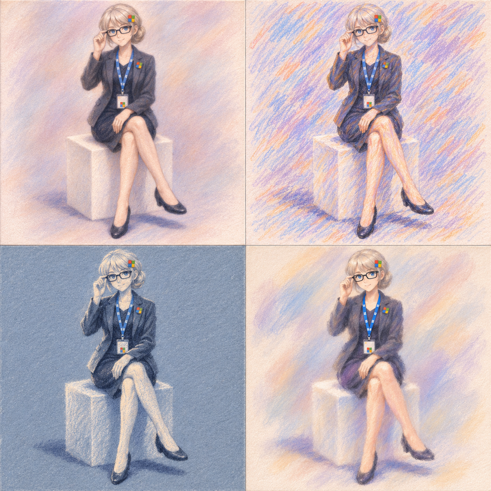
- Top left: Gentle blending
- The cheek and knees move between tones without a firm border.
- Top right: Broken color
- Warm and cool marks still show separately up close. Step back and they mix in your eye.
- Bottom left: Toned paper
- Blue-gray showing through the picture gives the shadows and lights a shared starting tone.
- Bottom right: Sharp focal accents
- A few firm marks near the glasses stay sharp against the broad, soft color.

Ink wash
Follow the jacket from near-black to pale gray at the window. A wash is ink or paint diluted into a thin layer.
Watercolor
Compare the sharp glasses with a shoulder that fades into the paper. Watercolor lets the light paper show through transparent color.
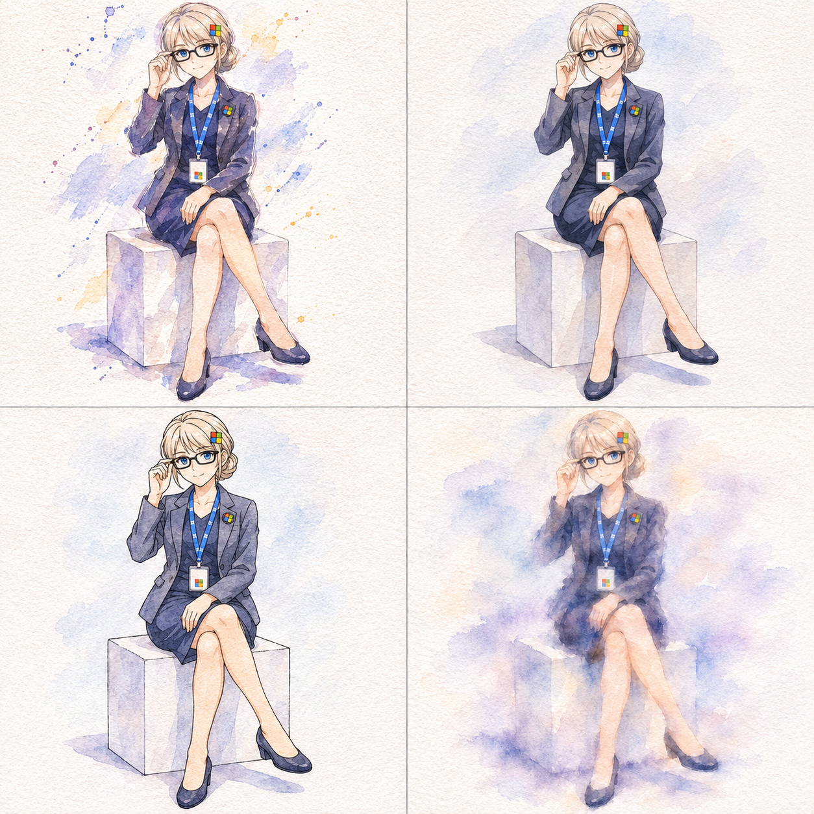
- Top left: Loose watercolor
- The seat is barely outlined, while the clearer features are enough to hold the figure together.
- Top right: Controlled watercolor
- Distinct layers make the jacket dark while leaving the seat bright.
- Bottom left: Ink and watercolor
- An ink line defines the glasses. Color can spread more loosely around it.
- Bottom right: Wet-on-wet watercolor
- Color softens at the shoulders and lower figure where damp-looking edges run together.
Gouache
Find a pale shape that looks solid over a darker one. Gouache is an opaque water-based paint that can cover a previous layer.

- Top left: Flat color blocks
- The seat and jacket meet in firm-edged shapes of cream and navy.
- Top right: Warm and cool planes
- Cool blues and warm skin tones show different sides of a form in distinct patches.
- Bottom left: Limited palette
- A few repeated mixtures make the figure and seat feel painted as one picture.
- Bottom right: Dry brush
- A broken brush edge lets the paper texture interrupt an otherwise solid patch.

Egg tempera
Look at the small strokes that build the face and workbench. Traditional egg tempera binds pigment with egg and dries quickly.

Acrylic painting
Compare the solid blue stroke with the violet passage where orange shows through. Acrylic can cover or tint what lies underneath.
Oil painting
Compare the skin, the raised-looking brush marks, and the darkest portrait. These squares separate three choices: how thickly you paint, how you mix, and where you place the light.

- Top left: Classical oil portrait
- Small shifts in tone round the face, with the glasses giving it its firmest line.
- Top right: Impasto
- Raised-looking strokes describe direction as well as color. Real impasto adds physical paint thickness.
- Bottom left: Alla prima
- Look for a broad stroke where two neighboring colors meet and partly mix.
- Bottom right: Chiaroscuro
- A large field of shadow leaves just enough light for the face to become the focus.
Digital painting
Compare the cheek, glasses, and jacket edges in each square. Digital brushes can imitate very different kinds of paint and light.

- Top left: Soft painterly
- The softly shaded face gives the sharper glasses a place to stand out.
- Top right: Textured digital
- Tactile marks on the jacket make fabric and skin feel like different surfaces.
- Bottom left: Anime influenced
- Firm outlines keep the features easy to read through softly shaded hair and cloth.
- Bottom right: Cinematic digital
- A warm edge light gives the hair and shoulder enough contrast to separate from the background.
Paper collage
Notice where one piece seems cut cleanly and another seems torn. An overlap tells you which shape sits in front.

- Top left: Hard cut paper
- The clean joins at the lapel, shoes, and cube look like pieces cut to fit.
- Top right: Torn paper
- Fibrous edges make the same shapes feel softer even where the outline is clear.
- Bottom left: Layered textures
- Different paper textures and tiny overlaps tell you which piece lies over another.
- Bottom right: Two-color silhouette
- The raised hand reads because the pale space cuts far enough into the dark jacket.

Vector illustration
The glasses and radio dial reuse circles at different sizes. In a vector drawing, editable paths define the shapes.
Explore related studies · 22 examples
- How four drawing tools leave a line
- Covering and uncovering a surface
- What holds pigment in place
- Building a painted surface
- Drawing to explain or propose
- Two kinds of working drawing
How four drawing tools leave a line
Follow the shading beneath the glasses. Each tool leaves a different kind of mark even when the pose stays the same.
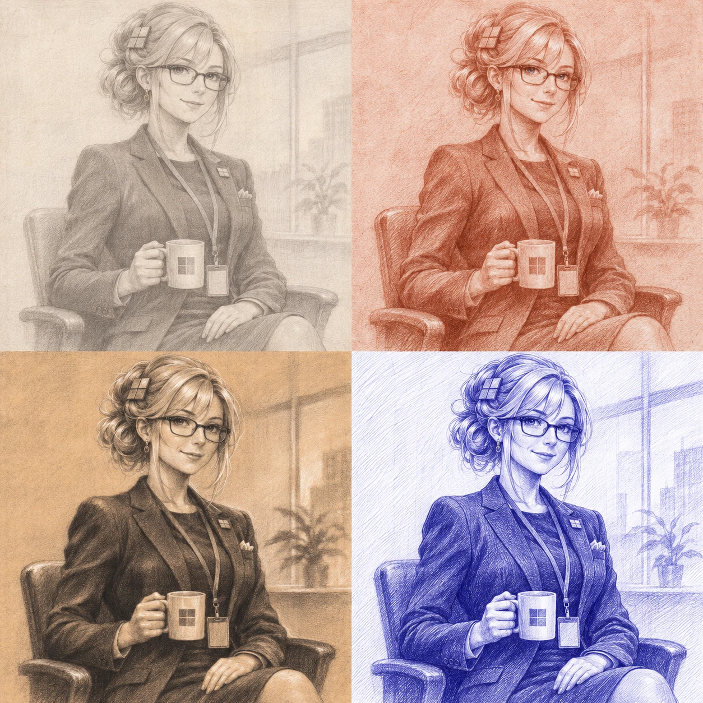
- Top left: silverpoint
- Faint gray crosshatching follows the contours of the face and dark jacket.
History and use
Art history connection
Renaissance artists drew over prepared grounds with a silver tip. Leonardo used it in Study of a Bear Walking.
When to use it
Draw a small study with light shading and repeated fine lines.
Why use it
The firm tip encourages deliberate strokes and leaves a fine, even line.
- Top right: red chalk
- Brick-red lines soften into broader areas of rubbed shading.
History and use
Art history connection
Michelangelo used red chalk for figure studies, including his study for the Libyan Sibyl on the Sistine ceiling.
When to use it
Sketch a face or hand when warmth and volume matter.
Why use it
The chalk gives the shadows a warm color and blends where a crisp line would interrupt the form.
- Bottom left: conté
- Dense dark strokes and pale highlights sit on warm paper.
History and use
Art history connection
Nicolas-Jacques Conté developed a mixture of graphite and clay in France in the late 18th century. Compressed drawing crayons continue that approach.
When to use it
Use dark and light sticks together for a portrait on toned paper.
Why use it
The paper supplies a middle value, letting a few dark marks and highlights define the face.
- Bottom right: ballpoint drawing
- Closely spaced blue strokes build the jacket’s shadows.
History and use
Art history connection
The ballpoint became an everyday writing tool in the 20th century. Artists also use its consistent marks to build dense hatching.
When to use it
Draw outdoors or build a detailed study with a pocket pen.
Why use it
Layered strokes make dark passages gradually while leaving the character of the line visible.
Covering and uncovering a surface
Look at the edges around the glasses and mug. Some tools make broad fields of color, while others reveal a picture one narrow line at a time.
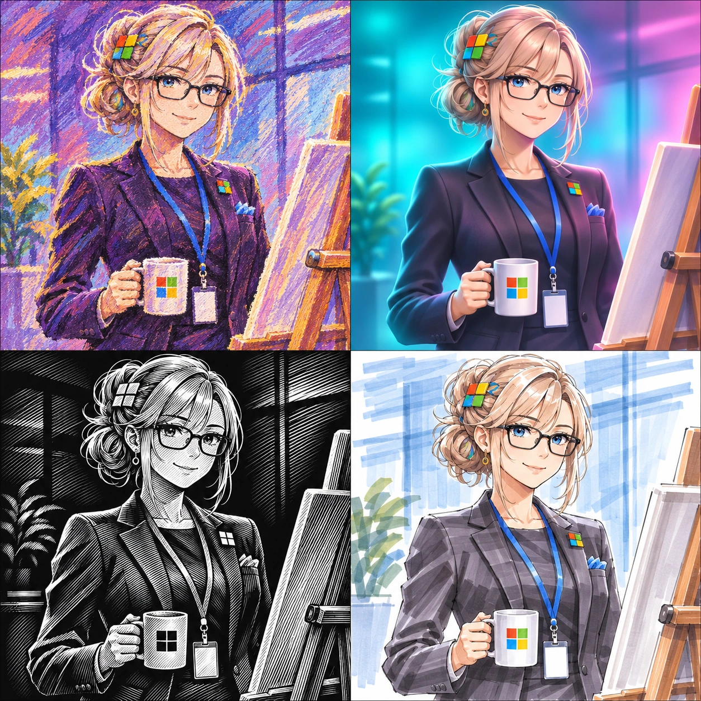
- Top left: oil pastel
- Thick violet and coral strokes catch on the paper, leaving bright crumbs of color.
History and use
Art history connection
Pigment held in wax and nondrying oil forms a pastel that can be blended and layered.
When to use it
Make a close portrait where you want an emphatic record of pressure and gesture.
Why use it
Its oily binder helps strong colors layer and smear into one another.
- Top right: airbrush art
- Smooth cyan and magenta gradients soften nearly every edge.
History and use
Art history connection
Compressed-air paint sprayers became common tools in commercial illustration and retouching during the 20th century.
When to use it
Render a glowing surface or a soft shadow around a hard object.
Why use it
Fine droplets can build an even gradient without brush marks.
- Bottom left: scratchboard
- Thin pale scratches stand out against a black ground.
History and use
Art history connection
Commercial illustrators used prepared boards with a light layer under black ink, scratching the top layer away for white marks.
When to use it
Make a black-and-white image with strongly lit threads, hair or fabric.
Why use it
Carving highlights out of the ground leaves a powerful silhouette and a crisp white line.
- Bottom right: marker rendering
- Broad parallel chisel-tip marks overlap in the jacket and background.
History and use
Art history connection
Felt-tip pens became widely available in the 20th century and color markers found a place in design studios and architectural rendering.
When to use it
Sketch a product, room or costume quickly with a small set of colors.
Why use it
Transparent strokes make it easy to build up a darker value without waiting for paint to dry.
What holds pigment in place
Watch how the binder affects the paint. Wax can catch light in translucent layers, while paint mixed with milk protein or glue can dry to a flat surface.
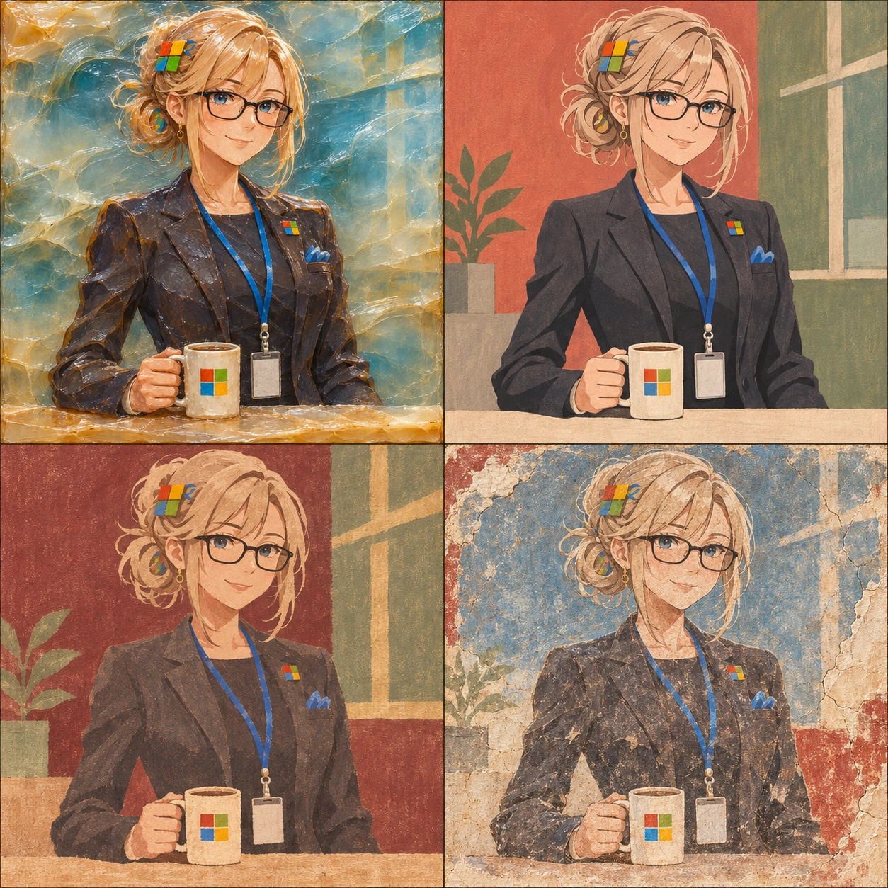
- Top left: encaustic
- Yellow wax catches light over cloudy blue-green layers.
History and use
Art history connection
Wax-bound paint was used on some Roman Egyptian mummy portraits, where the modeling of a face can still look remarkably fresh.
When to use it
Paint a face or surface with translucent layers and visible depth.
Why use it
Wax can hold both clear glazes and opaque deposits that catch the light differently.
- Top right: casein painting
- Crisp, flat shapes sit in an opaque, muted palette.
History and use
Art history connection
Casein is a milk protein historically used as a paint binder. It dries to a matte surface and has been used for murals and commercial art.
When to use it
Paint a study with crisp edges that you will view under bright light.
Why use it
The relatively matte surface reduces glare and gives color shapes a clean edge.
- Bottom left: distemper
- Earth colors read as dry, powdery planes.
History and use
Art history connection
Distemper generally uses a water-based binder such as animal glue with pigment, often with chalk. It appears in historical interiors and on theatrical scenery.
When to use it
Block in broad matte areas for a backdrop or decorative wall.
Why use it
Its flat color keeps reflected light from breaking up the design.
- Bottom right: fresco secco
- Blue and red color catches on worn patches of a dry cream wall.
History and use
Art history connection
Fresco secco applies paint to dried plaster. Painters have used it both on its own and to add detail to frescoes executed on wet plaster.
When to use it
Add details to a wall painting after the plaster has set.
Why use it
The dry surface gives the painter time for finishing touches in specific areas.
Building a painted surface
Compare the surfaces around the figure. Ridges catch the light, gray values model a face, spray leaves a haze, and collage sets papers against one another.
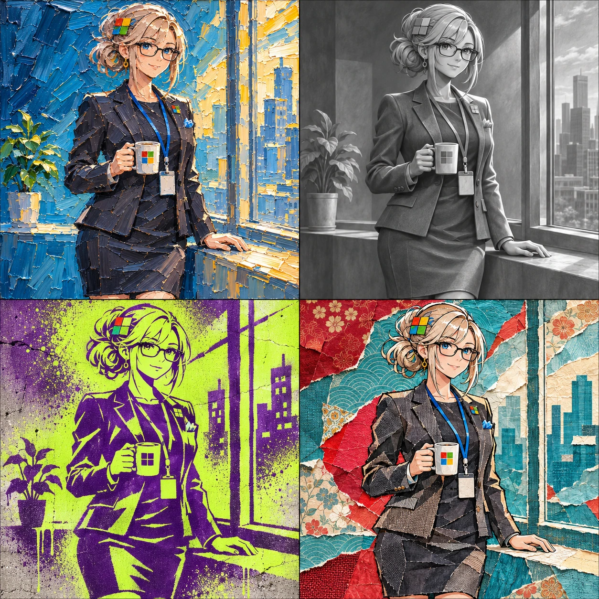
- Top left: palette knife painting
- Blunt raised ridges register where a palette knife pressed or dragged paint.
History and use
Art history connection
Modern oil painters including Gustave Courbet used palette knives to spread paint broadly in expressive passages.
When to use it
Show the roughness of stone, fabric or a city wall with actual raised marks.
Why use it
A knife deposits broad dense paint while leaving the edges of individual strokes readable.
- Top right: grisaille
- Neutral grays make the face and clothing read as modeled relief.
History and use
Art history connection
European painters used grisaille for independent works, underpainting and painted simulations of sculpture.
When to use it
Study volume or design an image to read in black and white.
Why use it
Restricting the palette puts emphasis on how one value moves into another.
- Bottom left: spray paint
- Violet and lime collect in stencil shapes with an aerosol halo.
History and use
Art history connection
Twentieth-century artists used aerosol paint for both direct painting and stencils. Street artists used it for marks that could be made quickly on walls.
When to use it
Make a bold wall piece that can be read across a street.
Why use it
Spray turns a gesture into a broad mark and a stencil gives the edges greater control.
- Bottom right: mixed media
- Paper, fabric and painted marks keep their different edges and textures.
History and use
Art history connection
Collage expanded the range of materials painters used in the early 20th century. Works by Picasso and Braque added papers and other fragments to painted surfaces.
When to use it
Combine documents, patterns and drawing marks in one scene.
Why use it
Each material brings its own texture and associations into the composition.
Drawing to explain or propose
The same drawing skills can identify a specimen, explain a system, show a garment or propose an environment.
- Top left: botanical illustration
- Leaves, flowers and berries are shown cleanly and in enough detail to compare.
History and use
Art history connection
Long tradition, with major printed works in the 17th–19th centuries
Botanical artists have long documented recognizable plants, often gathering different growth stages in one plate.
When to use it
Keep the plant’s diagnostic features clear enough for someone to identify it.
Why use it
A plant may bear flowers and fruit at different times, so a drawing can bring them together for inspection.
- Top right: scientific illustration
- The mug section brings its inside edge and steam into the same field.
History and use
Art history connection
Historical and ongoing
Scientific illustrators select structure, scale and perspective to make a phenomenon intelligible for a particular audience.
When to use it
Reveal relationships a photograph of the uncut object would hide.
Why use it
A cutaway and selective emphasis make hidden or competing information visible at the same time.
- Bottom left: fashion illustration
- An elongated figure directs attention to the fall and cut of the clothes.
History and use
Art history connection
Especially visible in printed fashion imagery from the 19th century onward
Fashion illustration has served design, promotion and editorial storytelling, with artists often using deliberate exaggeration.
When to use it
Shape the pose to show how the garment hangs and moves.
Why use it
Exaggeration clarifies garment proportions and the way fabric falls around the moving body.
- Bottom right: concept art
- Perspective and light establish the look of an office that has yet to be built.
History and use
Art history connection
20th century onward
Concept art helps film, animation and game teams develop the visual form of an idea early in production.
When to use it
Use a quick, coherent visual proposal to let a team imagine the same space.
Why use it
A whole-scene view gives different production teams a shared reference for scale, light and materials.
Two kinds of working drawing
Read the first drawing across views and the second through a building’s section.
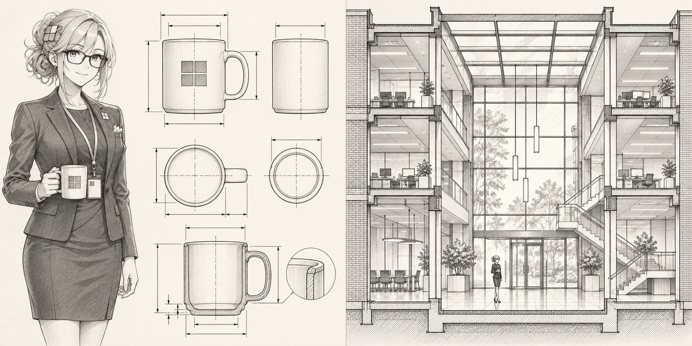
- Left: technical drawing
- Aligned views reveal dimensions and the relationship of the handle to the body.
History and use
Art history connection
Modern standards established through the 19th and 20th centuries
Technical drawings developed standardized conventions for representing dimensions, parts and assemblies in manufacturing and engineering.
When to use it
Show the same part from aligned directions so its shape can be reconstructed.
Why use it
Aligned views make measurable relationships reproducible without distortions of perspective.
- Right: architectural drawing
- A vertical cut shows the levels, surfaces and depth of circulation in a building.
History and use
Art history connection
Long tradition, codified in modern practice
Architects use plans, elevations and sections alongside perspective views to develop and communicate a building design.
When to use it
Use a section to reveal how spaces connect vertically and place a human figure for scale.
Why use it
A vertical cut places connections, levels and an implied human viewpoint in a common plane.
From paper to objects and walls
Follow what changes when a picture is printed, photographed, worn, turned in the hand, or read across a wall or page.
Print an image
Follow the ink. The surface that holds it determines which marks appear on the paper.
Woodblock-inspired print
Find a pale cut against one of the dark areas. In a relief print, the raised surface carries the ink while the cut-away area leaves paper exposed.
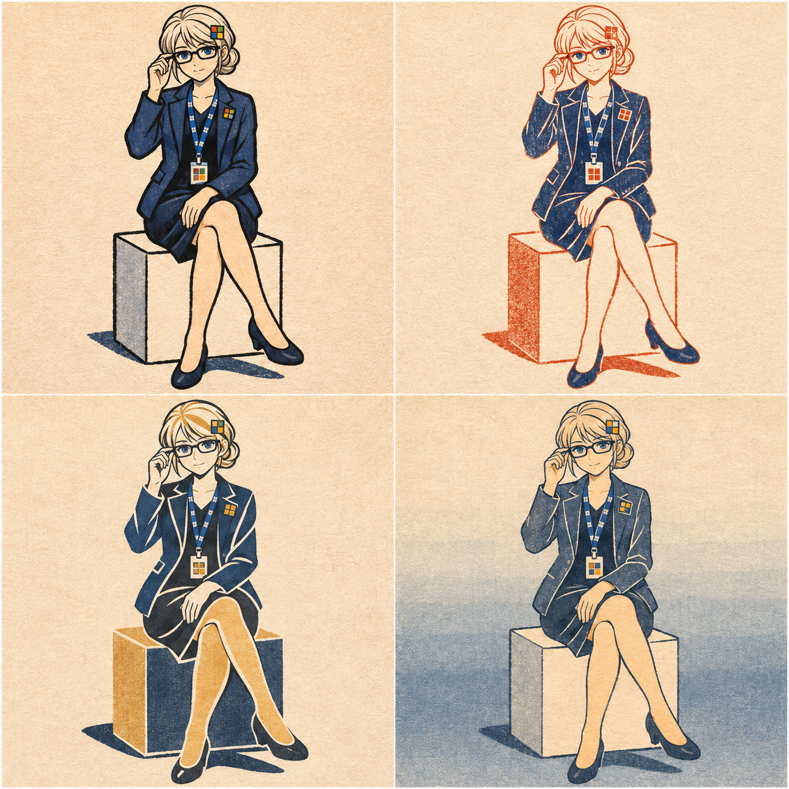
- Top left: Four-ink contour
- Dark contours keep four ink-like color areas aligned around the figure.
- Top right: Two inks and paper
- Two ink colors and the paper give the portrait three levels of emphasis.
- Bottom left: Interlocking shapes
- Pale cuts define the point where the dark suit and cube meet.
- Bottom right: Graded ink
- A gradual change of tone softens the background while the figure edge stays crisp.

Linocut
Follow the pale cuts that free the folder and glasses from the surrounding black. The tool removes the parts that will stay pale.

Copperplate etching
Follow the close-set lines along the machinery. Here the fine dark marks suggest ink printing from grooves in a metal plate.

Lithography
Look for the grain on the gray platform and coat. Lithography can carry a drawn crayon mark from a flat printing surface.

Screenprinting
Find the red and blue shapes at the table and one place they overlap. A screen stencil lets ink through in selected areas.
Ukiyo-e
Start with the cut-off umbrella, then look through the door and across the rooftops. The frame can make you feel close to an everyday scene.

- Top left: Rainy commute
- The frame cuts through the umbrella, as if you caught the commuter passing.
- Top right: Through the doorway
- The near doorway hides part of the room and makes the viewer peer into a second space.
- Bottom left: Hands and glasses
- The glasses and sleeve make a small hand movement fill almost the entire frame.
- Bottom right: Balcony rooftops
- Overlapping rooflines step back through the city beyond the near railing.
Four ways to pull an impression
Compare what makes the darkest marks and what leaves the paper exposed. Open any square to read about its process.
Explore related studies · 16 examples
- Four ways to ink a metal plate
- Block, stencil and single impression
- Making editions for many readers
- Pictures circulated on paper
Four ways to ink a metal plate
Each method works ink into a recessed part of a metal plate. The differences show up in the width of a line, the grain in a shadow and the depth of the black.
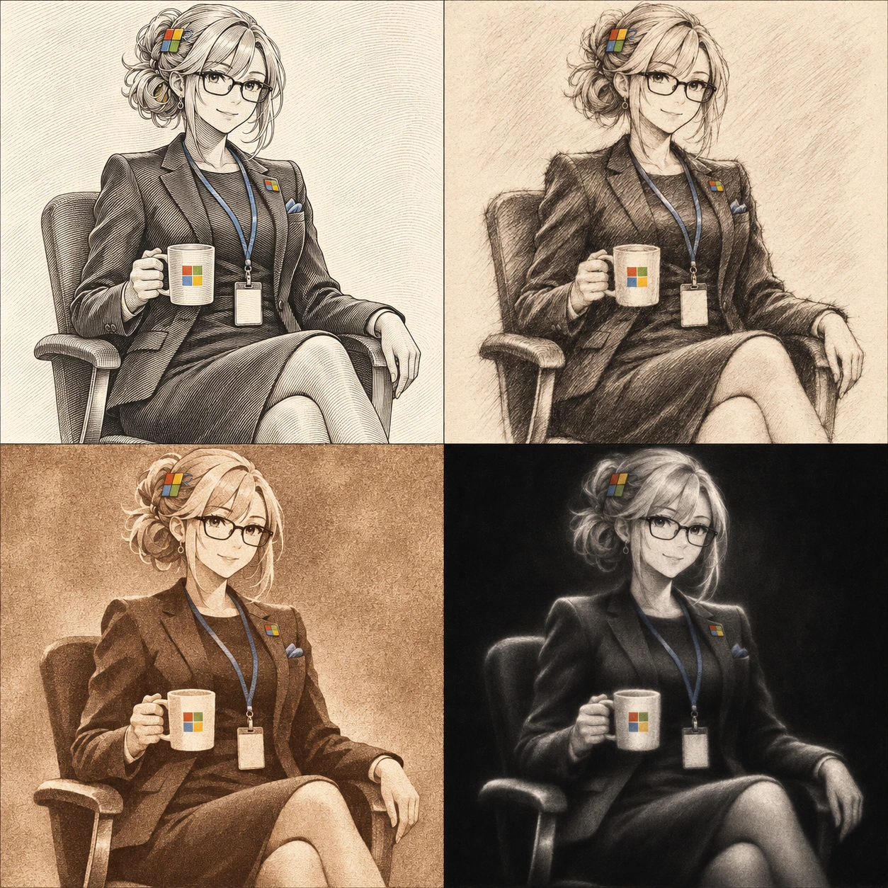
- Top left: engraving
- Tapered, precisely spaced lines define the jacket and face.
History and use
Art history connection
Renaissance engravers such as Albrecht Dürer used a burin to cut fine lines into metal and print them on paper.
When to use it
Describe folds, textures and volumes with exact linework.
Why use it
Changes in the width, angle and density of cut lines produce sharp detail.
- Top right: drypoint
- Dark edges have a soft fringe from the metal pushed up beside the cut.
History and use
Art history connection
Rembrandt used drypoint alongside etching. A sharp needle raises a burr that catches ink and wears down during printing.
When to use it
Print a small edition of a close portrait with velvety outlines.
Why use it
Ink caught by the raised metal gives the edge a touch of softness.
- Bottom left: aquatint
- Sepia areas look like fine grain suspended in a wash.
History and use
Art history connection
Aquatint came into wider use in the 18th century. Goya used it for dramatic shadows in print series including Los Caprichos.
When to use it
Print a scene that depends on large zones of light and dark.
Why use it
The granular ground holds ink across whole areas and can create wash-like tone.
- Bottom right: mezzotint
- The sitter slowly emerges from an unusually deep black.
History and use
Art history connection
Mezzotint developed in the 17th century and became widely used for reproductions of portraits in 18th-century Britain.
When to use it
Make a print with continuous-looking shade and selective light.
Why use it
Smoothing the roughened plate gradually lifts tones out of a deeply inked ground.
Block, stencil and single impression
Ask which parts of the tool carry the ink. Blocks leave repeatable traces, a stencil keeps color in a defined shape, and a painted plate yields one strong pull.
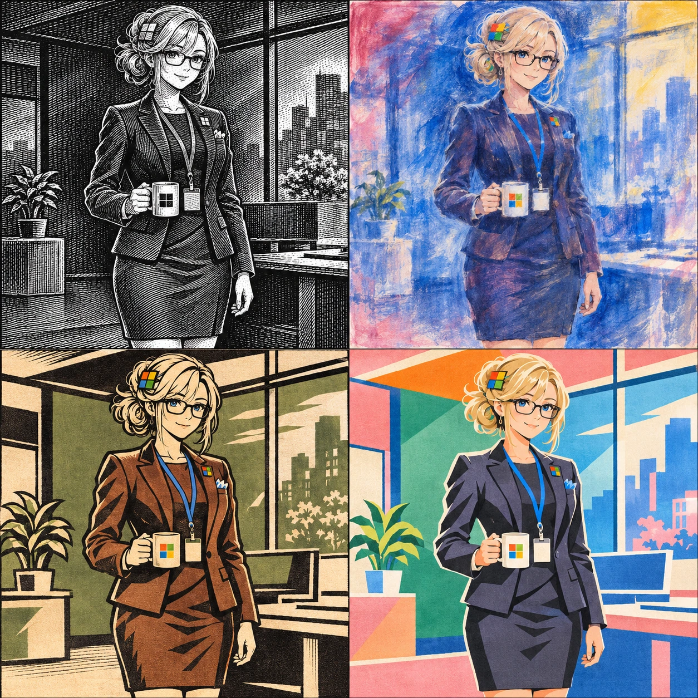
- Top left: wood engraving
- Fine white cuts and dots stand out against the paper’s dark printed areas.
History and use
Art history connection
Thomas Bewick popularized fine end-grain engraving in British books in the late 18th century, including A History of British Birds.
When to use it
Build a small high-contrast illustration with crisp texture.
Why use it
A hard end-grain surface supports tiny cuts that stay readable in print.
- Top right: monotype
- Blue, pink and yellow patches show streaks and irregularities from the pull.
History and use
Art history connection
Edgar Degas drew and wiped ink on plates to produce monotypes in the 19th century, sometimes revisiting the faint second impression with pastel.
When to use it
Capture a gesture or brushy atmosphere in a unique print.
Why use it
With no cut image locking in the marks, the wet pigment can move and drag on the plate.
- Bottom left: chiaroscuro woodcut
- Dark outlines and several broad midtone blocks organize the highlights.
History and use
Art history connection
Renaissance printmakers including Ugo da Carpi used multiple blocks to make prints that recalled drawings on colored paper.
When to use it
Make an edition with a small number of carefully chosen tones.
Why use it
Each block can carry one distinct level of light and dark.
- Bottom right: pochoir stencil
- Jade, orange and pink color sit in sharply bounded shapes.
History and use
Art history connection
French publishers and designers used hand-coloring with stencils for luxury fashion albums and art books in the early 20th century.
When to use it
Repeat clean, bright shapes across a small edition.
Why use it
Brush-applied color can stay vivid and thick inside each cut opening.
Making editions for many readers
The same portrait can be printed as a solid impression, a grid of dots or a set of overlapping ink layers. Look closely at the color edges and paper texture.
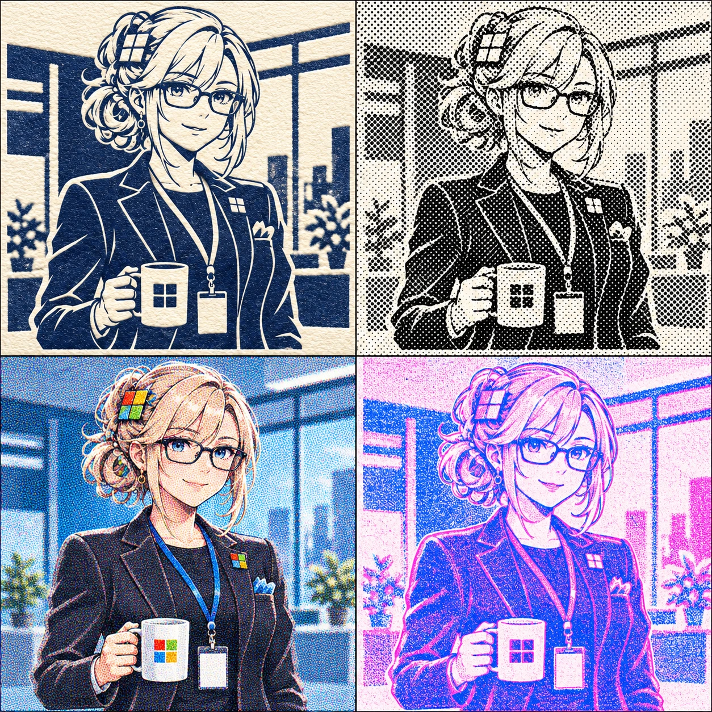
- Top left: letterpress
- Solid navy ink follows a crisp relief shape on toothy paper.
History and use
Art history connection
Letterpress was the standard way to reproduce much European printing after the introduction of movable metal type, and it could print relief images alongside type.
When to use it
Print a short run of invitations with one dark, solid motif.
Why use it
Raised forms transfer ink directly to the sheet and can leave a tactile impression.
- Top right: halftone printing
- The light and dark passages resolve into regular dots of different sizes.
History and use
Art history connection
Halftone screens made photographs reproducible in mass-market newspapers and magazines from the late 19th century.
When to use it
Translate a continuous-tone photograph into a one-color print.
Why use it
Bigger dots cover more white paper and read as darker to the eye.
- Bottom left: CMYK offset printing
- Tiny cyan, magenta, yellow and black marks produce a full range of colors.
History and use
Art history connection
Offset printing transfers ink from a printing plate to a rubber blanket before it reaches paper. Four-color offset has been widely used in illustrated books and magazines.
When to use it
Print full-color editorial images across many copies.
Why use it
The four process inks mix visually, giving consistent color at publication scale.
- Bottom right: risograph
- Fluorescent pink and blue ink meet in grainy violet where the layers overlap.
History and use
Art history connection
The Riso duplicator was designed for office copying. Independent publishers and artists adopted it for zines and inexpensive short runs.
When to use it
Make a small poster edition with strongly contrasting colors.
Why use it
One ink color per pass gives a lively overlap where transparent inks or slightly shifted passes meet.
Pictures circulated on paper
Printed images could hang at a doorway, circulate as a cheap broadside or be collected as individual artworks. The design and printing choices reflect those uses.
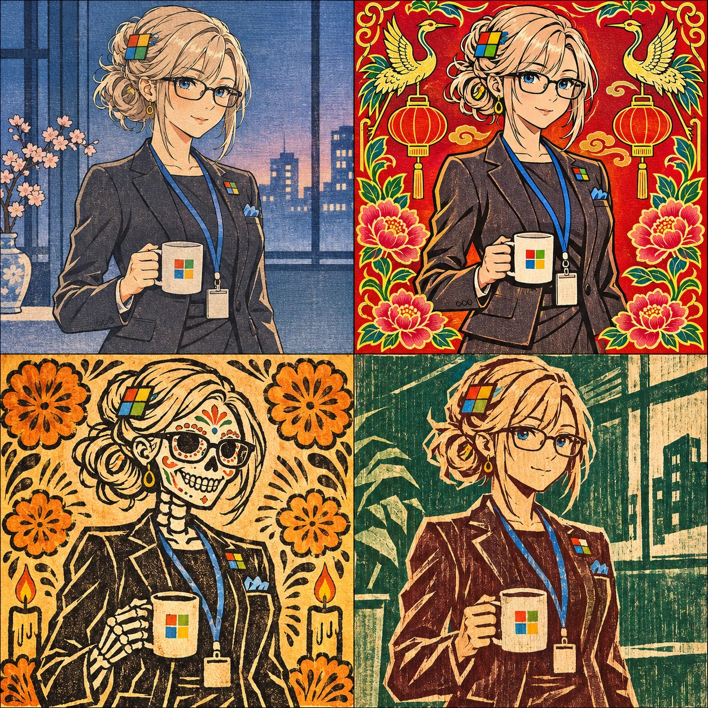
- Top left: shin-hanga
- Fine outlines and graduated dusk color show careful coordination across blocks.
History and use
Art history connection
In early-20th-century Japan, publishers such as Watanabe Shōzaburō organized artists, carvers and printers to make new prints through traditional workshop roles.
When to use it
Create a multi-color scene with quiet atmospheric changes.
Why use it
Separate carving and printing work can unite highly precise lines with subtle bands of color.
- Top right: Chinese New Year prints
- Vermilion, green and gold frame the figure in a densely patterned design.
History and use
Art history connection
Chinese woodblock New Year prints include protective door guardians and auspicious subjects displayed at the Lunar New Year.
When to use it
Design a festive image for an entrance or a gift.
Why use it
Strong outlines and charged color help an auspicious subject read from the street.
- Bottom left: calavera prints
- A grinning skeleton keeps the sitter’s recognizable glasses, bun and mug.
History and use
Art history connection
José Guadalupe Posada and others made lively skeletons for Mexican broadsides, often satirizing public figures and social behavior.
When to use it
Turn a recognizable character into an expressive satirical emblem.
Why use it
The skeleton simplifies the body and makes its gestures and props carry the joke.
- Bottom right: sōsaku-hanga
- Large russet and green fields retain grain and unpolished cut edges.
History and use
Art history connection
Sōsaku-hanga, or creative prints, emphasized the artist’s personal work in designing, carving and printing. Onchi Kōshirō was a leading practitioner.
When to use it
Make a print where the carving itself should feel expressive.
Why use it
Visible tool marks keep the artist’s decisions present in the final impression.
Read a camera image
Compare an object’s direct trace with a camera’s point of view and a painting that simulates one.

Cyanotype
The opaque badge stays pale while fern details show through in blue. Objects laid on light-sensitive paper control how much light reaches it.

Pictorialist photography
Compare the soft lamp halo with the barely visible windows. Pictorialist photographers used tone and focus to give photographs a painterly atmosphere.

Documentary photography
Look from the hands at the radio to the people on the edges of the frame. The generated scene lets you practice asking what a photograph can support.

Photorealism
Find one object behind the office glass and one street feature reflected on it. Both sets of details are visible at once.
Explore related studies · 11 examples
An image made by light and chemistry
Look for the surface that carries the image. These processes leave a portrait on polished silver, printed paper, dark metal or light-sensitive paper exposed directly.
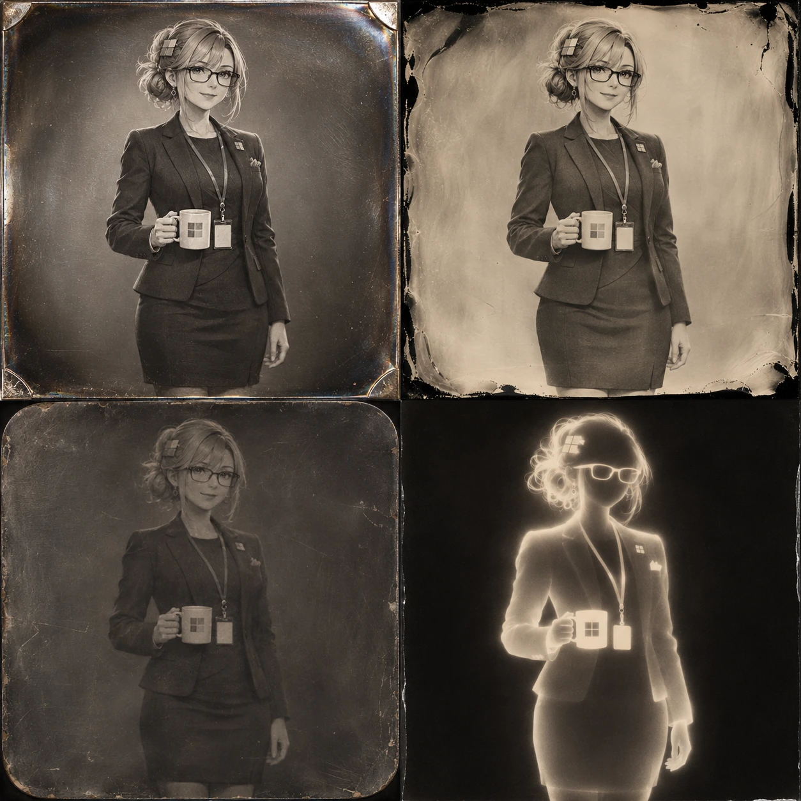
- Top left: daguerreotype
- A reflective, finely detailed face is set inside a silvery plate.
History and use
Art history connection
Introduced in France in 1839, the daguerreotype forms a single direct image on silver-coated copper. Portraits were a common subject.
When to use it
Make a portrait that feels like a small, precious object.
Why use it
The reflective plate changes as it catches light, so viewing becomes part of the experience.
- Top right: wet-plate photography
- A long range of gray values appears on paper, with uneven edges.
History and use
Art history connection
In the 1850s, wet collodion allowed photographers to make detailed glass negatives that could be printed multiple times.
When to use it
Give a portrait the visual character of a large nineteenth-century negative.
Why use it
The glass supports fine detail, and the paper print brings out subtle middle tones.
- Bottom left: tintype
- The plate has a dark warm-gray image, scuffs and soft corners.
History and use
Art history connection
Tintypes form an apparently positive image on darkened iron. They were inexpensive and popular with traveling photographers and portrait studios.
When to use it
Present a portrait as a small hand-held keepsake.
Why use it
The dark coated metal supplies a ground and keeps the image self-contained.
- Bottom right: photogram
- The glasses and mug leave light silhouettes on dark paper.
History and use
Art history connection
Artists including Man Ray and László Moholy-Nagy experimented with camera-less photographs that record objects placed between a light source and sensitized paper.
When to use it
Show the outlines and opacity of familiar objects in a more abstract way.
Why use it
An object blocks or filters exposure, so its shadow becomes the image.
Choosing what a camera records
Deciding when and where to take a picture can matter as much as the camera. Compare the face in a quiet study, a moving crowd, colored light and a deliberately ordered workplace.
- Top left: straight photography
- Precise focus and side light give the subject clear edges and controlled gray values.
History and use
Art history connection
Early-20th-century photographers such as Paul Strand explored photography’s ability to describe forms directly through sharp detail and tone.
When to use it
Make a study of the way window light falls across the face or an object.
Why use it
Clarity directs attention to the form and light already present in front of the camera.
- Top right: street photography
- The subject is caught in mid-step among layered people and surroundings.
History and use
Art history connection
Smaller handheld cameras helped make the unscripted public scene a major subject in 20th-century photography. Helen Levitt photographed street life in New York.
When to use it
Show how a character moves through a shared public space.
Why use it
An unrepeatable combination of gestures and surroundings gives the moment its energy.
- Bottom left: color photography
- Cyan reflections and orange light shape the face and surroundings.
History and use
Art history connection
William Eggleston's color photographs helped establish a place for color in American fine-art photography in the 1970s.
When to use it
Make the particular colors of an ordinary moment carry the picture.
Why use it
The relationship between colors helps place the subject and can establish a distinctive mood.
- Bottom right: Düsseldorf School photography
- A frontal, detached view lets the workplace grid occupy as much attention as the figure.
History and use
Art history connection
Bernd and Hilla Becher taught at the Düsseldorf art academy and developed systematic series of industrial structures. Several of their students explored highly detailed large-scale photographs.
When to use it
Compare different people or offices using the same camera height and framing.
Why use it
A consistent viewpoint makes small differences easier to notice.
Directing a photograph
Each image is built through a deliberate decision. The set establishes a story, the lighting directs attention to a garment, or two exposures put different spaces in one frame.
- Left: staged photography
- The arranged set and blue light put an everyday figure inside an improbable scene.
History and use
Art history connection
Staged photographers adapt tools from the theater and studio, arranging subjects, props and lighting before taking the picture.
When to use it
Use a constructed set to make a portrait carry a specific story.
Why use it
The set gives even the smallest object a part to play in the scene.
- Center: fashion photography
- Hard light and a long pose bring out the fit and seams of the dress.
History and use
Art history connection
Fashion photographers have worked with magazines and designers to turn garments into editorial pictures. Studio photographers such as Irving Penn made clothing central to the frame.
When to use it
Show the design and silhouette of an outfit as worn.
Why use it
Directional light and pose reveal construction, fabric and motion together.
- Right: double exposure
- Branches and building lines appear across the head and jacket while both subjects remain discernible.
History and use
Art history connection
Twentieth-century experimental photographers explored superimposition and repeated exposure, often to connect subjects that never occupied the same physical space.
When to use it
Tie a portrait to a second image that represents a place or a memory.
Why use it
The overlapping areas let parts of each subject alter the meaning of the other.
Read surfaces and patterns
Look at what carving, glaze, dye, and pattern show about the object and the people who use it.

Carved relief
A thin shadow beside the hands shows that they project from the stone. Relief uses physical depth while remaining attached to a background.

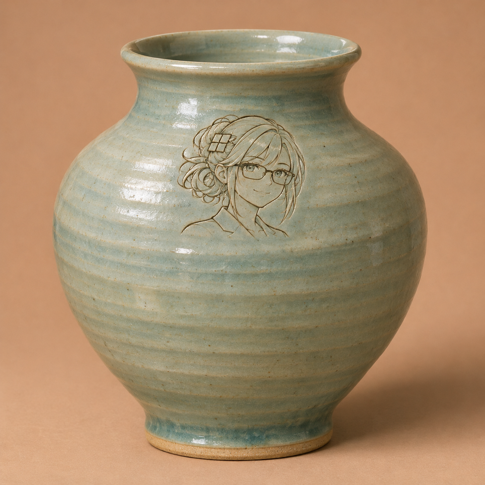
Ceramic vessel and glazing
Compare the highlighted shoulder of the jar with the darker incised portrait. Glaze is a coating that fuses to the clay in firing.

Batik
Look at the pale outlines and small dots among the leaves. In wax-resist dyeing, wax protects parts of the cloth from color.

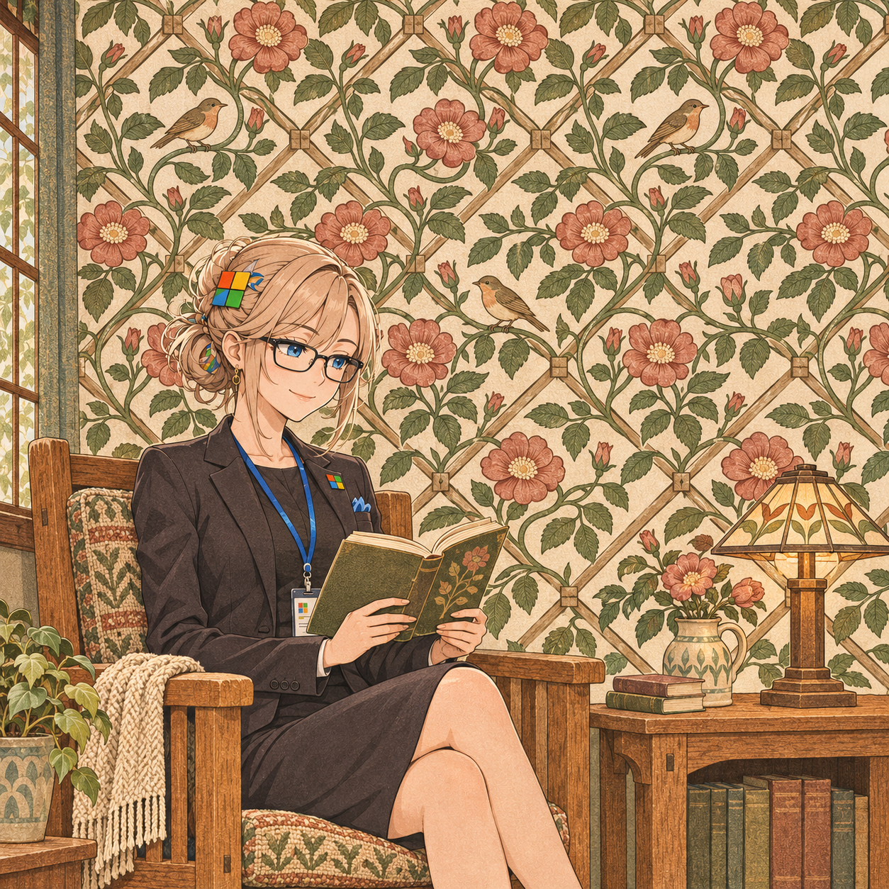
Arts and Crafts
Find one repeating vine in the wall and related forms in the objects. Notice how the pattern has room to repeat without covering the figure.

Mithila painting
Start at the meal, then follow the repeated shapes from the dishes into the border. The drawing gives the setting and the people similar attention.

Narrative story quilts
Start with the shared rooftop meal and work outward to the smaller scenes. The fabric pieces provide both a picture and a route through a day.

Korean chaekgeori
Follow the notebook from Microsoft’s hand into the grid of shelves. Books and everyday objects can stand in for the person who uses them.

Rinpa
Trace the irises along the base of the gold screen. The empty gold creates pauses between their clusters.

Rococo
Trace the shell-like curves from the wall to the chair and table. The room uses ornament to move your eye between objects. The Met on French Rococo furniture
Art Nouveau
Trace a plant stem or lanyard until it echoes the figure’s pose. The flowing outlines link decoration, character, and frame.
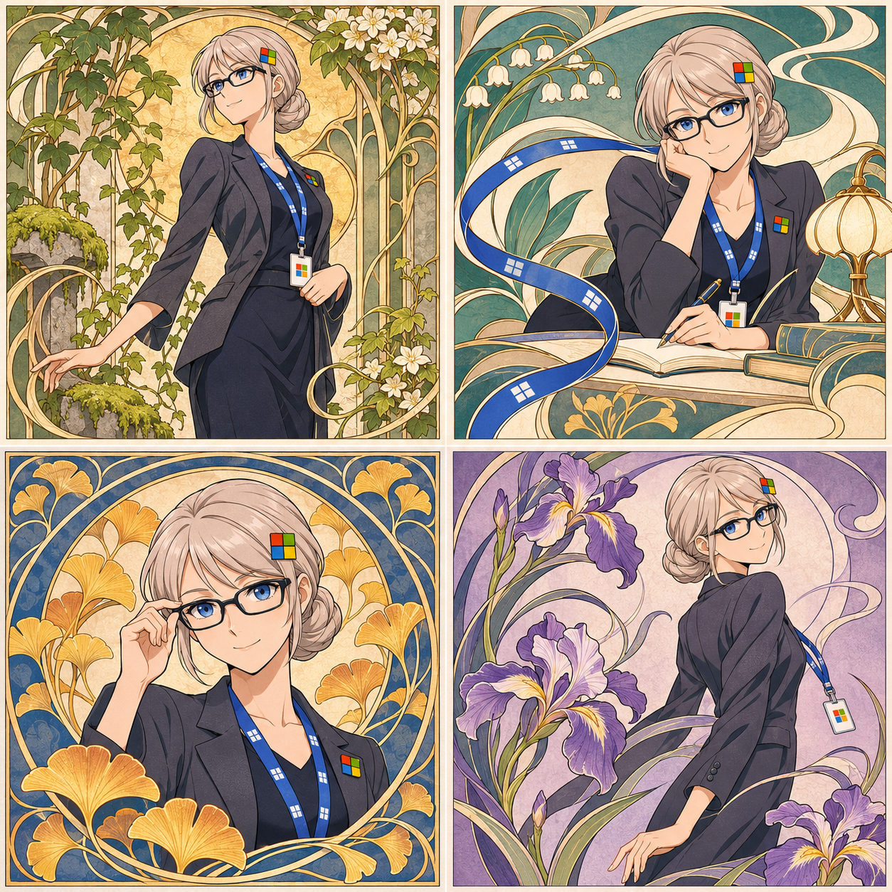
- Top left: Botanical arch
- The arch and curling stems frame her standing pose, then guide the eye back to her shoulders.
- Top right: Ribbon at the desk
- The curving lanyard connects the portrait to the desk and the motion of her hand.
- Bottom left: Ginkgo medallion
- The circle focuses attention on the glasses gesture. Repeated leaves extend the rhythm outward.
- Bottom right: Iris and reverse portrait
- The line of the turned figure echoes the iris stems, giving one side of the frame more visual activity.
Build a design from fiber and cloth · 21 examples
- Pattern built with thread
- Line, rhythm and the painted cloth
- Woven, painted and resisted pattern
- Andean textiles and painted vessels
- Building pattern in the Americas
- Layers of cut cloth
Pattern built with thread
Trace a line around the glasses in each material. Thread can weave the image into a surface, embroider it onto cloth, build it as pile or raise it in gold.
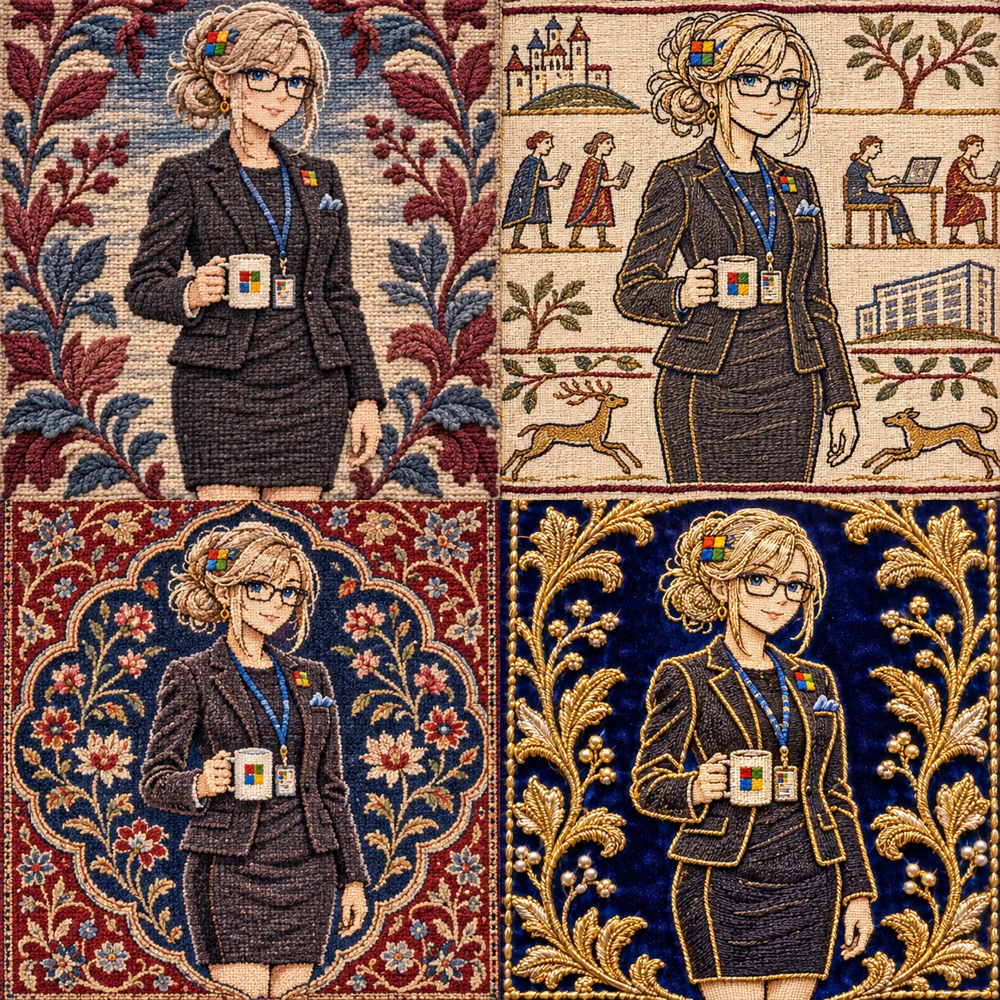
- Top left: tapestry
- Large wool stitches give the surrounding foliage a soft, woven surface.
History and use
Art history connection
European tapestry workshops wove detailed pictorial hangings in colored wefts. The Unicorn Tapestries are examples of large-scale narrative work.
When to use it
Design a wall hanging whose image will be read from across a room.
Why use it
The weft can form both picture and fabric while maintaining broad color zones.
- Top right: Bayeux-style embroidery
- Muted lines and filled stitch shapes sit on an exposed linen ground.
History and use
Art history connection
The Bayeux Tapestry was embroidered with wool on linen in the 11th century. Its continuous imagery recounts the Norman Conquest.
When to use it
Make a long stitched scene with recognizable profiles and repeated gestures.
Why use it
Outline stitches clarify the figures, while laid stitches fill larger shapes efficiently.
- Bottom left: Persian carpet
- A densely patterned pile fills vines and an enclosing medallion.
History and use
Art history connection
Safavid-era Iranian luxury carpets include courtly examples with central medallions, garden patterns and figural imagery.
When to use it
Make an image that reads both as a pattern from afar and as small detail up close.
Why use it
Dense rows of colored knots let complex motifs sit inside a durable surface.
- Bottom right: goldwork
- Raised gold outlines shine against dark blue cloth.
History and use
Art history connection
Metal threads ornamented luxury and ceremonial textiles. English medieval opus anglicanum often used couching to secure precious metal threads.
When to use it
Draw attention to a badge, garment edge or emblem in directional light.
Why use it
Metallic threads lift the design from the cloth and flash as the viewing angle changes.
Line, rhythm and the painted cloth
Look at how each tradition fills space between figures. The pictures use joined outlines, loops of people, internal dots and lines, or borders that spread like a plant.
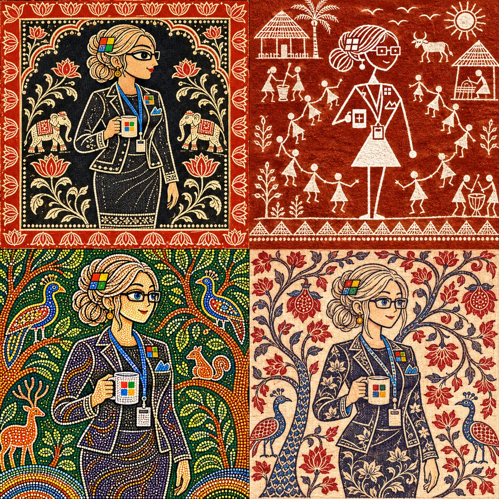
- Top left: Pattachitra
- Cream outlines and a vermilion border hold clean shapes on a painted ground.
History and use
Art history connection
Pattachitra traditions in eastern India include Odisha painted cloth or prepared canvas with religious and narrative subjects, including stories tied to Jagannath.
When to use it
Tell a small story in a framed area with clear poses and consistent outlines.
Why use it
Separated color areas make the figures readable next to an intricate border.
- Top right: Warli
- White lines and paired triangles form figures across a red-brown ground.
History and use
Art history connection
Warli painters in western India traditionally decorate walls for ceremonies. Artists including Jivya Soma Mashe also developed new compositions for portable surfaces.
When to use it
Show how several people relate within a ceremony or shared task.
Why use it
Repeated triangle bodies make direction and movement readable from simple gestures.
- Bottom left: Gond
- Dense dots and curved marks fill large figure and plant silhouettes.
History and use
Art history connection
Contemporary Gond paintings build on storytelling and regional traditions of central India. Jangarh Singh Shyam helped develop a celebrated modern painting practice.
When to use it
Give the interior of a large silhouette the energy of a detailed pattern.
Why use it
Different mark rhythms suggest form, texture and movement without conventional shadows.
- Bottom right: Kalamkari
- Indigo and red settle into fine cotton, framed by floral repeats.
History and use
Art history connection
Kalamkari includes painted and block-printed Indian cottons, often using mordants and dyes. Srikalahasti is associated with drawn narrative works, while Machilipatnam is known for block printing.
When to use it
Print or draw a rich border on a flexible hanging or garment.
Why use it
Color works with the weave of the cloth, so the pattern and its support read together.
Woven, painted and resisted pattern
Four surfaces store the memory of their making. Compare how a pile of fiber, a join between woven strips, a brushstroke and an indigo resist each influence the pattern.
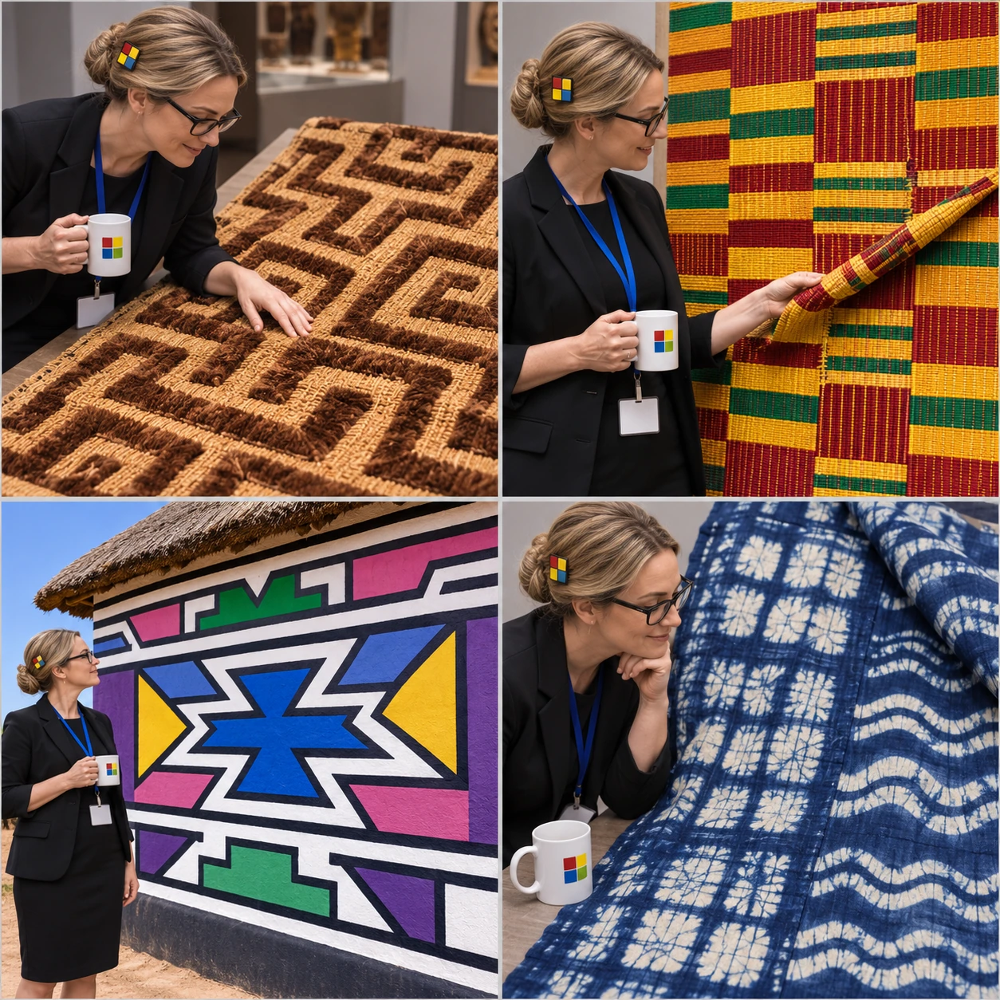
- Top left: Kuba cloth
- The light catches the short raised pile while darker interlocking shapes change direction across the raffia.
History and use
Art history connection
Kuba textile artists in the Democratic Republic of the Congo use raffia and techniques including embroidery, appliqué and cut pile.
When to use it
Study it when the touch and height of thread could make a repeat more interesting.
Why use it
Cut pile changes the way the natural fiber reflects light, so the design can stand out by texture.
- Top right: kente
- Colorful blocks and stripes line up across bands joined into a larger cloth.
History and use
Art history connection
Asante and Ewe weavers in Ghana and neighboring areas have distinct strip-weaving traditions. Kente continues to be worn and made today.
When to use it
Look at the seams to understand the relation between a single narrow loom width and the full cloth.
Why use it
Joining strips lets makers vary the scale and order of motifs across a larger surface.
- Bottom left: Ndebele house painting
- Black outlines hold saturated angular fields against the building's flat wall.
History and use
Art history connection
Southern Ndebele women in South Africa developed distinctive mural traditions. Esther Mahlangu took the imagery onto canvases and publicly commissioned surfaces.
When to use it
Study how a pattern interacts with the wall or openings of a building.
Why use it
Large contrasts keep shapes distinct from across a yard or along a street.
- Bottom right: adire
- The pale areas are places where the cotton resisted the indigo. Look for slight variations where the dye met the edge.
History and use
Art history connection
Yoruba makers in southwestern Nigeria have used methods including tying, stitching and cassava-paste resist to pattern indigo-dyed cloth.
When to use it
Study it when you want to understand how reserving areas of a surface can build the image.
Why use it
The resist makes a lighter design part of the fiber's color rather than simply adding a dark line to the surface.
Andean textiles and painted vessels
Compare how a design changes with the way a material is worked. A woven panel holds a repeat differently from an embroidered edge, a ceramic relief or painted clay.
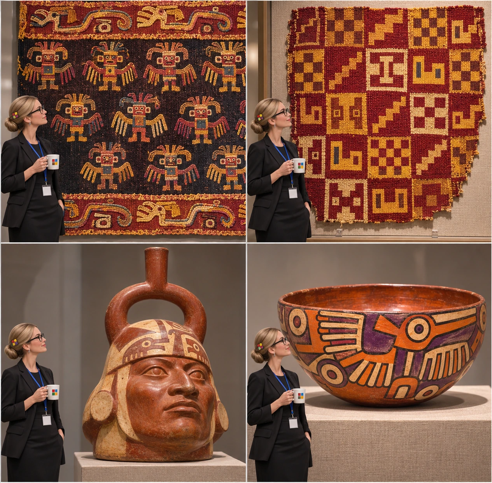
- Top left: Paracas textile
- Small, repeated color figures run along the embroidered edge of a darker cloth.
History and use
Art history connection
Paracas makers on Peru's south coast produced textiles including embroidered mantles. Burial conditions helped preserve many surviving textiles.
When to use it
Look for details where embroidery changes against the weave underneath.
Why use it
Stitches create small independent shapes that can be varied one by one within a repeating border.
- Top right: Inca textile
- Small squares of intricate pattern create a larger checkerboard across the fabric.
History and use
Art history connection
Inca authorities gave finely woven garments social and political significance. Rectangular designs known as tocapu appear on surviving textiles.
When to use it
Study how skill and a regular pattern make a garment readable from a distance.
Why use it
The repeated squares unite many detailed units without making the textile feel visually uniform.
- Bottom left: Moche ceramic
- A modeled face fills the vessel while the loop and tube of the stirrup spout remain visible above it.
History and use
Art history connection
Moche potters of Peru's north coast produced stirrup-spout vessels and sometimes used molds to make multiple vessels with the same modeled portrait.
When to use it
Study how a pot can carry a recognizable face and still retain the structure of a vessel.
Why use it
The volume gives the cheeks, eyes and profile dimensional expression as the vessel turns.
- Bottom right: Nazca ceramic
- Strong dark outlines separate warm orange, cream and violet designs around the bowl.
History and use
Art history connection
Nasca artists in southern Peru used varied slips to paint ceramics. Much surviving pottery combines natural forms with complex imagery, including figures whose meanings remain subjects of study.
When to use it
Look for the relation between the painted band's rhythm and the increasing curve of a bowl.
Why use it
The rounded surface keeps some motifs out of sight until the viewer turns the vessel.
Building pattern in the Americas
Each panel makes a different kind of pattern visible at an edge, a seam, or a turn in the surface. These are distinct regional practices with living makers and communities.
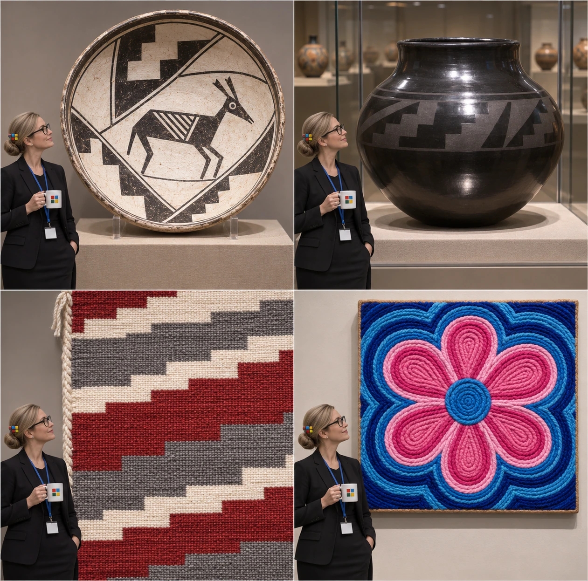
- Top left: Mimbres pottery
- A black creature and angular divisions fit within the white interior of a round bowl.
History and use
Art history connection
Artists of the Mimbres region made distinctive painted pottery in present-day New Mexico. The best-known black-on-white bowls date mainly to about 1000–1150 CE.
When to use it
Study the relation between the bottom of the bowl and the design that reaches toward its rim.
Why use it
A simple high-contrast figure remains clear across the changes of perspective caused by a curved surface.
- Top right: Pueblo pottery
- On the dark pot, the reflected light makes the shiny and matte bands stand apart.
History and use
Art history connection
Many Pueblo communities have distinctive pottery traditions. The black-on-black example refers to work developed by Maria and Julian Martinez of San Ildefonso Pueblo in the twentieth century.
When to use it
Study published examples to see how polishing and firing can carry a pattern within a single color.
Why use it
Changes in sheen make the design emerge and recede as the pot or viewer moves.
- Bottom left: Navajo weaving
- Colors make a stepped band across tightly woven wool, and the side shows the cloth's edge.
History and use
Art history connection
Diné weaving developed over centuries and continues today. Wool, trade, shifting markets and family practice have shaped changes in its materials and designs.
When to use it
Look at both a documented textile and its edges when studying how the loom shapes a design.
Why use it
The stepped motif builds on the intersections of threads and makes structure visible.
- Bottom right: Huichol yarn painting
- Small colored yarn lines turn and stack around a simple motif.
History and use
Art history connection
Wixárika artists in Mexico have used yarn and related materials to make images and objects. Modern commercial and fine-art yarn pictures have their own histories alongside ceremonial practices.
When to use it
Use artist-attributed public examples when studying how colored yarn follows the contours of an image.
Why use it
Closely laid lines give the surface a tactile rhythm and can distinguish adjacent areas even when their colors are similar.
Layers of cut cloth
Follow the colored edges one by one to see what each cloth layer contributes to the pattern. The technique study uses an invented design.
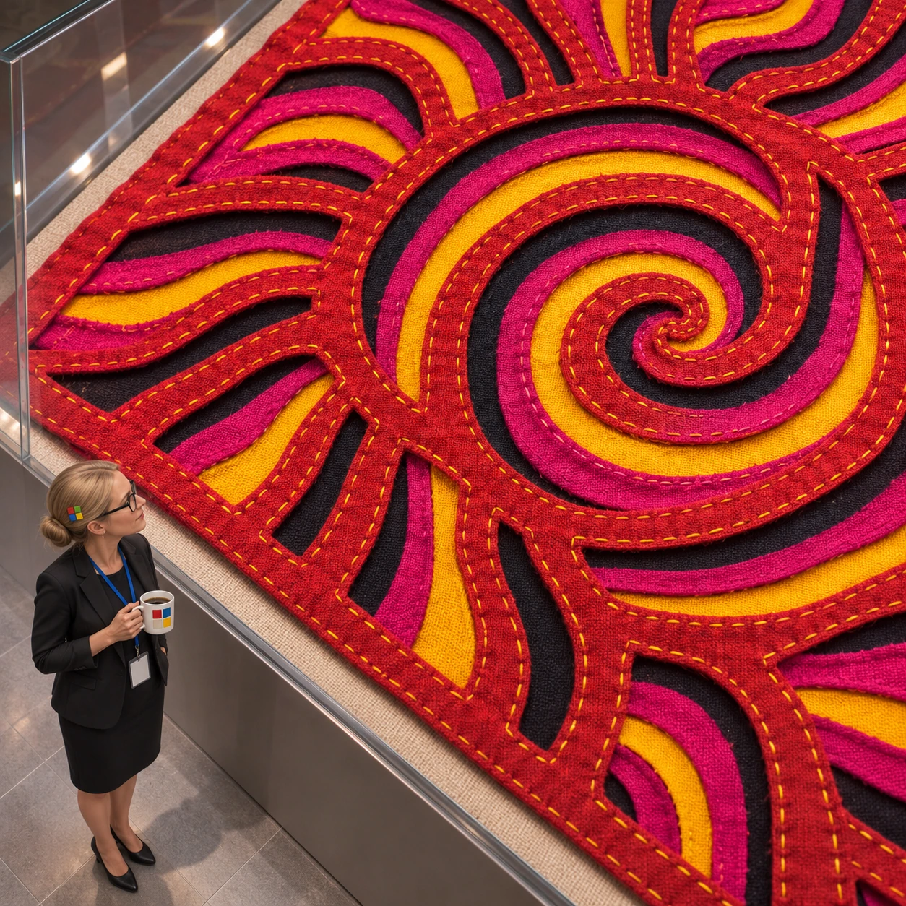
- Study: mola
- Colored channels appear where upper cloth layers are cut back. Fine stitches hold down their edges.
History and use
Art history connection
Guna makers, particularly women in present-day Panama and Colombia, developed mola panels for garments. Reverse appliqué often works alongside other stitches and applied details.
When to use it
Study a documented panel when you want to understand how a design can be built by revealing material from underneath.
Why use it
A single cut reveals a new color and makes the depth of the fabric itself part of the image.
Assemble, cut and decorate a surface · 18 examples
- Assembling a tiled surface
- Inlay, enamel and polished layers
- Constructing a surface from units
- Cut, carve and float a design
- Writing, geometry and branching ornament
Assembling a tiled surface
Inspect the joins as well as the motifs. Each tile tradition makes a different relationship between an individual piece and the whole wall.
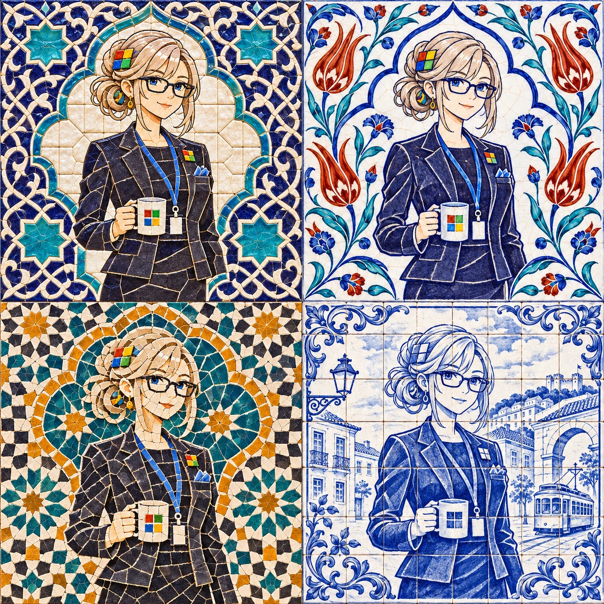
- Top left: Islamic tilework
- Turquoise and indigo interlace forms a repeating architectural frame.
History and use
Art history connection
Tilework spans varied traditions across the Islamic world, including cut-tile mosaic, painted ceramics and lusterware on architectural surfaces.
When to use it
Design a durable wall surface where repeated geometry will carry the eye along it.
Why use it
Glazed repeated pieces maintain a strong pattern at room scale.
- Top right: Iznik tilework
- Cobalt lines and vivid red tulips are painted against a white ground.
History and use
Art history connection
Iznik workshops supplied richly decorated ceramics and tiles for the Ottoman court. Vines and blossoms became a characteristic part of mosque interiors.
When to use it
Add a legible floral rhythm and bright color to an architectural panel.
Why use it
The bright ground gives sharp outlines and translucent glazes room to stand out.
- Bottom left: zellige
- A mosaic of tiny cut pieces builds the face and surrounding geometry together.
History and use
Art history connection
Moroccan zellige uses glazed tiles cut to precise shapes and assembled into larger geometric compositions. It appears in courtyards, fountains and interiors.
When to use it
Build a repeating pattern whose small irregular edges stay visible.
Why use it
Each separately colored piece locks into a stable pattern with a distinct surface rhythm.
- Bottom right: azulejo
- A blue narrative scene continues across a regular grid of white tiles.
History and use
Art history connection
Azulejo denotes glazed tiles used on the Iberian Peninsula. Blue-and-white narrative panels became especially prominent in Portugal from the late 17th century.
Museu Nacional do Azulejo · the collection and its techniques
When to use it
Wrap a durable picture around a stair, corridor or outdoor wall.
Why use it
Square pieces can carry parts of a larger painted scene, so the image continues across their joints.
Inlay, enamel and polished layers
Look for where color lives. It can sit in layered coats, fill a wire enclosure, form part of a stone or come from the grain of a thin piece of wood.
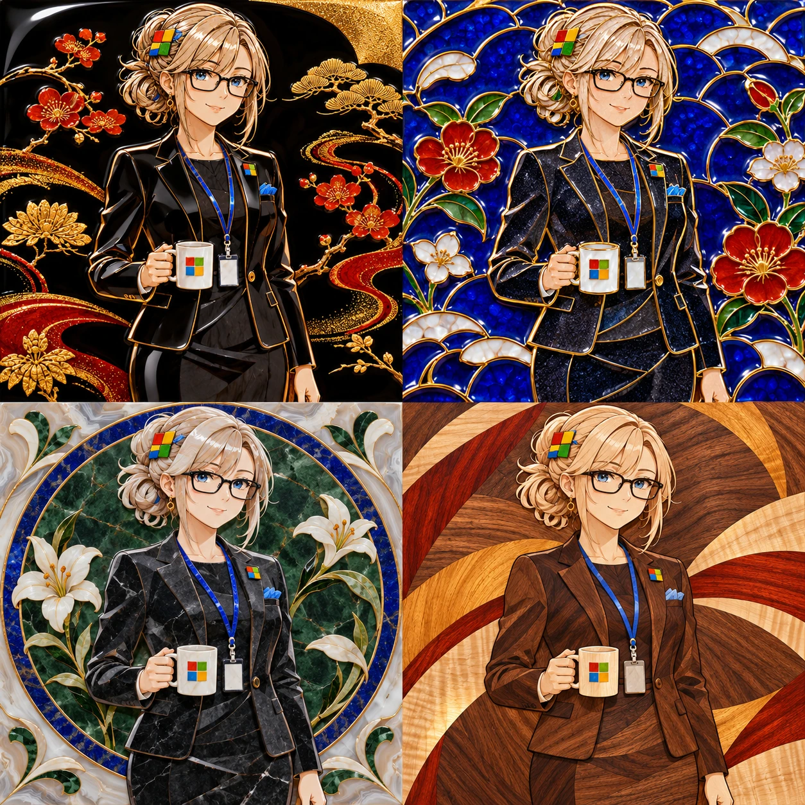
- Top left: lacquerware
- Gold and vermilion marks sit over a deep black glossy surface.
History and use
Art history connection
Many East Asian lacquer traditions build layers of refined tree sap. Japanese maki-e decorates the surface with powders such as gold.
When to use it
Make a polished object with color and fine metallic detail on a dark field.
Why use it
Layers create depth, while powdered metal catches the light where it lands.
- Top right: cloisonné enamel
- Narrow brass outlines separate pockets of bright glass color.
History and use
Art history connection
Cloisonné workers form small cells with metal partitions and fill the cells with enamel. The technique was used widely on decorative objects in China and elsewhere.
When to use it
Define a small emblem with saturated colors that stay within clear boundaries.
Why use it
The wires retain the enamel and make its edges crisp.
- Bottom left: pietra dura
- Polished slices of jasper and agate supply color and natural variation.
History and use
Art history connection
Florentine pietra dura workshops cut and assemble colored stones into pictorial panels. Medici patronage supported a major workshop from the late 16th century.
When to use it
Design a decorative surface where real material supplies color and pattern.
Why use it
Veins and mottling can become part of the image without painted detail.
- Bottom right: marquetry
- Visible shifts in wood grain distinguish face, clothing and background.
History and use
Art history connection
Marquetry uses shaped veneers to decorate a surface. Eighteenth-century furniture makers such as the Roentgens made detailed pictorial veneers.
When to use it
Make a composition with natural grain directions and related warm colors.
Why use it
The wood gives each shape texture and value while keeping the surface level.
Constructing a surface from units
Compare the continuous glass with surfaces built from beads, strips and feathers. Reflections, weave and alignment tell you how each object was made.
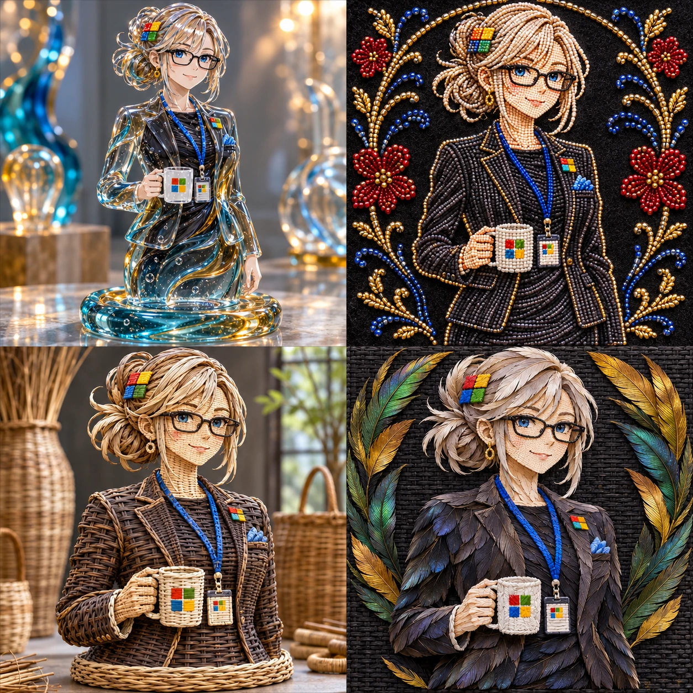
- Top left: blown glass
- Thick clear and teal areas bend the light and magnify the contours.
History and use
Art history connection
Glassblowing spread through the Roman world around the turn of the first century, enabling artisans to give molten glass many new shapes.
When to use it
Make a vessel or figure in which transparency should emphasize the curves.
Why use it
Air and gravity shape the glass while its varying thickness changes how light passes through it.
- Top right: beadwork
- Rows of separate seed beads organize the edges and color.
History and use
Art history connection
Beadwork is practiced in many cultures. Indigenous North American artists developed distinct techniques and designs with traded glass beads.
When to use it
Make an ornament whose pattern should sparkle and remain readable along a garment.
Why use it
Color is built from individual units that can follow a curve or fill a block.
- Bottom left: basketry
- Light and dark willow strips cross to outline the sitter’s glasses and mug.
History and use
Art history connection
Basket makers across many cultures use local plant materials and techniques such as plaiting, coiling and twining to make shaped containers.
When to use it
Build a light three-dimensional form with visible structure.
Why use it
Tension and overlapping strips let the pattern and the structure emerge together.
- Bottom right: featherwork
- Overlapping feathers reflect gold and green at different angles.
History and use
Art history connection
Featherwork has been used in many cultures, including Hawaiʻi and pre-Columbian Mesoamerica, where feathered garments and objects could convey rank.
When to use it
Make a surface whose color should shift as the viewer moves.
Why use it
The direction and overlap of the plumes can change both color and sheen.
Cut, carve and float a design
How much of a picture can come from a cut edge, a carved surface or a floating current? Each of these methods starts with a different physical gesture.
- Left: papercutting
- A continuous red sheet forms an open network of details.
History and use
Art history connection
Chinese papercutting traditions developed a repertoire of festive and symbolic images. Artists cut connected shapes with scissors or knives.
When to use it
Create a window ornament that should read as a strong silhouette.
Why use it
The open spaces count as much as the paper left behind.
- Center: ivory carving
- Fine grooves and polished curves stand out in a small historic ivory-like statuette.
History and use
Art history connection
Historic ivory objects appear in traditions across Europe, Asia and Africa. Museum collections document the material’s historical use in compact carving.
When to use it
Study fine figures on a museum object or use an alternative material for a new miniature.
Why use it
Selective light catches tiny carved details at close viewing distance.
- Right: paper marbling
- Gold, green and rust channels swirl across the sheet.
History and use
Art history connection
Paper marblers float color on liquid and transfer the pattern to paper. The Turkish ebru tradition is one such practice.
When to use it
Make endpapers or a background with a flowing, nonrepeating pattern.
Why use it
The movement of color on liquid preserves small changes in force and direction.
Writing, geometry and branching ornament
These three design traditions often share a surface. Compare the pace of a pen stroke, the rotation of a star and the unfurling of a stem.
- Left: Islamic calligraphy
- Broad and narrow marks imitate the cadence of a pen, without representing words.
History and use
Art history connection
Islamic calligraphic traditions use scripts including Arabic, Persian and Ottoman Turkish in manuscripts, inscriptions and objects. Actual calligraphy carries language and meaning.
When to use it
Work with a calligrapher when text and letterform should both shape an object.
Why use it
A differentiated pen stroke turns the rhythm of reading into a visual structure.
- Center: geometric pattern
- Repeated point stars and polygons interlock across the surface.
History and use
Art history connection
Geometry appears in many Islamic art traditions, including tiles, carved surfaces and manuscript borders. Straightedge-and-compass constructions can generate repeating layouts.
When to use it
Make a pattern that can extend across a wall or page in every direction.
Why use it
The same rules organize detail at different scales and keep adjoining sections aligned.
- Right: arabesque
- Thin stems spiral and branch into curling leaves around a small portrait.
History and use
Art history connection
Vegetal motifs developed across centuries and media in Islamic art. An arabesque often combines stylized leaves, tendrils and repeated branching.
When to use it
Fill a band or panel with ornament that feels continuous and alive.
Why use it
The branches make a dense pattern while guiding the eye from one curve to the next.
Look around a carved or cast figure · 19 examples
- Sculpture in the round
- Figures made for a place
- Heads and figures in metal and clay
- Carved and assembled Pacific forms
- Four ways to model a body in space
Sculpture in the round
Each statuette occupies space, but its material changes the character of every fold, edge and reflection.
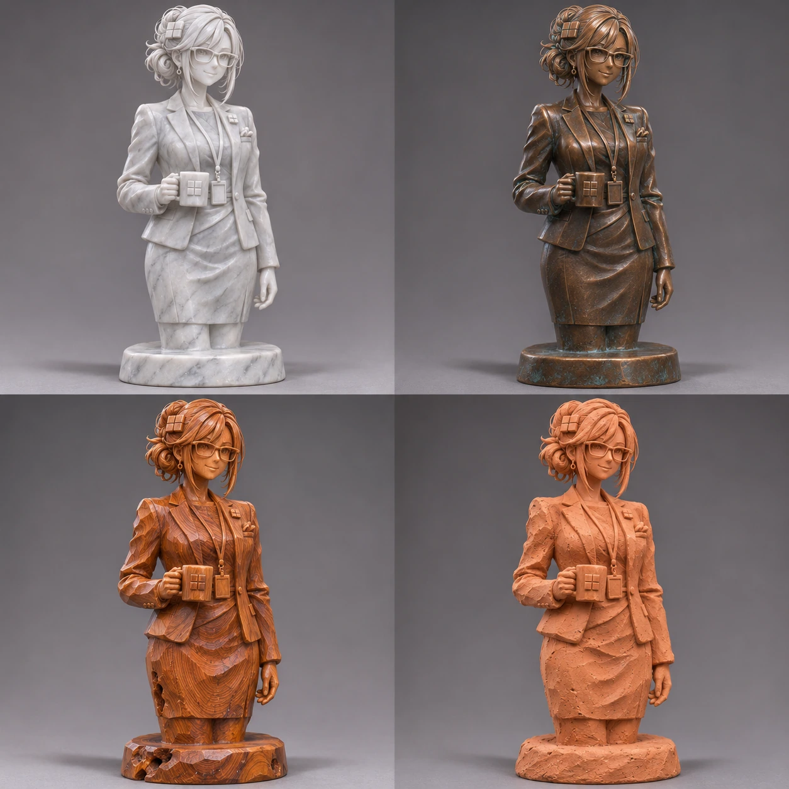
- Top left: freestanding marble sculpture
- Light slides across the smooth white stone and sits inside carved folds.
History and use
Art history connection
Carrara marble was prized by European sculptors. Renaissance artists such as Michelangelo carved large figures from single blocks.
When to use it
Make a durable figure with gradual modeling and precise planes.
Why use it
Stone can retain smooth, light-reflecting surfaces and crisp cut details.
- Top right: cast bronze sculpture
- The dark figure reflects light on the edges, with patches of patina.
History and use
Art history connection
Lost-wax bronze casting was used for ancient statues and flourished again in Renaissance workshops, including Donatello's.
When to use it
Choose a material for thin elements that project beyond the main figure.
Why use it
Bronze can take small detail from the model and support shapes that would be fragile in some stone.
- Bottom left: wood sculpture
- Grain follows the contours, interrupted by sharp chisel marks.
History and use
Art history connection
Wood has served carving traditions throughout the world. Late medieval German altarpieces often include intricate figures carved from limewood.
When to use it
Shape a figure whose natural material stays visible after finishing.
Why use it
Grain adds directional texture; the carver can follow or interrupt it to define a form.
- Bottom right: terracotta sculpture
- The warm clay retains soft transitions, shallow tool marks and a porous surface.
History and use
Art history connection
Unassisted or molded modeling in fired clay has produced figures for millennia, from ancient votive objects to artists’ studies for works in stone.
When to use it
Create a small portrait with direct hand marks and broad volumes.
Why use it
Soft clay records additions, compression and tool pressure before firing.
Figures made for a place
These sculptures look different because they belong in different spaces. Follow the bend of a bronze figure, the shadow inside a niche and the story carved along a wall.
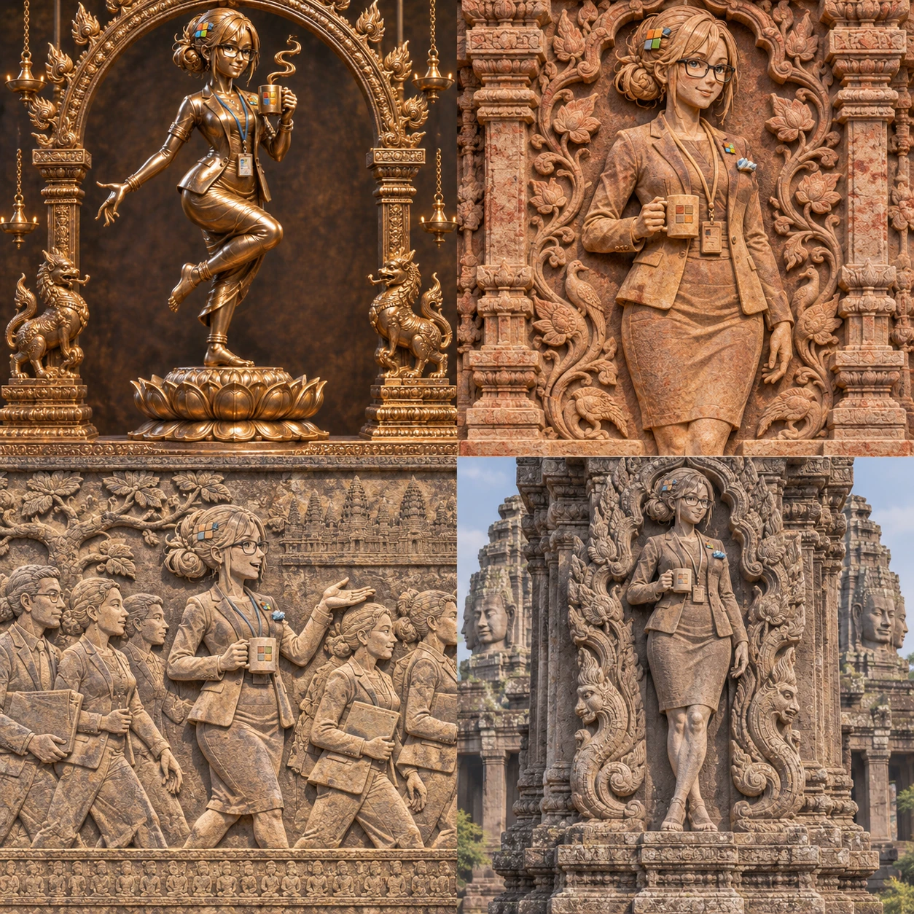
- Top left: Chola bronze
- Curved limbs and a polished metal surface give the pose a sense of motion.
History and use
Art history connection
Under the Chola dynasty, southern Indian workshops created bronze processional images. Sculptures of Shiva as Nataraja are especially well-known examples.
When to use it
Make a freestanding figure whose silhouette changes meaningfully as you walk around it.
Why use it
Cast bronze supports elegant projections and makes small changes in pose clear from multiple sides.
- Top right: South Asian temple sculpture
- Deep sandstone relief connects the figure to carved columns and foliage.
History and use
Art history connection
Hindu, Buddhist and Jain temples throughout South Asia have varied sculptural programs. Figures can articulate entrances, niches and the exterior elevations.
When to use it
Fit a figure into the weight and proportions of an actual architectural niche.
Why use it
Deep cuts create shadows that make the form readable against a dense backdrop.
- Bottom left: Khmer relief
- Close-packed profiles and repeating gestures carry a shallow band of figures around the portrait.
History and use
Art history connection
Khmer reliefs at Angkor include long carved narratives. Some depict court processions and everyday scenes, while others draw on epic tales.
When to use it
Make an episode that can be read while walking past a wall.
Why use it
Shallow carving keeps the surface continuous and lets repeated gestures carry the story.
- Bottom right: Angkor art
- Floral borders and repeated tower forms organize the slab around the figure.
History and use
Art history connection
Angkor encompasses centuries of Khmer building and art. Sandstone towers, gate figures and reliefs work together across temples such as Angkor Wat and the Bayon.
When to use it
Design a figure or emblem to guide a viewer from approach to doorway.
Why use it
Repeating carved forms connect close details to the larger building rhythm.
Heads and figures in metal and clay
Cast metal and fired clay can make heads almost lifelike or sharpen familiar features into a distinct set of shapes. These studies refer to three separate artistic traditions in present-day Nigeria.
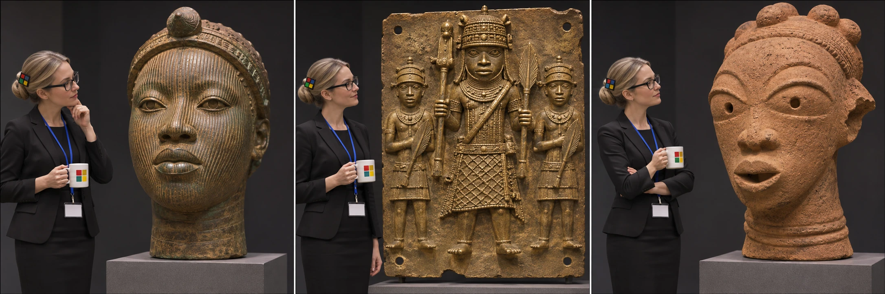
- Left: Ife bronze
- Fine lines run down a softly modeled metal face, following its nose, mouth and cheeks.
History and use
Art history connection
Ife was a major Yoruba city. Surviving cast copper and copper-alloy heads from the medieval period show the skill of its artists.
When to use it
Study the transitions around the nose and chin to see how a hard material can capture subtle flesh forms.
Why use it
The careful casting records a commanding face and its surface markings at the same time.
- Center: Benin bronze
- Central and flanking court figures project from a rectangular metal plaque in shallow relief.
History and use
Art history connection
Edo artists made brass plaques and other court works for the Kingdom of Benin. British forces looted many royal holdings during the 1897 invasion.
When to use it
Study how a relief image can organize ranks, regalia and other clues to status.
Why use it
Relative scale and grouping make the court hierarchy legible even in shallow depth.
- Right: Nok terracotta
- Pierced pupils, wide geometric eyes and an uneven fired surface are the clearest clues.
History and use
Art history connection
Ancient Nok communities in what is now central Nigeria made some of the earliest known figurative terracottas in sub-Saharan Africa. Many survive as fragments.
When to use it
Study how fired clay can preserve fine openings and strong features after centuries.
Why use it
Cut, pierced and modeled forms catch light differently, separating each feature.
Carved and assembled Pacific forms
Each object begins with a different material and skill. The modern visitor makes the carved surfaces and featherwork easier to compare at human scale.
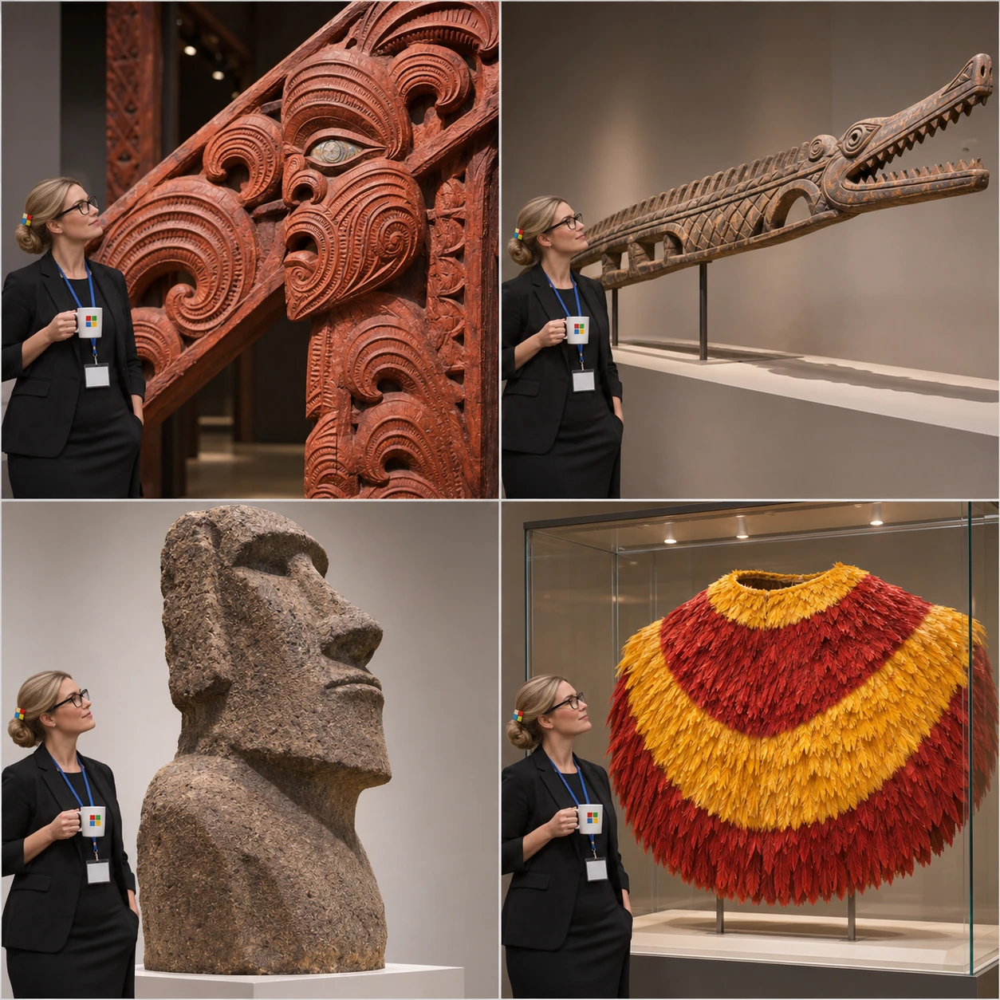
- Top left: Māori carving
- Curving ridges throw fine shadows, and small areas of shell reflect light against the reddish wood.
History and use
Art history connection
Māori whakairo includes practices of carving wood and other materials. Carved figures on meeting houses and objects can express connections with particular ancestors and communities.
When to use it
Study attributed examples for the way a carved piece relates to its place in a larger structure.
Why use it
Depth and repeated curves let an architectural design carry across a wall or a room.
- Top right: Sepik carving
- Elongated lines and incised surfaces make the wooden fragment visually distinct from its display mount.
History and use
Art history connection
Many different peoples live along Papua New Guinea's Sepik River and have distinct carving traditions. Some forms belong to ceremonial houses or other community settings.
When to use it
Study an identified carving alongside details about its use and original setting.
Why use it
An object that seems narrow or abstract in a case may have made sense as part of architecture or performance.
- Bottom left: Rapa Nui art
- A heavy brow, long nose and broad shoulders stand out in the stone profile.
History and use
Art history connection
Rapa Nui communities carved moai from stone and set many on ceremonial platforms. The island's art also includes wood carving and other forms.
When to use it
Study a documented moai when you want to understand how very large sculpture works in relation to land and ancestry.
Why use it
Simplified features hold their place against the horizon and remain distinct at a distance.
- Bottom right: Hawaiian featherwork
- Fine red and yellow feathers make broad crescents that stay bright across the cloak's curved surface.
History and use
Art history connection
Specialists made Hawaiian feather cloaks called ʻahu ʻula by attaching bundles of feathers to netting. The garments signaled high rank and held political and ceremonial significance.
When to use it
Look at how tiny units of material make a clear form both near the body and from afar.
Why use it
Light catches many overlapping feathers while the large color bands preserve the outline of the design.
Four ways to model a body in space
Compare what happens as a figure is modeled, simplified, stretched and opened.
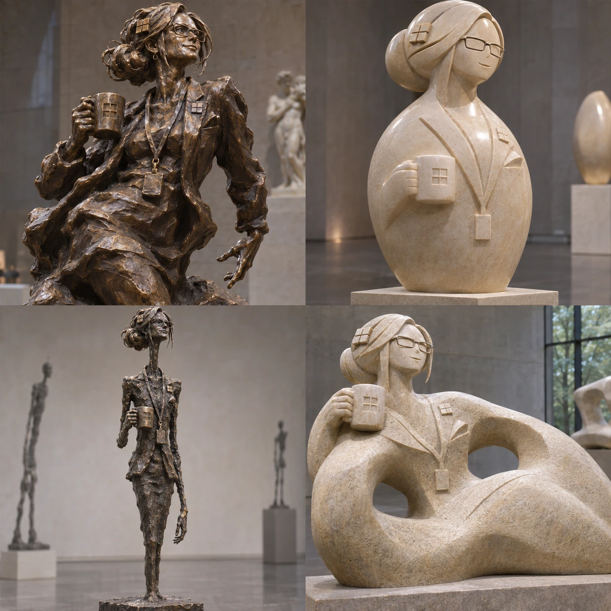
- Top left: Rodin-style sculpture
- Shadows pool in deep bronze ridges around the body.
History and use
Art history connection
Late 19th–early 20th centuries
Auguste Rodin built expressive bodies through vigorously modeled clay or plaster and cast a number in bronze.
When to use it
Keep an active surface to bring gesture into the changing light.
Why use it
Irregular surfaces register different shadows as light or the viewer moves.
- Top right: Brâncuși-style sculpture
- A compact polished mass preserves only a few cues to hair, face and glasses.
History and use
Art history connection
Early to mid-20th century
Constantin Brâncuși worked through recurring subjects such as heads and birds, distilling them into simple, highly controlled volumes.
When to use it
Test how few changes in contour can keep a subject recognizable.
Why use it
A few carefully chosen planes allow the viewer to recognize the form from several directions.
- Bottom left: Giacometti-style sculpture
- The narrow upright body has a pitted skin and delicate projecting limbs.
History and use
Art history connection
Especially late 1940s–1960s
Alberto Giacometti became known for his attenuated, roughly worked postwar figures.
When to use it
Use thinning and rough texture to put presence and distance in tension.
Why use it
An attenuated volume heightens awareness of the gap between the body and its surroundings.
- Bottom right: Moore-style sculpture
- A broad opening makes the space through the figure as important as its surface.
History and use
Art history connection
Especially 1930s–1980s
Henry Moore developed sculptural themes of reclining figures and internal openings across wood, stone, plaster and bronze.
When to use it
Treat a void as a shape that changes as you walk around it.
Why use it
Negative space provides openings and silhouettes that change with viewpoint.
Read a design in everyday use · 14 examples
- Print, lacquer, mural and cast vessel
- Painting, folk craft and everyday wishes
- Painting place and tracing a curve
- A design that follows the body
Print, lacquer, mural and cast vessel
A single design can move from a printed sheet to a polished panel, plaster wall or cast vessel. Look for the process in the edges, reflections and relief.
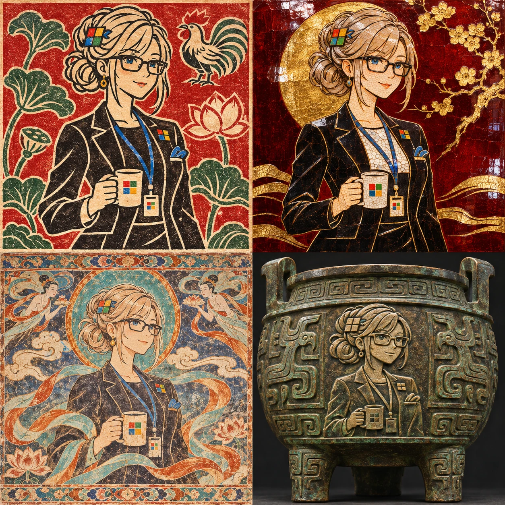
- Top left: Đông Hồ print
- Bold leaf-green and red shapes sit on bright pearly paper.
History and use
Art history connection
Đông Hồ’s Vietnamese folk prints are made from carved wooden blocks and traditionally use colors and papers prepared with natural materials, including shell powder in the paper coat.
When to use it
Create a festive print designed for circulation.
Why use it
A strong outline and a separate color for each printing block keep the design legible.
- Top right: Vietnamese lacquer painting
- Glossy red and black layers show flecks of gold and white eggshell.
History and use
Art history connection
Twentieth-century Vietnamese artists developed lacquer painting into a modern fine-art medium, building on local lacquer craft. Layers are sanded and polished to bring out their colors and inserts.
When to use it
Show fine fragments inside a dark reflective surface.
Why use it
The polishing process can expose multiple depths and let eggshell add variations within a light shape.
- Bottom left: Dunhuang Buddhist murals
- Ribbon-like figures curl around the portrait on worn turquoise and ochre plaster.
History and use
Art history connection
The Mogao caves at Dunhuang contain Buddhist murals and sculptures produced over many centuries along routes connecting China and Central Asia.
When to use it
Study how a repeated painted form can bring motion to a wall or vault.
Why use it
Long curves and rhythmic color changes lead the eye through an expansive surface.
- Bottom right: Chinese ritual bronze
- A symmetrical relief pattern repeats around the dark bronze vessel.
History and use
Art history connection
Early Chinese bronze vessels were made for ritual offerings and other uses. During the Shang and Zhou periods, many vessels bore complex repeating relief patterns.
When to use it
Shape a vessel whose design can be read from several sides.
Why use it
Shallow relief uses the changing angle of light to emphasize the contours and ornament.
Painting, folk craft and everyday wishes
Compare a Japanese approach to painting, a Japanese movement for everyday craft and a Korean folk painting tradition through the painted surface, the work of the hand and the choice of subject.
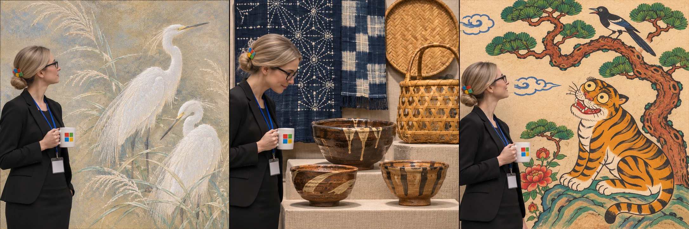
- Left: Nihonga
- The light birds and reeds have finely controlled edges and a matte, finely layered surface.
History and use
Art history connection
Nihonga took shape as a category in Meiji-era Japan, as artists and institutions reconsidered local painting traditions alongside imported European techniques.
When to use it
Study it when researching how modern painters worked with pigments and supports like paper and silk.
Why use it
Fine color adjustments can give a quiet motif more presence than strong light or shadow would.
- Center: Mingei
- Look for how the lip of a pot feels in the hand, or how a textile bends and shows its weave.
History and use
Art history connection
Yanagi Sōetsu and fellow craft advocates formed Japan's twentieth-century folk craft movement to champion beauty in useful handmade objects.
When to use it
Use it when thinking about how an object will be made, handled and used regularly.
Why use it
Handling brings the object's workmanship, durability and visual appeal into the same conversation.
- Right: minhwa
- A tiger and magpie share a boldly outlined space, with lively shapes and vivid patches of color.
History and use
Art history connection
Late Joseon examples of Korean folk painting circulated in domestic and decorative settings, often with auspicious themes. The term covers a wide range of subjects and makers.
When to use it
Study how a familiar animal or object can carry a wish, a joke or a social association.
Why use it
A memorable subject and strong silhouette let a picture communicate across a room.
Painting place and tracing a curve
The board compares surfaces and methods through contemporary exhibits. The traditions connect to custodians, places and histories that a small visual sample can only begin to introduce.
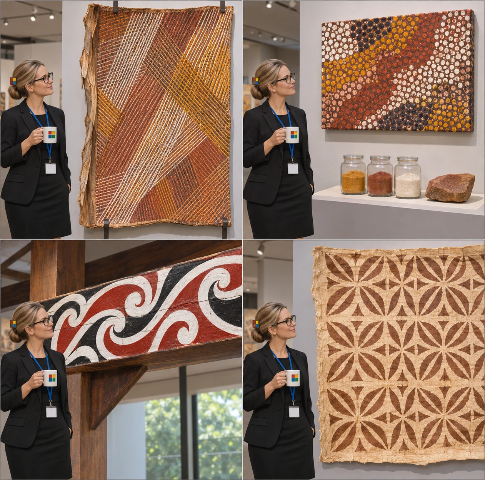
- Top left: Aboriginal bark painting
- The bark's uneven edge remains visible beside earthy paint and crosshatched lines.
History and use
Art history connection
Bark painting has long and varied histories. In Arnhem Land, artists in different communities paint on prepared eucalyptus bark and have distinctive responsibilities for designs and stories.
When to use it
Look at artist- or community-approved examples to study the relationship between a surface, paint and particular place.
Why use it
Bark changes the size and shape of the available surface, and patterns can have meanings held by specific people.
- Top right: Western Desert dot painting
- Separate touches of pigment form visible clusters and seams across the practice panel.
History and use
Art history connection
Beginning in the early 1970s, artists at Papunya used commercial paints and portable supports. Western Desert artists continue to develop distinct ways to paint Country.
When to use it
Use public examples and their artist statements to study the movement within a painted field.
Why use it
Densely and loosely spaced dots can guide the eye. Their presence alone says little about who made a work or what it means.
- Bottom left: kōwhaiwhai
- Red, black and white curves bend and repeat along a beam.
History and use
Art history connection
Māori kōwhaiwhai is painted ornament often found on rafters in meeting houses. Particular designs can carry associations with ancestry or place.
When to use it
Study documented examples when thinking about shape that follows an architectural length.
Why use it
A repeat along a beam lets a curve pull the viewer's eye through space.
- Bottom right: tapa cloth
- The brown repeat lies on a large sheet whose thin raw edge still shows its fibrous construction.
History and use
Art history connection
Pacific barkcloth has many names and local techniques. Artisans beat prepared inner bark and may rub, stencil or paint patterns onto it.
When to use it
Look at public examples to compare where a pattern follows joins and where it runs across them.
Why use it
Beaten bark makes a wide, flexible surface without weaving individual threads.
A design that follows the body
The designs move from a sheet of choices to a single emblem and then across the curves of the body.
- Left: tattoo flash
- Small separate motifs can be selected and transferred individually.
History and use
Art history connection
Especially documented in the 19th–20th centuries
Tattooists used flash sheets to display designs available in a studio, and exchanged or circulated sheets in print.
When to use it
Give each motif a strong silhouette so it can be placed in a number of positions.
Why use it
Individual silhouettes can be presented, chosen and placed without reading each option as part of a large scene.
- Center: American traditional tattoo
- Heavy contours enclose a small set of flat colors and black shadows.
History and use
Art history connection
Especially late 19th–mid-20th centuries
American traditional tattooing drew on itinerant and port-city artists, with bold motifs suited to the materials and practices of the time.
American Institute for Conservation · Preserving the Legacy of Norman Sailor Jerry Collins
When to use it
Choose a few readable colors and stable contours that hold together at small sizes.
Why use it
Thick contours and stable color blocks retain shape across curved and changing surfaces.
- Right: irezumi
- Wave curves and flowers turn with the shoulder as a continuous composition.
History and use
Art history connection
Especially from the Edo period into the present
Japanese decorative tattoo traditions include large pictorial compositions with parallels to Edo-period prints. Their practitioners, meanings and social contexts are varied.
When to use it
Plan how a background pattern continues around a curve and connects major motifs.
Why use it
A connected pattern can continue over the shoulder and link focal motifs from multiple viewpoints.
Read across an image
Follow how a wall, vessel, window, page, or box leads the eye from one figure or event to another.

Ancient Egyptian wall painting
Read the three horizontal bands from arrival to closing time. Such bands are called registers.

Greek black-figure and red-figure vase painting
Compare the same handoff in black and orange. The black-figure technique incises details through dark slip. The red-figure technique paints lines inside the exposed clay shapes.

Classic Maya painted ceramics
Follow the cup from hand to hand across the unwrapped band. On a cylindrical vessel, turning the object would reveal the action in parts.

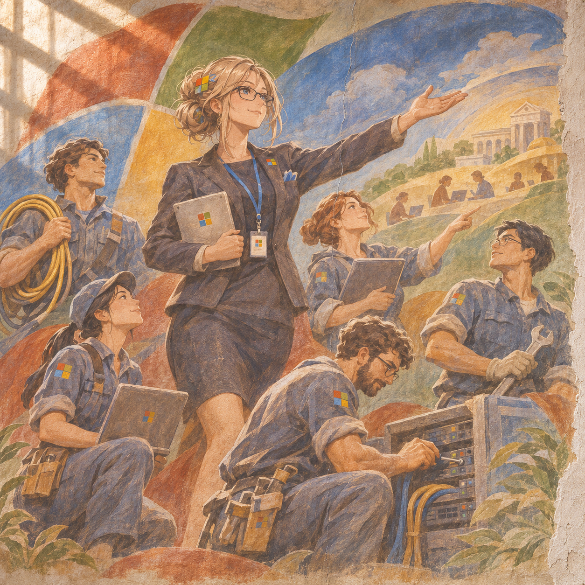
Buon fresco
Examine the painted workers near the surface texture. In buon fresco, pigment is brushed onto fresh lime plaster and sets as the plaster cures.
Byzantine-inspired mosaic
Look at the small tiles around the glasses and how they turn with the outline of the face. A single tile is called a tessera. Byzantine tesserae at The Met

- Top left: Gold wall portrait
- Gold pieces make the figure feel luminous. Dark ones give the glasses and jacket definition.
- Top right: Cobalt niche
- Cobalt makes a deep field inside the arch, so the figure reads as part of the niche.
- Bottom left: Floor medallion
- A circular border makes the portrait easy to orient on a surface seen from above.
- Bottom right: Face in tesserae
- Rows of small tiles turn with the face and change direction around the glasses.
Stained glass
Look at the dark lead lines and then at the colored light projected into the room. The image changes with the light passing through it. The Met on leaded glass
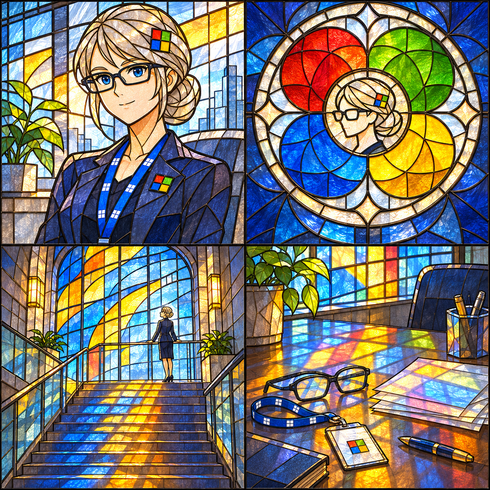
- Top left: Backlit portrait
- Dark leading ties the face and glasses into the network of colored panes.
- Top right: Four-color rose window
- Repeating shapes pull attention toward the center without relying on a single upright figure.
- Bottom left: Blue-and-amber stairwell
- The light projected by the window breaks into separate bands as it crosses the steps.
- Bottom right: Light across an empty desk
- The absent sitter is suggested by the glasses and badge under patches of colored light.

Medieval European manuscript illumination
Let the gold M guide you into the doorway, then follow its decoration into the small scene at the margin.
Persian manuscript painting
Look across walls, stairs, and terraces to see how several activities share a page. Pattern helps tell you when you have crossed into another space. The Met on architecture in Safavid paintings
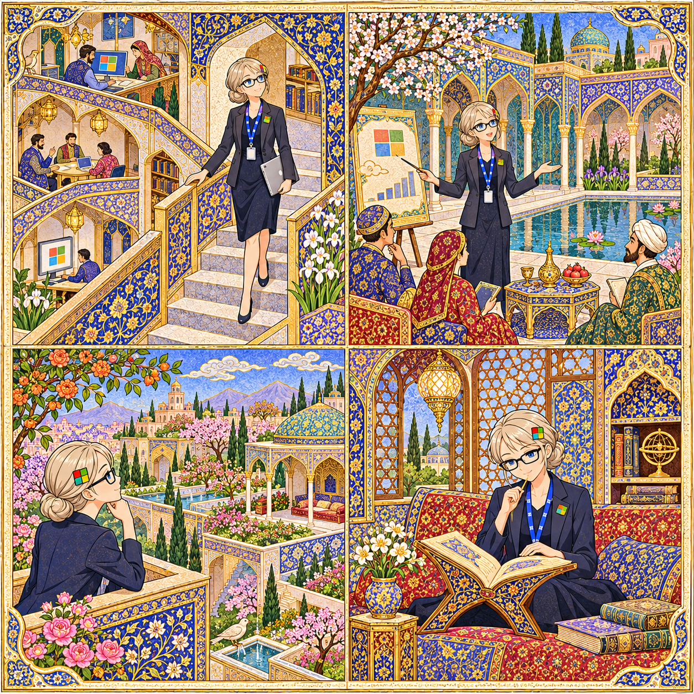
- Top left: Office cutaway
- Stairs link stacked rooms, giving your eye a route through several activities.
- Top right: Courtyard briefing
- The pool and arcade divide a crowded courtyard into areas your eye can read in turn.
- Bottom left: Rooftop garden
- Terraces put near and far plants in view at once. Pattern tells one surface from another.
- Bottom right: Patterned reading room
- The ledger and relatively quiet figure remain clear beside dense textile patterns.

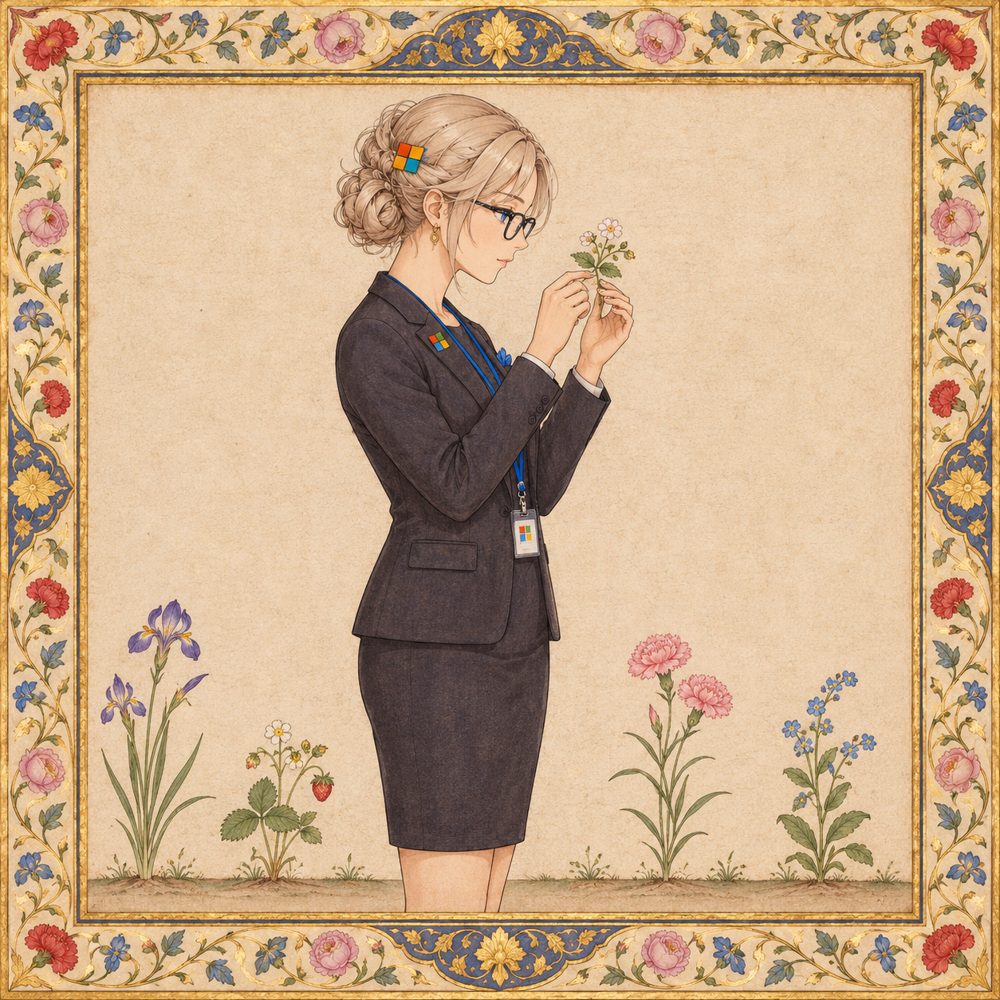
Mughal album painting
Notice the profile and little sprig before tracing the border. The scale of an album page invites you to see details up close.

Ayacucho retablo
Look at the computer on its two levels. The painted doors frame setup and public use as parts of one event.
Follow figures across a wall · 15 examples
- Figures across rock, plaster and time
- Power along a processional route
- Bodies in the ancient Mediterranean
- Rooms, floors and early Christian walls
Figures across rock, plaster and time
Rock and plaster surfaces already have shape, color and texture. Each example uses the wall differently, from the uneven texture of a cave to a prepared plaster surface.
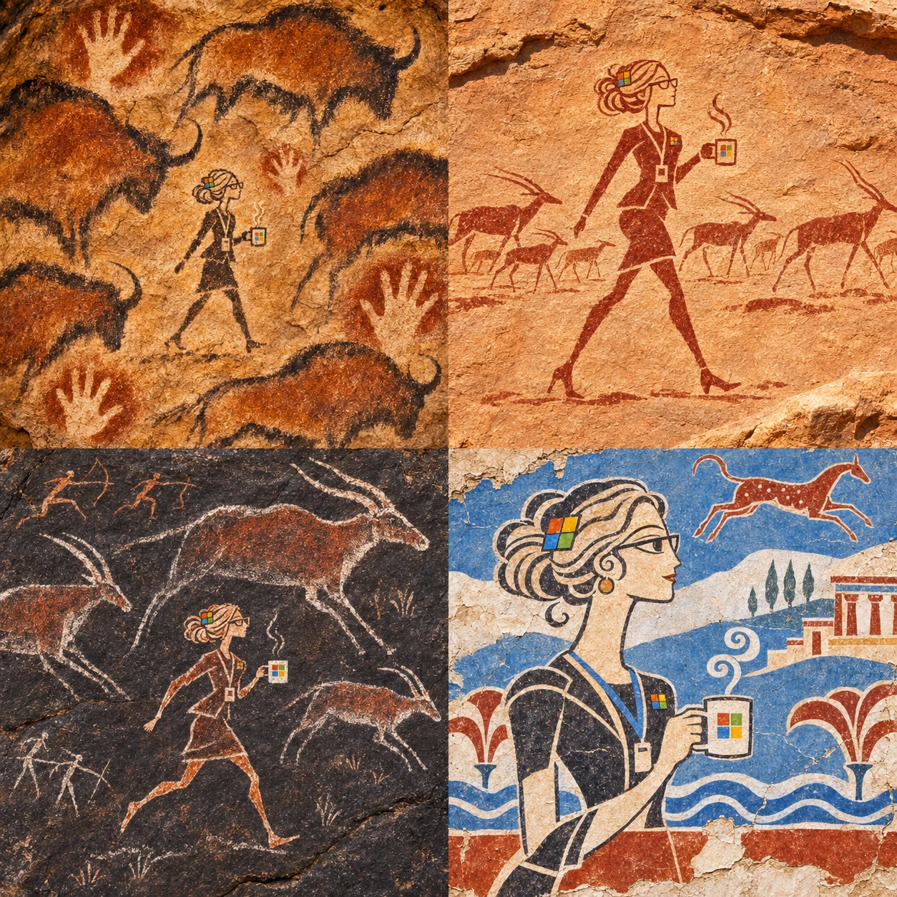
- Top left: Paleolithic cave painting
- Ochre and dark marks follow irregular rock. Animal figures overlap around the invented portrait.
History and use
Art history connection
The Paleolithic cave at Lascaux preserves paintings and engravings including large animals. Some images respond to natural changes in the rock surface.
When to use it
Place a small human figure inside an artwork focused on animals and terrain.
Why use it
The wall’s texture and contours become part of the mark and can suggest volume.
- Top right: Saharan rock art
- Slender figures and herd shapes are painted in dry ochre on open sandstone.
History and use
Art history connection
Tassili n’Ajjer in Algeria preserves thousands of painted and engraved rock images from different periods, including scenes with livestock.
When to use it
Study how small figures and animals can span a large exposed surface.
Why use it
Simple outlines and earth colors remain legible against uneven rock.
- Bottom left: San rock art
- Fine red and white figures and references to eland animate the stone.
History and use
Art history connection
San rock art traditions in southern Africa include carefully drawn animals and people. The figures at uKhahlamba-Drakensberg are among many examples.
When to use it
Study how small articulated figures suggest movement along a wall.
Why use it
Thin brush marks hold the weight and direction of gestures at a tiny scale.
- Bottom right: Minoan fresco
- Swelling black lines and flat blue and red color sit on prepared plaster.
History and use
Art history connection
Bronze Age wall paintings at Minoan sites on Crete include lively profiles and curling natural motifs. Akrotiri on Thera preserves related Aegean fresco traditions.
When to use it
Set a figure into a decorative room while keeping the image bright and dynamic.
Why use it
Areas of strong color separate the wall into rhythms the eye can follow.
Power along a processional route
These modern reinterpretations show ways ancient workshops used figures, animals and repeating architecture to organize a route or mark a place of power.
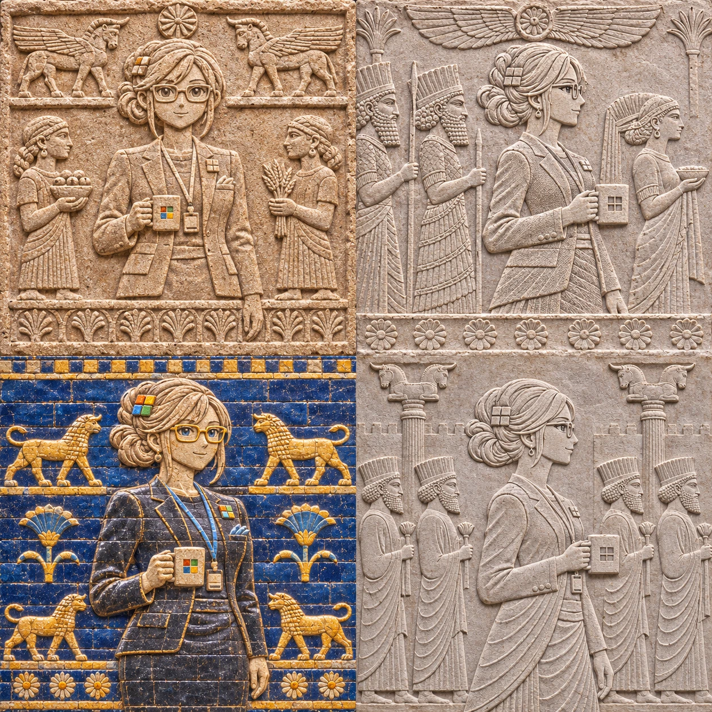
- Top left: Mesopotamian art
- Small figures sit in horizontal bands around a prominent office heroine.
History and use
Art history connection
Ancient Mesopotamia includes many cities, kingdoms and periods. Early Dynastic votive sculpture and relief plaques are examples of its varied artistic production.
When to use it
Arrange a narrative so a viewer can read several actions in stages.
Why use it
Horizontal registers help convey sequence and rank.
- Top right: Assyrian relief
- Profile silhouettes, dense incisions and repeated patterns emerge from pale stone.
History and use
Art history connection
Assyrian kings decorated palace interiors with gypsum reliefs depicting hunting, ceremonies and military campaigns. Major examples survive from Nimrud and Nineveh.
When to use it
Build a continuous scene with distinct figures and repeated gestures.
Why use it
Incised contours and shallow modeled depths can carry a long story along a wall.
- Bottom left: Ishtar Gate
- Raised ochre figures stand out against a wall of glossy blue glazed masonry.
History and use
Art history connection
Nebuchadnezzar II built Babylon’s Ishtar Gate in the sixth century BCE. Its glazed bricks carry striding bulls and dragons, with lions on the Processional Way.
When to use it
Make color, relief and scale define an entryway.
Why use it
Alternating animals and blue masonry turn the wall itself into an image.
- Bottom right: Achaemenid relief
- Neat limestone profiles and garment folds repeat along an orderly procession.
History and use
Art history connection
Achaemenid carved stairways at Persepolis show delegations bearing gifts to the court. Repeated rows organize a long architectural surface.
When to use it
Show people approaching a central place or gathering.
Why use it
Regular spacing and recurring poses can express the order of a group at a glance.
Bodies in the ancient Mediterranean
Compare what each medium keeps of the body. A figure can be reduced to flat forms, balanced in stone, painted as a lifelike face or placed in a group scene.
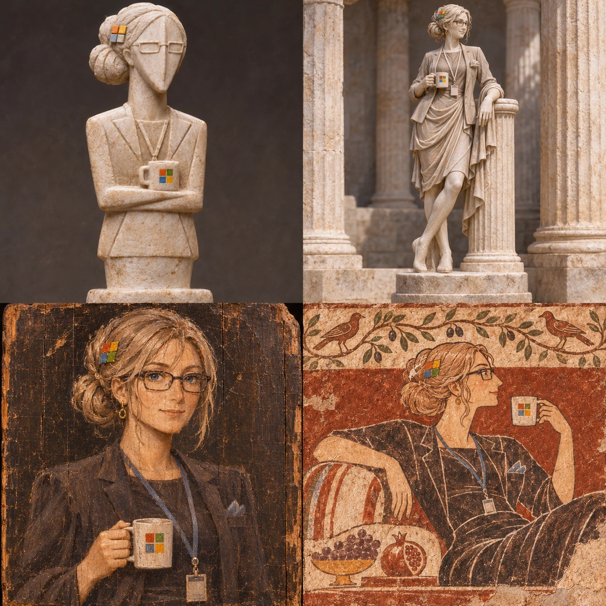
- Top left: Cycladic sculpture
- An elongated flat face and folded arms simplify the figure into clear shapes.
History and use
Art history connection
Early Bronze Age Cycladic marble figures often take a folded-arm form. Traces on some objects indicate that their surfaces once carried painted detail.
When to use it
Make a small figure that remains recognizable through a few decisive planes.
Why use it
The reduced surface directs attention to the silhouette and balance of parts.
- Top right: Classical Greek sculpture
- Despite the still pose, the shoulders and hips tilt as weight settles into one leg.
History and use
Art history connection
Fifth- and fourth-century BCE Greek sculptors worked out ways to convey standing balance and anatomical movement. Later copies help preserve lost bronze originals.
When to use it
Give a standing figure calm weight and an implication of motion.
Why use it
Shifts in the legs and pelvis make a still pose feel physically possible.
- Bottom left: Fayum mummy portraits
- Warm paint catches the eyes and models the face against an aged wooden ground.
History and use
Art history connection
In Roman Egypt, painted likenesses were attached to mummified individuals. Examples from the Fayum and other sites include wax-based and tempera paint on wood.
When to use it
Make a close portrait that feels like it belongs on a small physical panel.
Why use it
Layered light and a direct gaze keep attention on the living features of the sitter.
- Bottom right: Etruscan tomb painting
- A profile at a banquet sits amid curling vines and ochre plaster.
History and use
Art history connection
Etruscan painted tombs at Tarquinia preserve banquet, dance and game scenes. Pictures are arranged around the chambers where visitors would encounter them.
When to use it
Tell a story through a wall-length group of dancers or guests.
Why use it
Profile gestures, figures and repeated borders can carry the scene around the room.
Rooms, floors and early Christian walls
Think about where the viewer stands. A painted room can offer an imaginary view, a floor image unfolds at your feet, and a shallow burial chamber keeps its marks close.
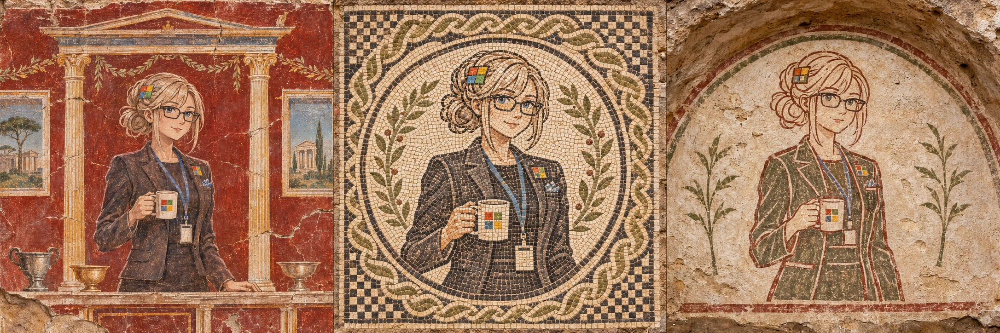
- Left: Roman wall painting
- Deep red painted architecture frames a scene as though seen through a window.
History and use
Art history connection
Roman painted rooms at Pompeii and surrounding villas preserve several decorative systems. Second Style painters used perspective to create illusions of space beyond the wall.
When to use it
Give a painted interior an opening into an imagined room or landscape.
Why use it
Repeated architectural lines lend believable depth to an otherwise flat wall.
- Center: Roman mosaic
- Small light and dark stones form a continuous figure under a patterned border.
History and use
Art history connection
Roman mosaicists used stone, glass and other materials in repeated small pieces called tesserae. Many floor mosaics combine figures, ornament and borders.
When to use it
Make a durable floor with enough contrast to read from standing height.
Why use it
Separate colored pieces maintain a rhythm at close range while resolving into a picture at a distance.
- Right: catacomb painting
- Very few red and green lines define a small figure on pale worn plaster.
History and use
Art history connection
Early Christian catacombs in Rome preserve painted spaces with imagery including the Good Shepherd and episodes from scripture.
When to use it
Work inside a shallow architectural niche where a few simple forms should carry.
Why use it
A restrained curved composition can fit the actual arch and read in modest light.
Read a figure made for devotion · 15 examples
- Painting for devotion
- How a manuscript commands attention
- Medieval figures and courtly gestures
- Painting devotion across South Asia
Painting for devotion
Each example adapts a different tradition of devotional painting to the same fictional figure. Compare how frontality, line, color and framing direct attention.
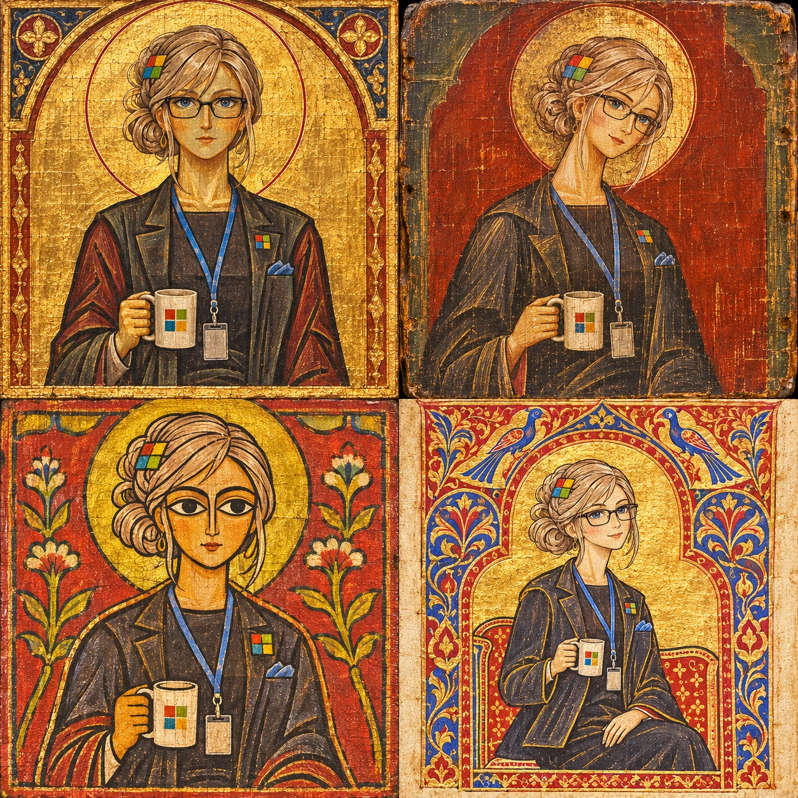
- Top left: Byzantine icon
- A frontal gaze and gently modeled face stand against luminous gold.
History and use
Art history connection
Byzantine icons were devotional images made in several materials. Painted icons often use a gold ground and follow established holy types.
When to use it
Give a central figure the still presence of a panel intended for sustained viewing.
Why use it
The frontal pose and reduced spatial cues keep attention on the eyes and hand gestures.
- Top right: Russian icon painting
- Long forms, lean pale strokes and dark vermilion make the figure formal and slightly tilted.
History and use
Art history connection
Russian icon painting combined Byzantine imagery with local workshops and conventions. Andrei Rublev is associated with an influential medieval tradition.
When to use it
Compose a quiet panel with a narrow palette and carefully weighted gestures.
Why use it
Fine light strokes bring out folds and hands without breaking the larger silhouette.
- Bottom left: Ethiopian Christian painting
- Strong red fields and large outlined eyes set an emphatic frontal presence.
History and use
Art history connection
Ethiopian Christian art includes manuscript illuminations, wall paintings and painted devotional panels. Regional styles changed over centuries and through contact with other traditions.
When to use it
Center a portrait around the eyes and clear, repeated outlines.
Why use it
Broad colors and bold contours remain legible inside a small panel.
- Bottom right: Armenian manuscript illumination
- Small ornamental arches and red, blue and gold borders contain the figure.
History and use
Art history connection
Armenian manuscript illuminators decorated Gospel books with images and rich ornamental frames. T‘oros Roslin worked in the Armenian Kingdom of Cilicia in the 13th century.
When to use it
Make the act of turning to an illustrated page feel deliberate and ceremonial.
Why use it
The decorated frame controls where the eye enters and dwells on the page.
How a manuscript commands attention
A page can command attention through interlace, quick-moving ink lines or a large figure against gold. The pictures keep the margins visible as part of the design.
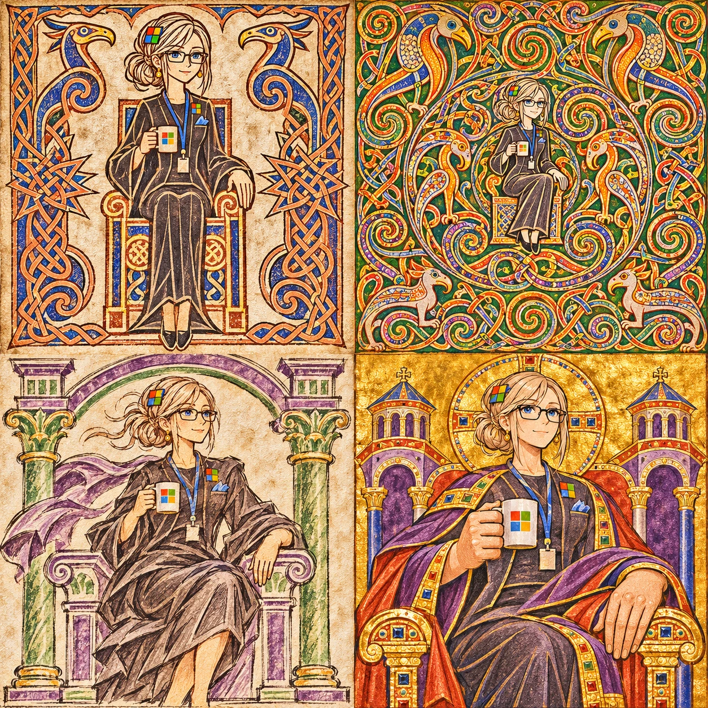
- Top left: Insular art
- Angular outlines and interwoven creatures connect the figure to the border.
History and use
Art history connection
Insular manuscript art developed around Ireland and Britain in the early Middle Ages. Gospel books such as the Lindisfarne Gospels reflect a variety of traditions.
When to use it
Design a frame that rewards a reader who pauses to trace its details.
Why use it
Interlace guides the eye and gives repeated elements their own rhythm.
- Top right: Book of Kells style
- Spiraling knots and densely colored creatures partially hide a small figure.
History and use
Art history connection
The Book of Kells is an illustrated Gospel manuscript made around the year 800. Trinity College Dublin holds the book and shows details of its decorated pages.
When to use it
Make ornament almost as important to a page as the subject it surrounds.
Why use it
Tight repetition and surprise details invite the viewer to keep looking.
- Bottom left: Carolingian art
- Fast ink lines make the mantle and figure seem to move.
History and use
Art history connection
Carolingian manuscripts revived classical figure and architecture conventions, sometimes in very lively ink. The Utrecht Psalter is an example of animated line applied to narrative.
When to use it
Tell a story through small movements on a page.
Why use it
Quick changes in line direction make hair, fabric and gesture energetic.
- Bottom right: Ottonian art
- A large, deliberately still figure stands out from a gold and vermilion ground.
History and use
Art history connection
Ottonian workshops produced lavish Gospel and liturgical books. The Gospels of Otto III feature monumental figures and richly colored backgrounds.
When to use it
Use scale and broad fields of color to establish an important moment.
Why use it
The strong hierarchy tells the reader where to look before smaller details become clear.
Medieval figures and courtly gestures
Watch how each treatment carries a figure across its surface. Dense stone shapes, a tall window and an illuminated page ask for different lines and poses.
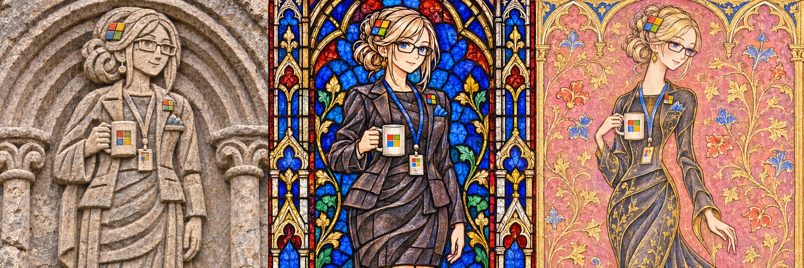
- Left: Romanesque art
- Broad carved folds hold the figure inside a shallow arch.
History and use
Art history connection
Romanesque sculptors worked on church portals and capitals in medieval Europe. Large tympana made room for tightly arranged figure scenes.
When to use it
Fit a detailed story into a stone arch or other bounded space.
Why use it
Deep ridges, large gestures and compressed figures read from below.
- Center: Gothic art
- Colored pieces and dark leading show the body at the scale of a tall window.
History and use
Art history connection
Gothic churches used tall, increasingly elaborate stained glass. Lead strips joined small pieces into luminous figures and scenes.
When to use it
Use colored light to create a focal figure in a room.
Why use it
The same thick lines hold the glass together and make the drawing readable.
- Right: International Gothic
- A curved stance and fine line stand against gold and elaborate fabric.
History and use
Art history connection
International Gothic painting flourished around European courts around 1400. Manuscripts and panels often emphasize sumptuous surfaces and graceful figures.
When to use it
Suggest refinement through small gestures, pattern and dressed figures.
Why use it
Long lines carry the gesture while reflective gold and ornament slow the eye.
Painting devotion across South Asia
These traditions organize attention through painted gestures, layers of imagery, a central diagram or a radiant frame. Each study adapts those choices to a fictional figure.
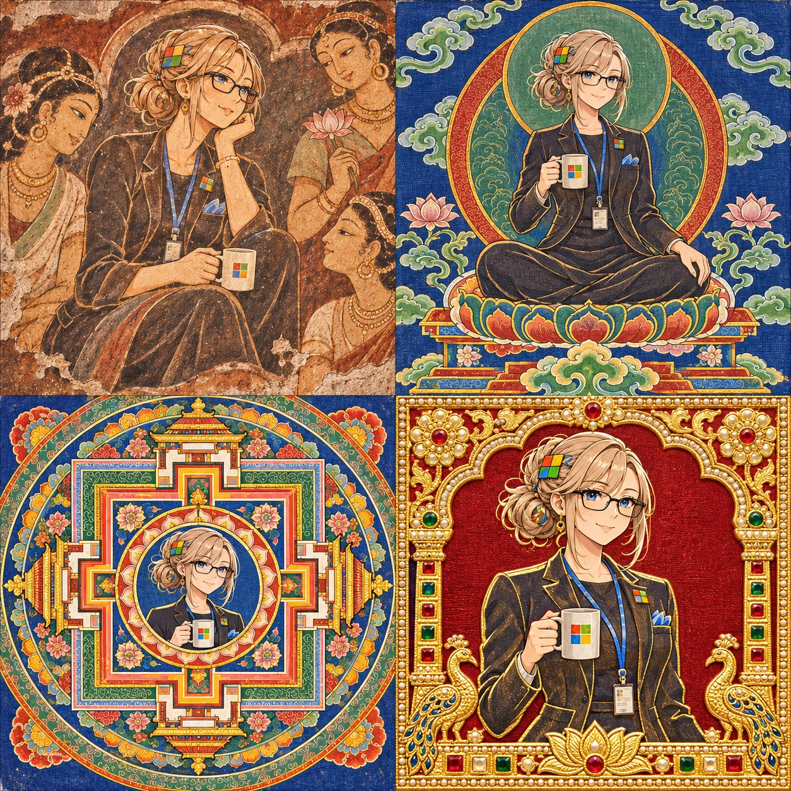
- Top left: Ajanta mural
- Soft bent figures and warm brown pigments follow the wall’s texture.
History and use
Art history connection
Ajanta’s rock-cut Buddhist caves in India preserve painted scenes made over several centuries, including finely modeled figures and stories from the Buddha’s lives.
When to use it
Give an extended wall narrative a sense of humane gestures and continuous movement.
Why use it
The curved bodies and warm color transitions help nearby figures feel connected.
- Top right: Tibetan thangka
- Precise blue-green shapes, cloud motifs and tiered figures surround the central sitter.
History and use
Art history connection
A thangka is a portable painted or appliquéd textile image used in Tibetan Buddhist contexts. Painters often follow specific iconographic proportions.
When to use it
Study how a portable picture can organize many small figures around a clear center.
Why use it
Crisp borders, tiers and a central image give the eye a stable path through detail.
- Bottom left: Tibetan mandala
- Concentric zones surround a center, with paths divided by gates on four sides.
History and use
Art history connection
Tibetan Buddhist mandalas can depict the architecture of a sacred space. Painted and sand mandalas serve different purposes within religious practices.
When to use it
Make an explicitly fictional diagram that leads attention from an edge toward a center.
Why use it
Repeating rings and cardinal positions make a complex design easy to navigate.
- Bottom right: Tanjore painting
- Gilded decoration and inset ornament rise around a dark central silhouette.
History and use
Art history connection
Tanjore painting developed around Thanjavur in southern India. Rich relief decoration, foil and inset stones are common in images made for devotional settings.
When to use it
Build a small frontal panel with a brilliant surround or architectural frame.
Why use it
The gold and relief give a clear distinction between the frame and the painted figure.
Follow a story across places and pages · 16 examples
- Court portraits and painted stories
- Schools and settings in southern Asia
- Mesoamerican monuments and painted books
- Four ways of recording a living world
Court portraits and painted stories
Look from the foreground figure to the edges of each picture. These courtly examples use different ways to arrange architecture, color and landscape around a person.
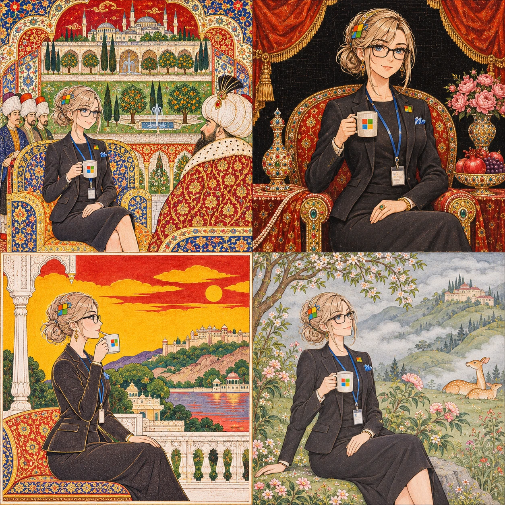
- Top left: Ottoman miniature
- An ornamental courtyard stacks architecture and figures upward in the page.
History and use
Art history connection
Ottoman court workshops illustrated histories, royal ceremonies and literary works. The Sürname-i Hümayun manuscript records festivities in stylized scenes.
When to use it
Fit a crowded formal occasion and its architecture onto a small page.
Why use it
Raising the background makes many figures visible without naturalistic perspective hiding them.
- Top right: Qajar painting
- A frontal figure, arched eyebrows and deep jewel colors create a formal presence.
History and use
Art history connection
Qajar art in Iran includes imposing oil portraits of rulers and courtiers. Fath Ali Shah used highly recognizable portraits to project his authority.
When to use it
Build a tightly controlled portrait with strong posture and costume detail.
Why use it
Symmetry and large patches of saturated color concentrate attention on the sitter.
- Bottom left: Rajput miniature
- Flat saturated colors separate figure, courtyard and sky into distinct planes.
History and use
Art history connection
Rajput court workshops in Rajasthan painted courtly life, religious stories and poetry on paper. Different centers developed their own visual conventions.
When to use it
Narrate a brief event using a character, a terrace and a clearly colored sky.
Why use it
The flat fields separate events and settings without hiding the small figure.
- Bottom right: Pahari miniature
- A finely outlined figure sits among softly rounded hills and restrained color.
History and use
Art history connection
Pahari paintings developed in hill kingdoms of northern India. Artists such as Manaku and Nainsukh worked in distinct workshop traditions.
When to use it
Set a small intimate encounter into a landscape that will reward close viewing.
Why use it
Picked-out details and soft distances let emotion and atmosphere share the surface.
Schools and settings in southern Asia
Four pictures tell different stories about where art is made. Compare a watercolor for a patron, a reform movement’s wash technique, a mural within a temple and a painting on prepared cloth.
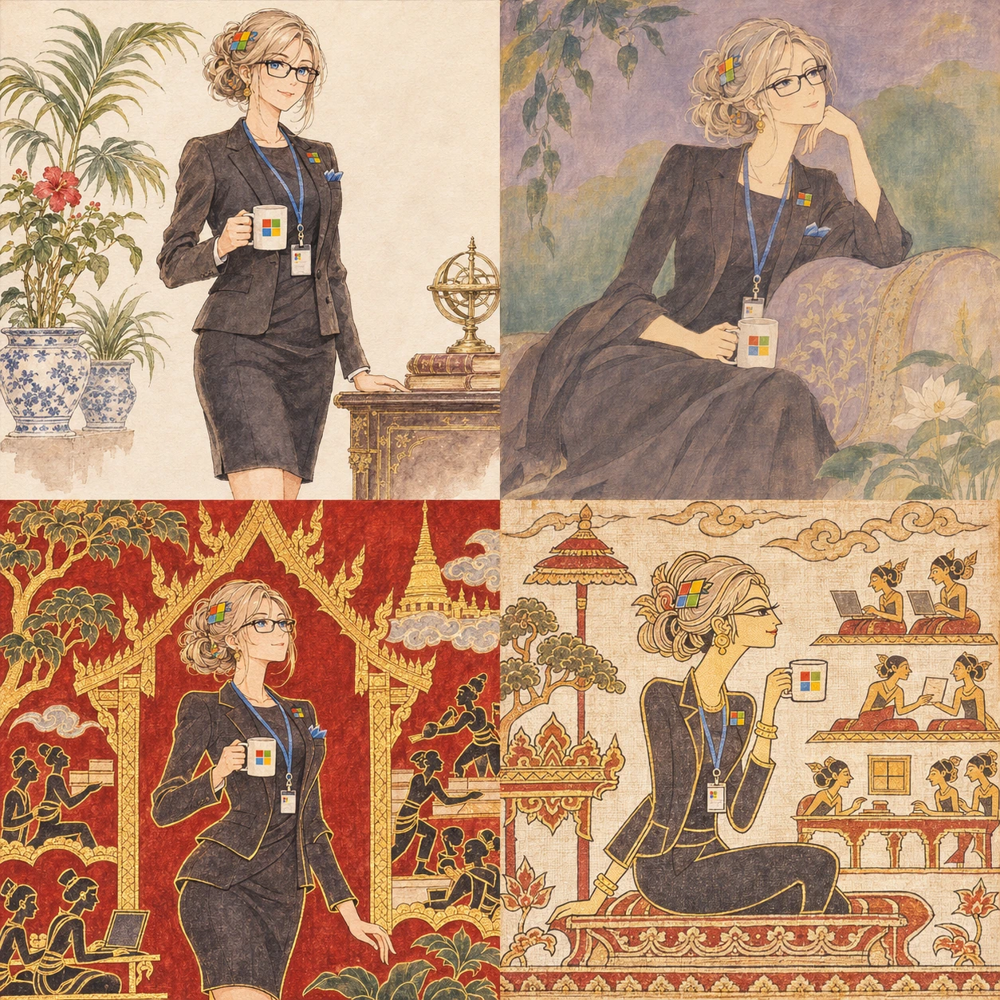
- Top left: Company painting
- Fine ink and pale watercolor isolate the figure and a few office objects on cream paper.
History and use
Art history connection
South Asian artists working for East India Company patrons produced watercolors of people, flora, fauna and places. Shaykh Muhammad Amir of Karraya painted people and scenes in and around Kolkata.
When to use it
Describe a subject and its tools in a precise portable study.
Why use it
The plain ground leaves room to distinguish small objects and contours.
- Top right: Bengal School
- The elongated figure emerges out of muted streaks of green, lilac and ochre.
History and use
Art history connection
The Bengal School grew around artists including Abanindranath Tagore in the early 20th century. Its artists drew on Asian painting traditions and debated the place of colonial academic instruction.
When to use it
Paint a reflective scene whose atmosphere should be more prominent than its setting.
Why use it
Thin washes give soft transitions and hold the emphasis on small gestures.
- Bottom left: Thai temple mural
- A richly colored red and gold setting arranges repeated profiles and architectural shapes.
History and use
Art history connection
Many Thai temples have wall paintings of Buddhist narratives. Paintings can draw viewers along a wall through repeated figures and places.
Smithsonian National Museum of Asian Art | Southeast Asian art
When to use it
Give a sequence of actions a continuous visual setting.
Why use it
Repeated architectural landmarks can show a viewer where an episode begins or changes.
- Bottom right: Balinese Kamasan painting
- Angular profiles and ink outlines recur across red and brown horizontal bands.
History and use
Art history connection
Kamasan in Bali is associated with cloth paintings related to the wayang puppet tradition. Subjects include stories from the epics and local narratives on temple or palace hangings.
National Gallery of Australia | Collecting the artistic voices of Indonesia
When to use it
Compose a sequence of scenes on one hanging with gestures that read at a distance.
Why use it
Repeating silhouettes and a consistent palette connect events even when the same figure appears several times.
Mesoamerican monuments and painted books
Sculptures occupied public space, murals spread across walls, and painted books organized information into smaller fields. Each was made for a different kind of encounter.
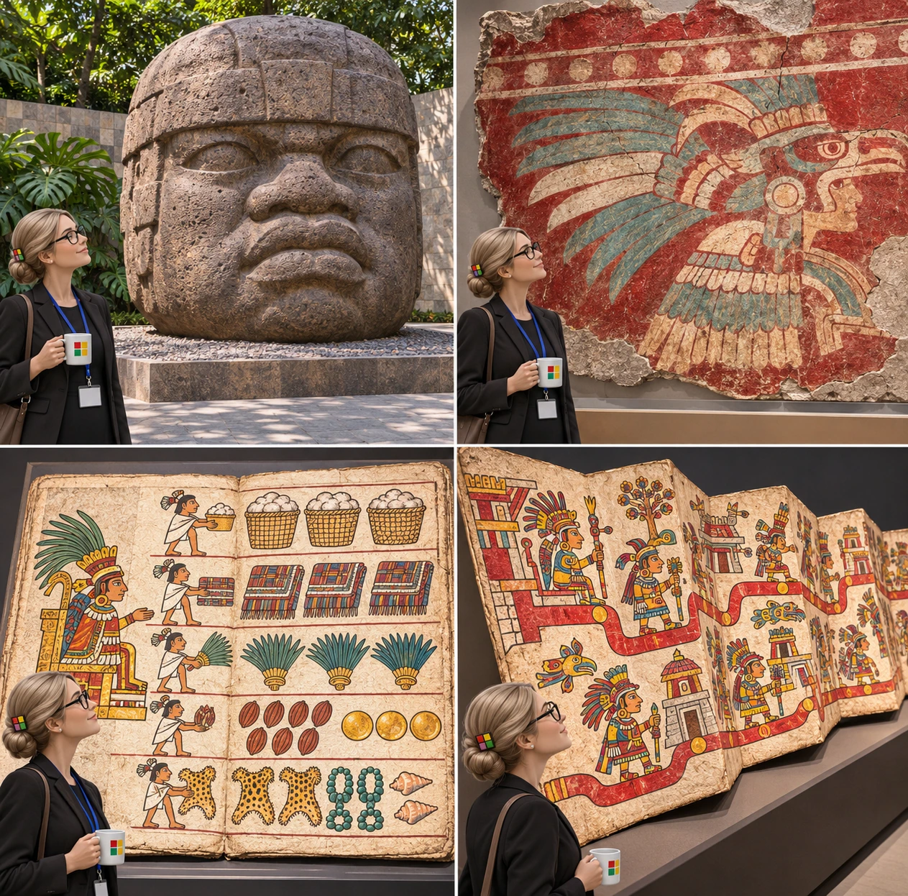
- Top left: Olmec sculpture
- The stone head has solid rounded cheeks and a deeply defined band around the helmet.
History and use
Art history connection
Olmec communities of the Gulf Coast of present-day Mexico made colossal basalt heads during the first millennium BCE and earlier. The heads are commonly interpreted as portraits of rulers.
When to use it
Study the head when a large sculpture must have a strong profile from multiple angles.
Why use it
Wide volumes and deep changes of plane make facial features legible at monument scale.
- Top right: Teotihuacan mural
- The red field holds broad ornamental bands that stay readable across a large wall.
History and use
Art history connection
Teotihuacan flourished in central Mexico in the first millennium CE. Painters ornamented public and residential buildings with murals, many surviving only as fragments.
When to use it
Study the relationship between a large pattern and the architectural surface that carries it.
Why use it
Bands help a design continue across a wall even when the viewer is moving.
- Bottom left: Aztec codex
- Pictures are grouped into rows across an open book, with each cluster easy to find again.
History and use
Art history connection
Central Mexican manuscripts recorded histories, tribute and other knowledge. The Codex Mendoza is a painted record made after the Spanish conquest, bringing Indigenous and European forms of record together.
When to use it
Study how the picture organizes repeated quantities and categories for someone consulting a page.
Why use it
Images and their spatial grouping let readers scan a record and revisit individual entries.
- Bottom right: Mixtec codex
- On the folding pages, a colored pathway draws the eye between small figures and places.
History and use
Art history connection
Mixtec manuscripts from present-day southern Mexico use pictorial systems to record lineages, histories and places. Some survive on folded animal hide.
When to use it
Study how a path can link people, places and events without locking the story into a rectangular grid.
Why use it
A route through the picture gives the reader a way to track a dense history as the book unfolds.
Four ways of recording a living world
These living and historical art traditions come from different communities. The comparison focuses on how a line can connect, describe or transform a figure.
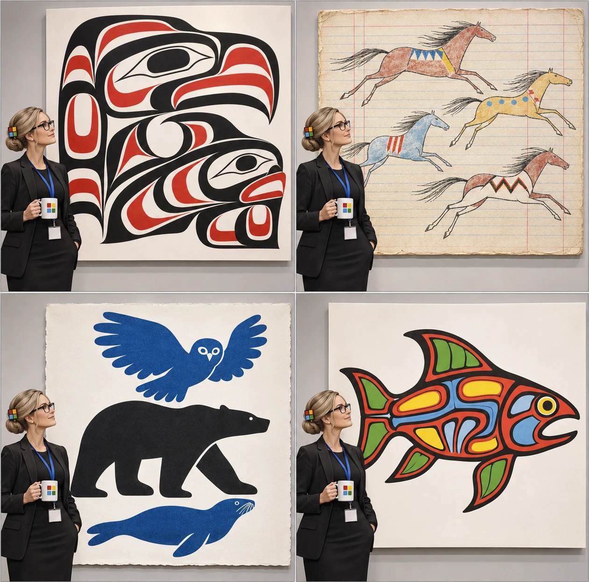
- Top left: Northwest Coast formline
- Follow the thick line around the bent inner shapes and smaller colored areas.
History and use
Art history connection
The term formline describes design principles used in a number of Northwest Coast art traditions. Haida artists and artists of other nations use distinct repertoires and conventions.
When to use it
Study attributed public examples to understand how a line's thickness guides the eye between connected forms.
Why use it
Changing line weight helps neighboring shapes read as part of the same design.
- Top right: Plains ledger art
- The horses and riders are built from flat outline shapes, with the ledger's ruling still visible.
History and use
Art history connection
From the nineteenth century, many Plains artists made narrative drawings on ledger paper as one of several available surfaces. Artists continue the practice today.
When to use it
Study the position and detail of a figure as a way to tell an event in a small space.
Why use it
Selective detail keeps the focus on the actors and movements that matter to the story.
- Bottom left: Kinngait print
- The open paper makes the strong animal silhouette and small patches of blue easy to read.
History and use
Art history connection
Inuit artists and printmakers in Kinngait, Nunavut, developed a print studio practice in the late 1950s and continue to publish and innovate.
When to use it
Study a documented edition to see how drawing and printmaking can be collaborative steps.
Why use it
A print's contours and areas of color convey the decisions of both the designer and the person making the edition.
- Bottom right: Woodlands School
- A strong outline holds the fish shape together, while interior lines link small colored sections.
History and use
Art history connection
Anishinaabe artist Norval Morrisseau helped establish a modern school of painting in Canada. Many artists developed distinct work through it.
When to use it
Study an original artist's work to see how internal and connecting lines express relationships inside a picture.
Why use it
A clear outer silhouette can coexist with complex interior relationships.
Compose a scene and give it meaning
Use the same visual tools to answer larger questions. Where are you standing? What do you notice first? Whose story is being told?
Direct the viewer’s attention
Use perspective, arrangement, and light to place the viewer or make a moment seem important.
Renaissance perspective
Trace the edges of the table or floor tiles until they seem to meet. Linear perspective uses lines that converge to suggest depth. The Met’s guide to spatial depth

- Top left: Centered boardroom
- The boardroom lines meet near the far seat. The room quietly tells you which position matters.
- Top right: Off-center arcade
- The arcade pulls your eye sideways, letting a nearer figure interrupt the run of arches.
- Bottom left: Tiled office corridor
- Follow the floor joints and repeated doorways to see how the corridor recedes.
- Bottom right: Open window
- The window sets a near frame around a city that continues well beyond it.
Neoclassicism
Start with the straight columns and balanced poses. The studies borrow classical forms to give a person or event a public presence.

- Top left: Formal address
- Matching chairs and upright architecture give the central speaker a formal stage.
- Top right: Profile and column
- The column’s straight edge gives you a stable reference for the curve of the profile.
- Bottom left: Boardroom frieze
- Figures arranged across a shallow band let your eye read the gestures in order.
- Bottom right: Portrait with ledger
- The ledger steadies the portrait and lets one purposeful object explain the sitter’s role.
Baroque
Follow the strongest light and the longest diagonal. Together they show which moment deserves the closest attention.

- Top left: Boardroom entrance
- The doorway is a bright vertical opening. The first glimpse of the figure becomes an event.
- Top right: Sweeping briefing
- The sloping table takes your eye into the room, then the raised arm sends it back across.
- Bottom left: Candlelit briefing
- A little warm light on the glasses makes the face readable in a scene with few visible details.
- Bottom right: Staircase portrait
- The stairs and railing aim up at the sitter. The low viewpoint makes her feel commanding.
Trompe-l’œil
Check whether an edge seems to belong to the picture or to something projecting in front of it. Trompe-l’œil means fool the eye. National Gallery of Art on trompe-l’œil

- Top left: Glasses across the frame
- The spectacles seem to sit partly in front of the painted frame. Their shadow helps sell the trick.
- Top right: Badge off the page
- The badge seems to lift off the page where its shadow crosses the illustrated surface.
- Bottom left: Shallow office cabinet
- Small contact shadows make shallow shelves appear deep enough to hold real tools.
- Bottom right: Hand through the doorway
- A reaching hand and folder seem to cross out of the painted doorway into your space.

Stylized 3D rendering
Look where the radio meets the bench, then compare the light on cloth and metal. The study separates shape, material, and lighting choices.
Explore related studies · 16 examples
- Tricking the eye and the lens
- Making sacred figures inhabit space
- Color, gesture and staged light
- Composing status and civic space
Tricking the eye and the lens
The convincing view can be the whole point. These images exaggerate observed detail, open a ceiling, move an image out of alignment or extend a film set.
- Top left: hyperrealism
- Skin, glass and ceramics are treated with sharp detail at large scale.
History and use
Art history connection
Hyperrealist painting and sculpture developed from approaches to photographs and observed detail in the later 20th century.
When to use it
Make an ordinary object worth prolonged close inspection.
Why use it
Enlargement and exact rendering make details that usually go unnoticed central to the image.
- Top right: illusionistic ceiling painting
- Foreshortened painted architecture opens the surface toward an apparent sky.
History and use
Art history connection
Baroque ceiling painters such as Andrea Pozzo extended real architecture with painted perspective. A convincing view depends on where the viewer stands.
When to use it
Make an enclosed ceiling feel open or position viewers beneath a dramatic scene.
Why use it
Perspective lines seem to extend real space beyond the actual surface.
- Bottom left: anamorphosis
- The image is stretched over a corner and resolves when seen from a particular vantage point.
History and use
Art history connection
Hans Holbein’s The Ambassadors contains a stretched skull that resolves when viewed obliquely. Related effects may use curved mirrors.
When to use it
Build an image that visitors discover by moving to a specific spot.
Why use it
Distorting construction makes the viewer’s position an active part of the design.
- Bottom right: matte painting
- Small-scale foreground details merge into a much larger painted city.
History and use
Art history connection
Filmmakers used paintings to extend locations and sets, either by combining the painting and the filmed image or adding a background in the camera’s view.
When to use it
Show a distant environment beyond the resources of a built set.
Why use it
Match perspective and atmospheric light so the painted distance reads as part of the photographed space.
Making sacred figures inhabit space
Painters gave figures and objects a sense of place through changes in light, weight, receding space and surface detail. These four treatments include overlapping categories.
- Top left: Proto-Renaissance
- A weighty figure and a ledge suggest shallow space against a field of gold.
History and use
Art history connection
Italian painters around 1300, including Giotto, explored ways to give figures volume and make narrative scenes spatially clear.
When to use it
Look here when you need to show a figure that can carry an object or lean into another figure while retaining a stylized setting.
Why use it
A few coherent changes of light and weight are enough for the viewer to imagine a body under cloth.
- Top right: Early Netherlandish painting
- Oil-painted highlights pick out the edges of objects and the sheen of a polished vessel.
History and use
Art history connection
In the fifteenth-century Low Countries, painters refined layered oil techniques for works that included portraits, altarpieces and devotional panels.
When to use it
Study how a small reflected highlight can set the scale and material of an object.
Why use it
Thin paint layers can give a small image dark depth and sharp surface detail at the same time.
- Bottom left: Northern Renaissance
- The eye can move from carefully depicted objects in an indoor setting to the brighter landscape beyond.
History and use
Art history connection
Renaissance art north of the Alps varied across regions and overlapped with Early Netherlandish painting. Its artists developed sophisticated work in oils, drawing and prints.
When to use it
Study the way a single view can reward close inspection and still suggest a world outside the room.
Why use it
Specific textures help establish the foreground, while light and distance pull the eye farther through the picture.
- Bottom right: High Renaissance
- The people and the landscape are held in a balanced composition with overlapping forms and softened distance.
History and use
Art history connection
The High Renaissance usually refers to a period of Italian Renaissance art around the turn of the sixteenth century, associated with artists including Leonardo, Raphael and Michelangelo.
When to use it
Study a many-figure composition when gestures need to lead toward a shared visual center.
Why use it
Grouping the biggest shapes into a simple structure makes individual faces and actions easier to locate.
Color, gesture and staged light
Color can blend the figure into its setting, while a sharply staged gesture or pocket of light can bring the figure forward. These approaches developed across distinct European painting settings.
- Top left: Venetian colorism
- Red cloth, warm shadows and blended edges create a continuous colored atmosphere.
History and use
Art history connection
In Renaissance Venice, painters including Titian became associated with colorito, the building of form through the handling and relations of colors.
When to use it
Study the effect when the atmosphere needs to connect the figure to its surroundings.
Why use it
Related warm and cool hues can make a transition feel rounded even when an outline is soft.
- Top right: Mannerism
- Notice the length of the pose, its twisting line, and the unusual color choices around it.
History and use
Art history connection
Sixteenth-century Mannerists built on High Renaissance achievements while experimenting with proportions, compressed spaces and elaborate poses.
When to use it
Study it when graceful or unstable movement matters more than bodily ease.
Why use it
A stretched gesture makes the viewer feel the pressure of the pose and compressed space together.
- Bottom left: Dutch Golden Age painting
- Side light catches the floor, faces and everyday objects in a carefully measured room.
History and use
Art history connection
In the seventeenth-century Dutch Republic, painters found buyers for genre pictures, portraits, landscapes, still lifes and many other subjects.
When to use it
Study an interior by an artist such as Vermeer when the architecture and small objects need to direct attention.
Why use it
A few highlights can establish the time of day and the order in which the viewer looks around the room.
- Bottom right: Spanish Golden Age painting
- Directional light picks out the face and costume against almost uninterrupted shadow.
History and use
Art history connection
Seventeenth-century Spanish painting included court portraiture and religious works. The strong directional lighting in this study represents one option among many.
When to use it
Study how a painter can make an expression or an object stand out with a very narrow source of light.
Why use it
The short range of visible detail concentrates attention on the lit features.
Composing status and civic space
Painters can produce a sense of order by locating a figure among carefully arranged shapes or by positioning the viewer in an expansive city. The subject's scale changes what the picture seems to value.
- Top left: French classicism
- Clear contours and strong architectural lines divide the scene into readable parts.
History and use
Art history connection
Seventeenth-century French painters such as Nicolas Poussin drew on classical antiquity and Renaissance examples. Poussin spent much of his career in Rome.
When to use it
Study the scene when several figures or gestures need to coexist within a clearly ordered space.
Why use it
A stable framework lets viewers understand a figure's action by its position among other forms.
- Top right: Academic art
- Figures are modeled smoothly and gestures are visible from one passage of the composition to the next.
History and use
Art history connection
European art academies formalized training in drawing, the human figure and historical models. Styles and institutions changed substantially across centuries and countries.
When to use it
Study a historical academy painting when you want to analyze how elaborate scenes were planned and polished.
Why use it
Shared conventions gave artists and audiences legible expectations about finish, subject and scale.
- Bottom left: vedute
- The view opens out along a canal, with buildings decreasing carefully in scale toward the distance.
History and use
Art history connection
Vedute are detailed views. Eighteenth-century artists such as Canaletto sold recognizable Venetian views to local and traveling buyers.
When to use it
Study the relation between the viewpoint and the buildings chosen to make the city recognizable.
Why use it
Tiny foreground figures give a familiar measure against the broad architecture.
- Bottom right: Grand Manner portrait
- A full-length pose, a plinth and rich drapery give the sitter an imposing presence.
History and use
Art history connection
Grand Manner portraiture drew on elevated classical and historical poses. Eighteenth-century British painters such as Joshua Reynolds helped define the approach.
When to use it
Study it when setting, pose and clothing must establish how the sitter wishes to appear publicly.
Why use it
The arrangement enlarges the sitter's social presence as well as their physical scale.
Make distance and atmosphere felt
Compare what scale, soft edges, and changing color do to a landscape.
Chinese ink landscape
Find the small figure, ferry, or pavilion in each scene. Pale washes and open paper let mountains and water extend far beyond them. The Met on Chinese landscape composition

- Top left: River commute
- A small ferry makes the open water feel wide. Pale banks merge with the mist.
- Top right: Mountain data center
- The building gives you a measure for the mountain. Darker near marks make the pale ridges feel farther away.
- Bottom left: Rain from a pavilion
- The firm roof edge holds the foreground while the rain softens the next layer of hills.
- Bottom right: Riverside handscroll
- The bends of the bank and clusters of trees guide you sideways at an unhurried pace.
Romanticism
Compare the size of the figure with the storm, atrium, or skyline. An overwhelming view can make her reaction feel important.

- Top left: Rooftop before the storm
- The storm takes up far more room than the person, giving her small outline an immense setting.
- Top right: Vast atrium
- Repeated arches pull the eye toward distant light and make the near figure feel small.
- Bottom left: Windswept bridge
- The long bridge carries the eye into the sky while the figure registers the wind at human scale.
- Bottom right: Lone office window
- One warm window lets you pick out a person in the dark spread of the city.
Impressionism
Compare the color of the jacket outdoors, beside a window, and on a wet street. Reflected light changes what a familiar color looks like.

- Top left: Dappled garden
- Patches of warm sunlight and cool shade connect the jacket to the garden.
- Top right: Rain at blue hour
- Storefront lights carry into the street as smudges of reflected color on wet paving.
- Bottom left: Window light
- Cooler shadows beside warmer window light give the face a sense of place and time.
- Bottom right: Riverside dawn
- The skyline fades into pale color so the nearer figure reads against morning air.

Pointillism
Look for the colored dots in a shadow, then view the whole image. From a distance they combine into a broader tone. Art Institute of Chicago on Pointillism

Tonalism
Look for the small warm reflection in the broad blue-gray landscape. Most shapes stay close together in brightness. Smithsonian American Art Museum on George Inness
Explore related studies · 22 examples
- Four uses of a Chinese brush
- Reworking the ink tradition
- Japanese pictures for rooms and readers
- Three approaches in Korean art
- What a landscape emphasizes
- Landscape and national narratives
Four uses of a Chinese brush
Brushwork can record a gesture, define each edge, describe living things or let a landscape take over the page. Each picture puts the black line and empty paper to a different use.
- Top left: Chinese calligraphy
- Ink sweeps and dry edges draw a portrait through gesture alone.
History and use
Art history connection
Chinese calligraphy encompasses distinct scripts and histories. In works like the calligraphy surrounding landscape paintings, variation in ink, pressure and speed is visible in actual written characters.
When to use it
Work with a calligrapher when written words and physical brush movement both matter.
Why use it
Pressure, direction and ink load make the movement of the brush visible.
- Top right: gongbi painting
- Fine outlines and thin washes define every fold and strand.
History and use
Art history connection
Gongbi refers to painstaking brushwork. It has been used to achieve close description in figures, court painting and bird-and-flower subjects.
Tsinghua University Art Museum | Chinese painting exhibition
When to use it
Paint a close subject with details small enough to reward repeated viewing.
Why use it
A steady contour can keep the smallest forms clear beneath several transparent layers.
- Bottom left: bird-and-flower painting
- Birds and flowering branches fill the composition around a small portrait.
History and use
Art history connection
Bird-and-flower painting became an established subject by the Song period. Plants, birds and insects can show close observation and also carry seasonal or symbolic associations.
When to use it
Give a portrait a clear season through plants and animal behavior.
Why use it
Accurately chosen species and colored forms add meaning while retaining an observational scale.
- Bottom right: literati painting
- A small outline figure sits under faint mountains on an open expanse of paper.
History and use
Art history connection
Chinese scholar-artists developed painting practices in which brushwork, poetry and landscape expressed personal cultivation. Chinese literati landscape often uses emptiness to suggest distance.
When to use it
Set the figure into a landscape where the weather and distance must carry the mood.
Why use it
Sparse marks let apparently empty paper read as air, water or a pause in the picture.
Reworking the ink tradition
Early modern schools and contemporary artists have reworked ink through contact with new audiences, other kinds of painting and today’s materials.
- Left: Shanghai School
- Strong dark accents work against bright scarlet and floral color.
History and use
Art history connection
The Shanghai School took shape in a growing urban art market in the late Qing. Ren Yi, also called Ren Bonian, worked across figure and bird-and-flower painting.
When to use it
Make a brush painting that can catch attention at a quick glance.
Why use it
Strong wet and dry brush accents can carry the picture even when bright color competes for attention.
- Center: Lingnan School
- Color gathers where moist strokes meet softly edged leaves and blossoms.
History and use
Art history connection
The Lingnan School developed in southern China in the early 20th century. Gao Jianfu and other artists explored reform through new subjects and a synthesis of brush traditions.
When to use it
Paint a figure or flower with clear contours and soft changes of atmosphere.
Why use it
Wet wash and carefully placed color can distinguish a crisp detail from surrounding air.
- Right: contemporary Chinese ink
- A few enlarged ink marks take over the page and meet a sharp modern block of color.
History and use
Art history connection
Contemporary artists have used ink and its histories across painting, installation, photography and video. Some play with the scale and legibility of a single mark.
When to use it
Keep a familiar brush mark visible while making an unfamiliar composition.
Why use it
An enlarged stroke exposes its texture and can become a subject in its own right.
Japanese pictures for rooms and readers
A roofless room, a gold screen and two ink landscapes show how subject, audience and setting can change a Japanese painting.
- Top left: Yamato-e
- Look down into rooms whose roofs have been lifted away. Clouds separate clusters of figures and blossoms.
History and use
Art history connection
Painters in Heian Japan developed conventions for local stories and seasonal scenes. Handscrolls could reveal them in stages.
When to use it
Useful when several moments or rooms have to share one image.
Why use it
Lifting the roof gives an intimate story room to unfold without losing the wider setting.
- Top right: Kanō school
- A heavy pine branch stretches across gold screen panels, with folds cutting through the image.
History and use
Art history connection
From the late fifteenth century onward, generations of Kanō painters developed a workshop tradition for elite patrons. They worked in ink as well as brilliant colors and gold.
When to use it
Use the screen example to study a large decorative composition across multiple surfaces.
Why use it
The branch links the panels and lends a big room a strong visual anchor.
- Bottom left: Zen ink painting
- Wet gray ink makes a mountain seem to dissolve. A few dark strokes give the foreground weight.
History and use
Art history connection
Ink painting flourished in medieval Japanese Zen circles, where artists studied and adapted Chinese models.
When to use it
Try an ink study when you need one gesture or a very few marks to carry a scene.
Why use it
The unpainted paper is read as light and mist around the brushwork.
- Bottom right: Nanga
- The eye follows a winding river past a tiny dwelling toward layers of dry-brushed hills.
History and use
Art history connection
Edo-period Japanese artists adapted Chinese literati painting. Nanga flourished in the eighteenth and nineteenth centuries.
When to use it
Use it as a reference for a landscape meant to be explored slowly.
Why use it
Paths, trees and small buildings offer clues to scale and pace.
Three approaches in Korean art
One panel starts from a place, another from a devotional image, and a third from the repeated acts of making a painting.
- Left: true-view landscape
- Dark pines stand out against layered ridges and washes that make the far hills look cool and distant.
History and use
Art history connection
In late Joseon Korea, Jeong Seon and others developed an approach grounded in recognizable Korean sites.
When to use it
Study it when a landscape needs the recognizable structure of a real place and the painter's own emphasis.
Why use it
Observation locates the viewer, while choices of ink and viewpoint direct attention to what makes the site particular.
- Center: Goryeo Buddhist painting
- Follow the fine gold contours and the translucent layers of red fabric around the devotional figure.
History and use
Art history connection
Surviving Goryeo Buddhist paintings from thirteenth- and fourteenth-century Korea use ink, pigments and often gold on silk to convey Buddhist figures and teachings.
When to use it
Look here for the coordination of ornamental detail, devotional hierarchy and carefully controlled color.
Why use it
Outline and sheen give a devotional image clarity and presence at different viewing distances.
- Right: Dansaekhwa
- Pale parallel grooves and ridges become conspicuous as light travels across the surface.
History and use
Art history connection
During the 1970s, Korean artists gathered around approaches later described as Dansaekhwa, using repeated processes that differ substantially from painter to painter.
When to use it
Study it when the painting's making and surface are the main event.
Why use it
With a narrow range of color, small changes in pressure, light and texture have more visual room.
What a landscape emphasizes
Look across the four landscape studies and note where the light gathers. Each approach makes a different scale of place and weather visible.
- Top left: English landscape painting
- Thick-moving clouds hang over a relatively close view of paths, fields and hedges.
History and use
Art history connection
English landscape painting encompasses many approaches. John Constable's early nineteenth-century pictures made familiar rural places and observed weather prominent subjects.
When to use it
Study a particular Constable painting when shape and movement in the sky need to make a place feel lived in.
Why use it
Changing patches of light tie the weather to the land beneath rather than making it a distant background.
- Top right: Hudson River School
- A distant opening of light pulls the eye up from darker foreground slopes and along the river.
History and use
Art history connection
Nineteenth-century American painters including Thomas Cole created ambitious landscapes. Their views of land and nature circulated alongside national expansion and its exclusions.
When to use it
Study how layered masses and directional light can convey a vast region in a single view.
Why use it
The changing scale of detail leads viewers from a particular foreground into an immense distance.
- Bottom left: Barbizon School
- Soft tree edges, dull greens and opening patches of daylight keep attention near the woodland floor.
History and use
Art history connection
Nineteenth-century painters associated with Barbizon worked in and around France's Fontainebleau forest and developed attentive approaches to everyday landscape.
When to use it
Study this when a modest scene needs detail and atmosphere without a monumental view.
Why use it
A close viewpoint makes the forms, shade and textures of ordinary ground worth studying.
- Bottom right: Luminism
- The long river horizon and smooth bands of reflected light leave the boats tiny against the sky.
History and use
Art history connection
Luminism is a later label for part of nineteenth-century American painting, commonly associated with clear atmosphere, quiet water and controlled finish.
When to use it
Study it when you want to make subtle light conditions the main subject.
Why use it
Smooth transitions and a steady horizon keep viewers attentive to minute changes in light.
Landscape and national narratives
Landscapes can become shorthand for a nation. Compare what each scene chooses to see and how a painter's brushwork or viewpoint can make that choice feel natural.
- Top left: Group of Seven
- Bright orange foliage and rugged rock stand out against a deep blue northern lake.
History and use
Art history connection
The Group of Seven formed in Canada in 1920. Its members made distinctive landscapes and took part in debates about national art.
When to use it
Study how close colors and bold brush marks can distill a large rocky view.
Why use it
Strong simplification makes an individual site easy to recognize and adapt into a broader story about a region.
- Top right: Heidelberg School
- Sunlit grasses and eucalypts are described with broken dabs and light shadows along the path.
History and use
Art history connection
Late nineteenth-century Australian artists associated with the Heidelberg School worked outdoors and developed styles also described as Australian Impressionism.
When to use it
Study how quick brush marks record the distinctive light on a local landscape.
Why use it
Broken color and pale values can suggest bright sun without describing every leaf or blade of grass.
- Bottom left: Brazilian Modernism
- Rounded blocks and bold colors simplify a landscape of urban hills and tropical plants.
History and use
Art history connection
Brazilian modernism took many forms. São Paulo's Modern Art Week of 1922 was a watershed, and artists such as Tarsila do Amaral developed distinctive modern compositions from Brazilian places and imagery.
When to use it
Study the way specific vegetation, city forms and colors retain a local character as shapes become more abstract.
Why use it
Simplification lets the subject support new formal invention while keeping a strong sense of place.
- Bottom right: Indigenismo
- People, buildings and the slope of the land share an earth-toned structure in the Andes-inspired scene.
History and use
Art history connection
Twentieth-century Indigenismo in Latin America encompassed distinct movements. In Peru, José Sabogal made Indigenous subjects central to a national art debate, raising questions about who could represent whose experience.
When to use it
Study who painted the work, its audience and the position of the people depicted.
Why use it
An image can give a public role to people and places previously ignored while still carrying the maker's viewpoint.
Give a feeling or idea a shape
Read objects as clues, then see what happens when color, space, and ordinary things start to behave differently.

Pre-Raphaelite painting
Start at the letter, then notice the plants, fabric, and fallen flower. The scene gives small details enough attention to become clues. The Met on the Pre-Raphaelites

Dutch vanitas still life
Follow the hourglass, wilted flower, and closed laptop. A vanitas still life uses objects to invite reflection on time and loss.
Symbolism
Look for objects that have been given an unusual role. A chain, a pair of lenses, or a scale can suggest an idea about work.
- Top left: The chain of duty
- A chain of badges makes an ordinary lanyard look like something the wearer must carry.
- Top right: Procedure and instinct
- The two lenses put an ordered grid and loose shapes side by side as ways of seeing.
- Bottom left: A desk in the balance
- A desk on a balance scale gives an everyday burden a physical weight.
- Bottom right: The office after hours
- A colored window and small doorway figure give an empty office an unresolved meaning.
Fauvism
Compare the green face and orange room. Color organizes what you notice and how you feel about it.

- Top left: Green and pink portrait
- Bright green moves across the face. Differences in brightness still define the glasses and eyes.
- Top right: Orange office
- The large orange field joins the room while cooler patches separate the furniture and figure.
- Bottom left: Cobalt silhouette
- A nearly solid cobalt figure reads clearly against sharp bands of warmer color.
- Bottom right: Violet and yellow window
- Violet and yellow carry the same color tension from the window to the sitter.
Expressionism
Look at what the room does around the figure. Lines lean, stretch, and close in to make a mood visible.

- Top left: Deadline pressure
- The red room seems to tilt inward around the desk, as though the space shares her urgency.
- Top right: Empty corridor
- Violet and stretched distances make the corridor feel lonesome around the small figure.
- Bottom left: Defiance
- A low viewpoint, angled marks, and an elbow set out from the body make the stance forceful.
- Bottom right: End of the day
- Uneven cool marks and a bent pose make fatigue spread into the room.
Surrealism
Identify the ordinary objects before looking at what they are doing. The desk and glasses become convincing parts of an impossible space.

- Top left: Flooded office
- A recognizable office makes water across the floor and a floating desk feel especially strange.
- Top right: Two skies
- The lenses hold incompatible skies while the face remains familiar.
- Bottom left: Desk staircase
- Repeated desks create a stair you can read visually even though you could never climb it.
- Bottom right: Sea behind the wall
- A small opening onto a vast sea gives an ordinary cubicle an impossible depth.
Explore related studies · 22 examples
- Intimacy, invention and the imagined past
- Brushwork, structure and the flat print
- Four approaches to an imagined scene
- Who decides what counts as art?
- Figuration after upheaval
- Reinventing the figure
Intimacy, invention and the imagined past
A shadow, a quiet task, an imagined distant place and a revived historical style each change how close the viewer feels to the subject.
- Top left: Goya's art
- An isolated figure emerges from smoky darkness, with uneven marks and a narrow source of light.
History and use
Art history connection
Francisco de Goya worked in Spain from the late eighteenth to the early nineteenth century. He moved among official portraits, prints, social critique and deeply unsettling late paintings.
When to use it
Study specific works for ways dark space and rough brushwork can make a scene psychologically tense.
Why use it
The eye searches the shadow for clues, leaving the subject's situation open to interpretation.
- Top right: Chardin's art
- A small domestic action happens in a softly lit room, with the mug, jug and figure arranged at a measured pace.
History and use
Art history connection
Jean-Siméon Chardin painted still lifes and domestic scenes in eighteenth-century France.
When to use it
Study the space around hands and objects when a small, familiar action needs attention.
Why use it
Quiet color and restrained gestures make people notice the effort and texture of daily routine.
- Bottom left: Orientalism
- The pictured interior uses layered textiles and patterned tile to create an elaborate spectacle for the viewer.
History and use
Art history connection
Numerous nineteenth-century European artists staged images of North Africa, the Middle East and Asia amid imperial unequal power. Their work ranges from observations to outright fantasy.
When to use it
Study the picture critically to see how stagecraft can turn a real place or tradition into an invented setting for others.
Why use it
Careful detail can make a fantasy seem authoritative. Comparing it with the people and places represented can expose the fabrication.
- Bottom right: Nazarenes
- Pale fields of color, deliberate outlines and restrained faces give the composition a painted-wall quality.
History and use
Art history connection
Early nineteenth-century German-speaking artists in the Nazarene group sought a revival of Christian painting. They looked to Italian and German work from before the High Renaissance.
When to use it
Study the way a historical model can inform new outlines, colors and themes.
Why use it
Firm contours and a quiet order make gestures clearly readable even with little modeling.
Brushwork, structure and the flat print
A mug, a figure and a tabletop become distinct images when the painter changes what a mark, contour or empty space is asked to do.
- Top left: Cézanne's art
- Small changes of warm and cool brush planes build the body and table. The desktop appears tilted toward the viewer.
History and use
Art history connection
Paul Cézanne developed repeated studies of portraits, ordinary objects and landscapes in late nineteenth- and early twentieth-century France. His handling of structure influenced later modernists.
When to use it
Study how a form can stay solid when its contours and viewpoint seem to shift.
Why use it
Related patches of color construct the form while making each decision of the brush visible.
- Top right: Van Gogh's art
- Strong color and thick swept strokes curve around the figure and mug and continue into the surrounding space.
History and use
Art history connection
Vincent van Gogh experimented with brushwork and intense color in the late 1880s and 1890. His approaches varied with subject and place.
When to use it
Study a specific painting when a visible brushstroke needs to describe texture or carry movement.
Why use it
A series of related strokes can connect objects and surroundings even when the colors are very different.
- Bottom left: Synthetism
- Dark edges hold large, simplified islands of color together in an angled scene.
History and use
Art history connection
In late 1880s France, artists associated with Pont-Aven, including Paul Gauguin and Émile Bernard, pursued flat color and simplified forms, combining observation with feeling and design.
When to use it
Study it when you need to decide which features remain essential after simplifying a scene.
Why use it
Distinct flat shapes can compress a personal impression into a clear visual order.
- Bottom right: Japonisme
- A crop cuts into the figure and leaves an off-center interval between the table and the edge.
History and use
Art history connection
Japonisme names the nineteenth-century European and American engagement with Japanese art. Imported prints influenced composition, color and decorative design.
When to use it
Compare an example with the particular Japanese works or printing conventions that informed it.
Why use it
An off-center view or abrupt crop can make a familiar object feel newly positioned in space.
Four approaches to an imagined scene
Compare four ways an image can depart from familiar appearances. The strangeness can come from urban space, brushwork, spontaneous marks or the details of an individual life.
- Top left: Metaphysical painting
- The nearly empty arcade and unnaturally long shadows turn a recognizable space into an uneasy one.
History and use
Art history connection
In the 1910s, Giorgio de Chirico and others used empty piazzas and unexpected objects to give scenes an enigmatic atmosphere.
When to use it
Study how a recognizable place becomes strange when light, scale or familiar objects feel disconnected.
Why use it
An open space draws attention to every isolated object and shadow as possible clues.
- Top right: School of Paris
- The café figure has strongly colored contours and a rough surface against an oddly colored room.
History and use
Art history connection
School of Paris is a loose label that has been applied to international artists who worked in Paris. Their many media and styles cannot be reduced to a common formula.
When to use it
Start with a named artist when using this label to orient your research.
Why use it
Knowing where artists worked can explain contact and exchange even when their pictures look very different.
- Bottom left: Abstract Surrealism
- Thin wandering marks and biomorphic shapes gather and disperse across the field.
History and use
Art history connection
Surrealists experimented with automatic drawing and other processes that loosened deliberate control. Some of these works approach abstraction while others retain recognizable figures.
When to use it
Study how a mark or texture can start a sequence before the image's subject has been settled.
Why use it
The process allows visual associations to emerge gradually from placements, accidents and alterations.
- Bottom right: Kahlo and Mexican modernism
- A direct gaze and carefully selected objects make the portrait feel both literal and symbolic.
History and use
Art history connection
Frida Kahlo made personal images within the diverse setting of Mexican modernism. Her work drew on specific experiences and Mexican visual practices, including small devotional paintings.
When to use it
Study particular works when you want to see how objects gain meaning through their relation to an individual's life.
Why use it
A steady portrait composition gives the viewer time to notice, and question, the meaning of the objects around the person.
Who decides what counts as art?
These terms overlap, and each has a history of who used it and why. The fictional studies illustrate different materials and kinds of picture-making without assigning a label to an actual maker.
- Left: Naïve art
- The sunny room combines familiar detailed objects with unusual perspective or relative scale.
History and use
Art history connection
Naïve art has often described works by self-taught makers, with Henri Rousseau among the best-known examples. Appearances alone cannot establish how an artist learned.
When to use it
Study a specific artist when scale or viewpoint makes an everyday scene feel newly arranged.
Why use it
Distinctive choices about size and spacing can make the maker's attention visible across an entire picture.
- Center: Art Brut
- Repeated pencil marks create a dense path-like pattern on a reused surface.
History and use
Art history connection
Jean Dubuffet coined Art Brut in the 1940s for work he collected outside established art institutions. His collection and influence helped shape definitions that remain debated.
When to use it
Use the term when discussing the history of that collecting project or institutions formed around it.
Why use it
The collection opened attention to artists' independent choices, while the label also reflects the collector's viewpoint.
- Right: outsider art
- The assembled work draws attention to the cork, springs and paint through repetition and gaps.
History and use
Art history connection
Roger Cardinal's 1972 book helped popularize outsider art in English. The category has been used for numerous self-taught or institutionally marginal practices.
When to use it
Study an identified maker and consider how and by whom the label became attached.
Why use it
Exploring an artist's own process and materials gives a clearer entry point than assuming what a category implies.
Figuration after upheaval
Three kinds of unease survive in the painted figure.
- Left: Magic Realism
- The crisp face and suspended steam feel strangely deliberate.
History and use
Art history connection
1920s–1930s in its early European usage
Franz Roh coined the term in 1925 for a strand of European painting that found mystery in precise everyday scenes.
When to use it
Make an ordinary room unsettling through lighting, scale and stillness.
Why use it
Precisely observed surfaces make a single improbable detail stand out.
- Center: CoBrA
- Thick bursts of red and blue and playful outlines warp the portrait.
History and use
Art history connection
1948–1951
CoBrA took its name from Copenhagen, Brussels and Amsterdam and embraced experimental, spontaneous image-making.
When to use it
Let paint and gesture loosen an otherwise formal pose.
Why use it
Uneven contours and thick strokes hold the energy of spontaneous invention.
- Right: School of London
- Worked and scraped paint presses the figure into an intimate interior.
History and use
Art history connection
Postwar decades, named in 1976
R. B. Kitaj gave the name to a loose grouping of London-based, figurative painters in 1976.
When to use it
Let the material build-up register the time spent looking at a sitter.
Why use it
Layers and erasures make prolonged observation physically visible.
Reinventing the figure
These examples give the human figure very different jobs to do.
- Top left: Neo-Expressionism
- Dark edges and raw strokes make the pose feel physically strained.
History and use
Art history connection
Late 1970s–1980s
In the late 1970s and 1980s, Neo-Expressionist painters in several countries revived forceful, often figurative large-scale painting.
When to use it
Let the speed and density of the mark amplify bodily emotion.
Why use it
Fierce marks can make the pose feel strained before the story is clear.
- Top right: Young British Artists
- The vitrine makes ordinary objects appear clinical and invites the visitor to inspect the staging.
History and use
Art history connection
Late 1980s–1990s
The Young British Artists became prominent around the 1988 Freeze exhibition and subsequent exhibitions in the 1990s.
When to use it
Use museum display conventions to change how a viewer reads an ordinary object.
Why use it
A vitrine positions the viewer as an observer and makes staging part of what they inspect.
- Bottom left: contemporary figuration
- Her expression and the color of the room carry an intimate narrative.
History and use
Art history connection
Late 20th century through today
Contemporary figurative artists work across portraiture, observation and invention, with widely varying techniques and lineages.
When to use it
Use bodily presence and setting to suggest a person’s life or interior state.
Why use it
Room color and a sitter’s gestures can carry feeling while leaving the narrative open.
- Bottom right: Chicago Imagists
- Bright contours and unlikely patterns exaggerate familiar features without losing the likeness.
History and use
Art history connection
Late 1960s–1970s
Chicago Imagists drew on comics, vernacular art and everyday culture, and exhibited in distinct groups in the late 1960s.
When to use it
Distort silhouette and pattern to build an unmistakably individual character.
Why use it
Selective distortion exaggerates characteristics that tell figures apart.
Show work and public life
Look at who gets attention, which details establish a place, and what a public image asks people to believe.

Kalighat painting
Read the bow, red chair, and sideways glance as a short visual joke. The main shapes stand out against a simple ground.

French Realism
The workers lean in over the radio. Notice how their hands and tools get the strongest attention.

American Regionalism
Look through the repair shop toward the small houses and utility lines. The town helps explain where the work fits.

New Objectivity
Look at the hand supporting her head, the papers, and the empty chair. The portrait leaves clues about the meeting in plain view.
Mexican muralism
Follow the cable and the workers’ gestures across the wall. A mural can give several people space to contribute to the action. MoMA on Mexican muralism
- Top left: Building the network
- Cable, figures, and tools connect the network installation into one continuous task.
- Top right: Night-shift repair
- Arms and tools meet at the equipment, making coordination visible across the wall.
- Bottom left: Library lesson
- Open books and screens connect people who are learning and helping each other.
- Bottom right: Four generations of work
- Repeated horizontal arrangements link eras. Changed tools show time passing.

Harlem Renaissance mural and illustration
Follow the bands of light from the open book to the readers and musician. Their activities share a rhythm across the wall.
Explore related studies · 21 examples
- Workshops and reused materials
- Pictures under colonial rule and after
- Painting observed life
- Whose work fills the city?
- Art schools and independent voices
- Looking at consumer societies
Workshops and reused materials
A painted animal, a textile and a suspended metal surface offer three different ways to build a lively picture from repeated elements.
- Left: Tinga Tinga
- Bright enamel color and bold contours frame the animal against repeating leaves.
History and use
Art history connection
Edward Saidi Tingatinga developed a practice in Dar es Salaam in the late 1960s. Relatives and other painters carried it forward in new directions.
When to use it
Study it when bold silhouettes and pattern need to fill a scene with energy.
Why use it
Opaque color keeps every shape distinct and makes repetition easy to see.
- Center: Oshogbo School
- Plants and animal-like shapes bend in repeated arcs across the textile study.
History and use
Art history connection
Workshops that grew around Mbari Mbayo in 1960s Oshogbo, now also spelled Osogbo, brought artists together across print, textile, painting and performance.
When to use it
Study the workshops as a way to understand how artists develop individually through shared experimentation.
Why use it
A familiar design can change character when its line moves to cloth, paint or another medium.
- Right: El Anatsui-style metal tapestry
- Hundreds of small reflective pieces take on the flow and folds of a hanging cloth.
History and use
Art history connection
El Anatsui, born in Ghana and long based in Nigeria, developed large flexible works from linked aluminum liquor-bottle material and copper wire.
When to use it
Study the artist's work when considering what happens to used material at radically different scales.
Why use it
Near the surface each piece has its own history and sheen. Across a room the pieces read as one field.
Pictures under colonial rule and after
European colonization changed who commissioned pictures and what they pictured. These examples span colonial genres and later regional practices, with very different reasons to make an image.
- Top left: amate
- The warm brown paper and its rough edge remain visible between brightly painted birds or plants.
History and use
Art history connection
Bark paper has a long history in Mexico. In modern amate painting, Otomí makers of paper and Nahua painters are both central to the story of the medium.
When to use it
Study a painted sheet alongside information about the people who made the paper and the picture.
Why use it
A fibrous ground adds a visible texture beneath even the flattest painted color.
- Top right: Cuzco School
- A dark devotional image stands out against gilded decoration and a richly colored surface.
History and use
Art history connection
Colonial painters in and around Cusco adapted European religious imagery and developed distinctive workshop practices, including painting richly decorated garments.
When to use it
Study the meeting of local techniques and imported religious imagery in a surviving painting.
Why use it
Attention to the painted surface reveals choices that a broad label like colonial painting can conceal.
- Bottom left: casta painting
- A carefully staged family occupies a domestic scene with small details of clothing and objects.
History and use
Art history connection
Many eighteenth-century paintings from New Spain classified people of mixed ancestry within a colonial racial hierarchy. Series commonly used family groupings and inscriptions.
When to use it
Study how picture placement and domestic detail were used to manufacture categories and hierarchy.
Why use it
A scene that looks ordinary at first can give a constructed political classification the appearance of common sense.
- Bottom right: Haitian painting
- Small repeated forms, bright color and high viewpoints draw the eye through an imagined market.
History and use
Art history connection
Haitian painting encompasses many practices. Artists associated with Le Centre d'Art in twentieth-century Port-au-Prince helped make diverse Haitian approaches widely known.
When to use it
Start with a named painter's work when studying the arrangement of a crowded everyday scene.
Why use it
Repeated shapes can guide viewers across a large gathering while preserving differentiated encounters.
Painting observed life
Light and paint change how an ordinary activity is recorded. Notice where solid shapes, broken spots of color or a sustained narrative put you in relation to the people.
- Top left: American Realism
- Specific posture, furniture and working light locate the figure at a recognizable desk.
History and use
Art history connection
American realism takes many forms. Late nineteenth-century painter Thomas Eakins brought close study of anatomy and contemporary subjects into his work.
When to use it
Study it when you need a precise account of ordinary posture or a familiar working place.
Why use it
Distinctive tools and gestures show what a person is doing without relying on explanation.
- Top right: Macchiaioli
- Broad patches of sun and shadow meet sharply under the shelter.
History and use
Art history connection
The Macchiaioli were painters from nineteenth-century Italy who gathered in Florence. They used distinct contrasting patches, or macchie, to build scenes.
When to use it
Study these patches when trying to simplify a visually complicated view into distinct lights and darks.
Why use it
The larger masses do much of the work of describing form and distance.
- Bottom left: Peredvizhniki
- Figures and weathered land form a clear social scene. Body language does as much as the setting to tell the story.
History and use
Art history connection
The Peredvizhniki, also called the Wanderers, organized traveling exhibitions in the late Russian Empire. Their artists pursued varied approaches to landscape, social life and history.
When to use it
Study it when particular people and circumstances need to tell a legible story together.
Why use it
The readable scene leaves room for a viewer to think about the people and conditions it depicts.
- Bottom right: Naturalism
- Subdued light and carefully observed objects give the kitchen an ordinary time of day and a sensible scale.
History and use
Art history connection
Naturalism is a broad label for close observation. Late nineteenth-century French naturalists such as Jules Bastien-Lepage applied it to ordinary people and settings.
When to use it
Study it when the surface, mood and small particulars of a real place need to stay convincing.
Why use it
Even and consistent observation makes a quiet social scene feel inhabited.
Whose work fills the city?
Each panel asks where ordinary people belong in a public picture. Compare the distance between the viewer and the crowd, the gesture and the wall.
- Top left: Ashcan School
- Broad dark brushwork, slanting forms and small accents make a bustling street feel in motion.
History and use
Art history connection
The early twentieth-century American painters later known as the Ashcan School gave sustained attention to ordinary urban life, especially in New York.
When to use it
Study which details make a city feel busy without describing each person or building.
Why use it
Loose handling and stark contrasts register fleeting movement like a glance at the street.
- Top right: Social Realism
- Clearly seen hands, faces and shared gestures focus the scene on people at work.
History and use
Art history connection
Social realism has emphasized social and economic conditions, often including workers and the effects of inequality. Artists used it in many settings, including Depression-era America.
When to use it
Study how the work itself changes the bodies and gestures of the people represented.
Why use it
Labor shown at large scale becomes integral to the picture's subject.
- Bottom left: New Deal mural
- Large connected figures and shapes repeat across a public interior.
History and use
Art history connection
In the 1930s and early 1940s, U.S. federal programs supported artists and commissioned murals for post offices, schools and other public buildings.
When to use it
Study how a mural fits the purpose and traffic of a public building.
Why use it
A broad theme, repeated shapes and tall figures can be read by people who pass through at different speeds.
- Bottom right: Chicano muralism
- Large contours and saturated colors join neighbors and historical subjects on a shared outdoor wall.
History and use
Art history connection
Chicano muralists have brought Mexican American histories and community priorities into public space, especially since the late 1960s. Projects such as Judy Baca's Great Wall of Los Angeles continue to involve collaborative work.
When to use it
Study named projects to understand decisions about public histories, sites and participants.
Why use it
A shared wall gives people a sustained place to explore histories often missing from official displays.
Art schools and independent voices
One broad history and one artist group show why school training cannot explain a painter's choices by itself. Look for how the portrait and the shaped line address their own settings.
- Left: Nigerian modernism
- The figure is developed through observed light and anatomy within an urban setting.
History and use
Art history connection
Nigerian modernism includes distinct early twentieth-century and post-independence practices, from Aina Onabolu's portraiture to experimentation across local and international movements.
When to use it
Study the career of one artist rather than treating Nigerian modernism as a visual recipe.
Why use it
Named artists make it possible to follow differing choices about training, subjects and independence across generations.
- Right: Zaria Art Society
- Strong curving shapes and patterned marks give the figure a setting with its own visual rhythm.
History and use
Art history connection
Students at the Nigerian College of Arts, Science and Technology in Zaria formed the Art Society in the late 1950s. Their idea of Natural Synthesis brought varied local artistic resources into conversation with what they learned at college.
When to use it
Study a member's work and writing to see how the group developed individual alternatives to colonial curricula.
Why use it
A painter can build a new set of visual choices by deciding which techniques and sources to draw from and how they relate.
Looking at consumer societies
See how familiar media ask viewers to buy, identify with or believe something.
- Top left: Capitalist Realism
- An executive poses among television sets in an ordinary shop display.
History and use
Art history connection
1960s
In 1963 Gerhard Richter and Konrad Lueg staged Living with Pop—A Demonstration for Capitalist Realism in a Düsseldorf furniture store.
When to use it
Use the look and setting of retail to scrutinize consumer culture.
Why use it
Placing people among goods exposes how retail display sells a way of living alongside products.
- Top right: Pictures Generation
- The staged portrait borrows the appearance of a publicity still.
History and use
Art history connection
Late 1970s–1980s
Artists associated with the Pictures Generation used photography, film and appropriated images to examine familiar cultural scripts.
When to use it
Borrow a recognizable media frame to reveal how it shapes perception.
Why use it
A familiar framing code can carry genre assumptions even when the viewer has never seen the scene before.
- Bottom left: Sots Art
- A monumental official pose turns paperwork and the mug into heroic objects.
History and use
Art history connection
From the early 1970s
In 1970s Moscow, artists including Komar and Melamid satirized the imagery and slogans of Soviet official culture.
When to use it
Redirect the certainty of official signs toward an absurd subject.
Why use it
Heroic compression and scale amplify the contradiction between official form and mundane object.
- Bottom right: Chinese Political Pop
- Vivid official imagery shares the frame with multiplied consumer packages.
History and use
Art history connection
Late 1980s–1990s
In the early 1990s artists such as Wang Guangyi mixed propaganda-derived imagery with internationally recognizable consumer branding.
When to use it
Place political and commercial promises side by side so their visual similarities emerge.
Why use it
Side-by-side use of two kinds of persuasion exposes their similar use of repetition and icons.
Build rhythm, motion, and abstraction
Start with recognizable forms, then see how repetition, spacing, and color can carry the image.
Cubism
Follow the glasses across the overlapping surfaces. Some pieces show a frontal view, while others turn sideways or look down.

- Top left: Front and profile
- Two views of the face touch along hard edges, asking you to hold them together.
- Top right: Glasses across planes
- The glasses bridge color planes that break the rest of the face into parts.
- Bottom left: Cut-paper construction
- Broad scraps and a few familiar angles let a viewer assemble the figure mentally.
- Bottom right: Figure and desk
- Some desk surfaces tip toward you while the figure still faces front, compressing both into a shared structure.
Futurism
Trace where the hand, chair, or runner appears more than once. Repeated outlines put several instants into the same picture.
- Top left: Glasses in motion
- Overlapping positions let your eye replay the hand approaching the glasses.
- Top right: Station rush
- Repeated runners and converging platform lines carry the image in the same direction.
- Bottom left: Spinning chair
- Several chair positions describe a turn about one point.
- Bottom right: Typing sequence
- Echoing fingers turn a small typing action into a quick beat across the frame.

Orphism
Follow the circles from lamps into the puddles. The intervals between strong colors give the street a rhythm.

De Stijl
Find the glasses and lanyard in the black bars and primary-colored shapes. The grid still hints at a portrait. MoMA on De Stijl
Abstract Expressionism
Different marks make the paintings feel swept, quiet, crowded, or pressed. Look for the small clues to the original figure. MoMA on Abstract Expressionism

- Top left: Swept ink gesture
- A wide ink sweep establishes direction, with a few smaller marks hinting at glasses.
- Top right: Navy color field
- A small warm accent draws attention because the deep blue field is so large.
- Bottom left: All-over marks
- Crossings, splashes, and fragments distribute activity across the entire square.
- Bottom right: Four-color pressure
- Blocks of familiar color crowd against a scraped dark form and seem to push into it.

Minimalism
Compare the evenly spaced blocks with the blank wall and the person standing nearby. The gaps are part of the work. MoMA on Donald Judd’s Untitled
Op Art
Pick one grid and trace how its lines bunch together or spread apart. A still pattern can seem to bend or vibrate.

- Top left: Warped grid
- Closer grid lines make the flat page seem to bulge beside the steady figure.
- Top right: Vibrating stripes
- High-contrast stripes appear to vibrate. The solid jacket gives the eye a rest.
- Bottom left: Concentric rings
- Rings pull attention toward the glasses as the intervals between them change.
- Bottom right: Bending checkerboard
- The checks change size and direction, making a flat grid look like it bends.

Generative and plotter art
Trace a line around the hair, then check the distance to its neighbors. A plotter moves a pen by following instructions.
Explore related studies · 18 examples
- From a motif toward abstraction
- Fracturing the machine age
- Painting as a physical event
- Edges and the viewer in space
- Decoration, geometry and the screen
From a motif toward abstraction
The landscape starts to dissolve, then lines and color begin to carry the composition themselves. Each example treats abstraction as a distinct sequence of choices.
- Top left: Der Blaue Reiter
- Hills remain barely recognizable as simplified outlines filled with non-naturalistic colors.
History and use
Art history connection
Der Blaue Reiter was an informal group around Munich in the early 1910s. Its artists pursued different ways to explore expression, color and spirituality.
When to use it
Study the point where a color can suggest a feeling while a landscape remains recognizable.
Why use it
Simplification frees the relationships between shapes and colors to do more expressive work.
- Top right: Suprematism
- Slanted blocks float against a pale ground. Their size, direction and distance distinguish them.
History and use
Art history connection
Kazimir Malevich presented Suprematism publicly in Russia in 1915. The movement made arrangements of geometric forms central to the image.
When to use it
Study a few elementary shapes when you want placement and pressure between them to become the subject.
Why use it
The limited set of ingredients makes a small shift in balance easy to see.
- Bottom left: early pure abstraction
- Open areas, loops and small weighted shapes occupy different parts of the same field.
History and use
Art history connection
In the early twentieth century, artists in many settings developed nonrepresentational art in parallel. They reached it by distinct paths through music, geometric experiment, color and more.
When to use it
Study whether a few areas of line or color can organize a whole image without depending on recognizable objects.
Why use it
The eye builds relationships from timing, balance and repeated intervals.
- Bottom right: Synchromism
- Curving bands of intense color seem to turn like pieces of a volume.
History and use
Art history connection
American artists Morgan Russell and Stanton Macdonald-Wright developed Synchromism in the 1910s, using color relationships to organize abstract compositions.
When to use it
Study it when you want color itself to make passages come forward or send them back.
Why use it
Sequences of related colors can suggest that a single mass bends, expands or turns.
Fracturing the machine age
Watch the planes converge, fragment, scatter and settle.
- Top left: Vorticism
- Black and brick-red angles pull the eye into a tight spiral behind her.
History and use
Art history connection
1914–1915
Vorticism coalesced in London around Wyndham Lewis and the journal BLAST shortly before World War I.
When to use it
Use converging planes to give a still portrait the force of a machine.
Why use it
Converging diagonals give the background and face a shared angular direction.
- Top right: Rayonism
- Blue and gold diagonals pass through the face and mug.
History and use
Art history connection
Early 1910s
Mikhail Larionov and Natalia Goncharova developed Rayonism in Russia, treating rays and reflections as the building material of a painting.
When to use it
Choose intersecting bands of light when the subject should seem to dissolve.
Why use it
Crossing color streaks replace solid contours with apparent reflections.
- Bottom left: Cubo-Futurism
- Successive ochre mug silhouettes turn one small gesture into a sequence.
History and use
Art history connection
Early to mid-1910s
Russian avant-garde artists combined fragmented Cubist forms with Futurist experiments in how to suggest movement.
When to use it
Repeat and displace a silhouette to imply several moments at once.
Why use it
A repeated outline lets the eye compare successive positions without moving the image.
- Bottom right: Purism
- The hair, backdrop and mug resolve into broad ovals and cylinders.
History and use
Art history connection
From 1918
Amédée Ozenfant and Charles-Édouard Jeanneret introduced Purism as a disciplined approach to form after Cubism.
When to use it
Reduce everyday objects to balanced, readily identifiable solids.
Why use it
Shared curves and restrained colors make each object feel part of a measured arrangement.
Painting as a physical event
Compare marks left by a gesture with color that spreads and saturates.
- Top left: Art Informel
- An earthy, crusted surface nearly swallows the bust.
History and use
Art history connection
Late 1940s–1950s
Art Informel encompassed varied European approaches to spontaneous, materially expressive abstraction after World War II.
When to use it
Let the pressure and weight of the paint carry the picture.
Why use it
Scrapes and ridges register the palette knife’s pressure in every patch.
- Top right: Tachisme
- Ink-like patches break up the face on a pale ground.
History and use
Art history connection
1940s–1950s
Tachisme takes its name from the French tache, meaning a stain or blot, and emphasizes spontaneous marks.
When to use it
Build an image from irregular marks that retain the energy of their placement.
Why use it
Separated marks preserve the individual direction and edge of a gesture.
- Bottom left: Color Field painting
- Broad zones of related colors sustain a slowly emerging silhouette.
History and use
Art history connection
From the late 1940s
American Color Field painters used expansive areas of color to organize the whole surface.
When to use it
Use scale and neighboring hues to shape how a viewer feels color.
Why use it
Broad neighboring colors register as an enveloping atmosphere rather than local shading.
- Bottom right: stain painting
- Diluted color feathers along the fabric instead of sitting in a crest.
History and use
Art history connection
1950s onward
Helen Frankenthaler’s soak-stain method sent thinned pigment into unprimed canvas and influenced Morris Louis and Kenneth Noland.
When to use it
Let the weave and liquid determine a boundary together.
Why use it
Absorbent fibers allow dilution and capillary action to shape the mark.
Edges and the viewer in space
Follow the edge as it goes from a painted boundary to an object in the room.
- Left: hard-edge painting
- Cobalt, red and pale shapes meet on perfectly uniform borders.
History and use
Art history connection
Late 1950s–1960s
Jules Langsner coined the term for disciplined abstract painting by artists associated with the 1959 California exhibition Four Abstract Classicists.
When to use it
Make the exact boundary between two colors do the compositional work.
Why use it
With surface detail pared back, small changes in proportion and adjacency become easier to read.
- Right: Neo-Concrete
- Folded planes, changing shadows and floating joints invite a walk around the work.
History and use
Art history connection
Late 1950s–early 1960s
The 1959 Neo-Concrete Manifesto in Brazil emphasized experienced form and became associated with artists such as Lygia Clark and Hélio Oiticica.
When to use it
Give geometric form a relationship to an active viewer.
Why use it
Shadows and overlapping facets change as the viewer or object moves.
Decoration, geometry and the screen
Geometry and pattern can build a room, imitate a system or reveal where digital circulation breaks down.
- Top left: Pattern and Decoration
- Interwoven motifs flatten the figure into a luxurious patterned field.
History and use
Art history connection
Mid-1970s–1980s
Pattern and Decoration artists in the United States valued decorative practices and traditions marginalized by modernist criticism.
When to use it
Let ornamental repetition define how the whole picture hangs together.
Why use it
Repetition creates connections among figure, fabric and border even when their outlines differ.
- Top right: Neo-Geo
- Red, gray and black forms put the executive into a regular module.
History and use
Art history connection
Mid-to-late 1980s
Neo-Geo linked geometric abstraction to an increasingly mediated consumer culture in the 1980s.
When to use it
Use impersonal geometry to make a familiar system visible.
Why use it
A modular layout brings regularity and repetition to the front of the image.
- Bottom left: post-internet art
- Objects pose like images designed to be photographed, shared and re-used.
History and use
Art history connection
Late 2000s–2010s
Post-internet art developed around the premise that the internet’s effects extended to how ordinary physical things are produced and encountered.
When to use it
Treat an object and the circulating image of the object as parts of the same work.
Why use it
Staging reflective, polished imagery makes the prospective photo or screen view part of the design.
- Bottom right: glitch art
- Colored channels separate and broken strips interrupt the image mid-face.
History and use
Art history connection
Visible from the early digital era, with a named scene by the 2000s
Glitch artists highlight the errors and disruptions inherent to digital media systems, sometimes creating the errors deliberately.
When to use it
Use failure patterns to expose the normally hidden structure of an image.
Why use it
Separated channels and misaligned strips reveal that the visual image has underlying components.
Design for an audience in motion
Apply the same choices to a sign people pass, a room they cross, or a stage they watch.
Design a public message
Compare how posters and signs tell people what to notice, read, and do.
Dada photomontage
Notice what office object appears where you expect a face, a chart, or a person. The mismatch can be the joke. MoMA on Dada

- Top left: Calendar head
- A calendar takes the place of a face, making a person seem built out of appointments.
- Top right: Circular org chart
- Arrows take you around a chart whose improbable members make the system absurd.
- Bottom left: Stamp of approval
- An enormous approval stamp makes a routine office procedure look out of proportion.
- Bottom right: Office-scrap portrait
- Stationery and photographs turn into facial features. Their original uses linger in the portrait.
Constructivism
Follow a diagonal or a row of blocks through each poster. Text, photo fragments, and shapes share the work of directing attention.
- Top left: Diagonal ascent
- Stair shapes and a leaning figure direct the eye up along one strong axis.
- Top right: Profile and wedges
- A circle and sharp wedges give a small profile the force of a poster symbol.
- Bottom left: Desk photomontage
- Photographic fragments and red planes put ordinary office tools on a dramatic new scale.
- Bottom right: Modular portrait
- The frontal portrait anchors the grid while the surrounding blocks set its pace.
Bauhaus graphic design
Look at what you read first on the lecture and library posters. Size, spacing, and direction make information easier to use. MoMA on Herbert Bayer

- Top left: Lecture poster
- A big heading claims the first glance. Portrait and circle guide the eye after it.
- Top right: Library wayfinding
- One arrow and one word can be read while walking because space separates them from distractions.
- Bottom left: Magazine cover
- The cropped profile and headline use different sizes but share alignments.
- Bottom right: Training poster
- A pointing figure turns the diagrams into something you can start to read immediately.
Art Deco
Follow the stepped outlines, rays, and strong central lines. Symmetry, where two sides balance, can make a figure seem commanding.
- Top left: Skyscraper sunburst
- The central figure gains height from the matching stepped towers and radiating lines.
- Top right: Diagonal profile
- Diagonal bands make the profile feel quick and keep the glasses distinct.
- Bottom left: Boardroom symmetry
- Balanced panels and an upward view lend a seated figure a sense of authority.
- Bottom right: Octagonal close-up
- An angular frame gives the close-up structure as the glasses hold the likeness.

Swiss Style
Read the title, day, and hours, then compare their left edges with the photograph. This is a grid at work.
Pop Art
Look at how a repeated portrait or oversized badge borrows the visual force of an advertisement.

- Top left: Comic close-up
- Heavy outlines and printed-looking dots give the glasses adjustment the force of a comic beat.
- Top right: Screenprint repetition
- Offset copies of the same face make repetition and color part of what the image is about.
- Bottom left: Badge poster
- A badge enlarged to poster scale becomes the subject while the person shows how big it is.
- Bottom right: Office icons
- A few office objects become bold pictorial signs that can be recognized quickly.

Psychedelic poster art
Trace how the letters bend around the figure. High-contrast colors and dense curves make reading part of the visual experience. Cooper Hewitt on psychedelic posters
Explore related studies · 24 examples
- Marks and collective identity
- Posters competing for public attention
- Print collectives and political messages
- Who gets to speak on a wall?
- Line across a poster, room and painting
- Designing an immediately legible sign
- Type as a visual voice
Marks and collective identity
A painted curve, a graphic system and a cloth flag can all communicate in a shared setting. Each example needs its own history and audience.
- Left: uli
- Slender and thicker curves create rhythm across a mostly open surface.
History and use
Art history connection
Igbo women in southeastern Nigeria made uli body and wall painting. Later Nigerian artists drew on its graphic language in other media.
When to use it
Study widely shared examples to see where shifting line weight can make a simple composition breathe.
Why use it
The open spaces keep each curve distinct, so even a few lines can carry the design.
- Center: nsibidi
- A closed archive folder and blank samples stand in for a graphic system whose signs are shared according to context.
History and use
Art history connection
Communities of the Cross River region in present-day Nigeria and Cameroon have used nsibidi signs in varied settings. Some knowledge is restricted to particular users or associations.
When to use it
Study its publicly documented history when asking how a sign's meaning travels with its audience.
Why use it
Familiar forms can convey shared knowledge because viewers have learned how and when to read them.
- Right: Asafo flag
- Contrasting cloth silhouettes and appliquéd edges make figures readable across a vivid field.
History and use
Art history connection
Fante Asafo companies on Ghana's coast have commissioned flags that carry company history, proverbs and messages of rivalry.
When to use it
Study how a flag can tell an audience about the group that flies it.
Why use it
Strong silhouettes survive movement and distance, and familiar stories make the image more memorable.
Posters competing for public attention
Posters have only a moment to catch someone passing by. These fictional studies strip away the lettering to make the four approaches to color, shape and attention easy to compare.
- Top left: New Deal poster
- An open book and a reading lamp become bold silhouettes in a few flat colors.
History and use
Art history connection
The U.S. Works Progress Administration commissioned posters to publicize services and events in the 1930s and early 1940s. Many were produced by screen printing.
When to use it
Study the shape and color contrast when practical information needs to attract a passerby.
Why use it
A few printable colors and simple forms make the subject recognizable from several steps away.
- Top right: wartime propaganda poster
- An emphatic gesture and diagonals pull attention toward the train.
History and use
Art history connection
During major twentieth-century wars, governments enlisted commercial artists to produce posters encouraging support for official efforts, mobilization and rationing.
When to use it
Analyze the visual instructions a poster gives before reading its official wording.
Why use it
Extreme contrast and direct spatial cues pull the viewer into a message with a sense of urgency.
- Bottom left: Chinese revolutionary poster
- Red rays, upward expressions and smoothly modeled figures direct attention toward cooperative work.
History and use
Art history connection
Chinese state publishers circulated political posters in many styles after 1949. Cultural Revolution posters often idealized collective labor and political commitment.
When to use it
Study the relationship between pose, color and rhetorical optimism in a period print.
Why use it
Faces, gestures and converging lines can make an official message feel collective and forward-moving.
- Bottom right: Cuban OSPAAAL poster
- Hands and a sunburst fit together as a single bold visual idea in flat color.
History and use
Art history connection
Beginning in the 1960s, OSPAAAL published Cuban-designed posters about international solidarity and anti-colonial causes.
When to use it
Study how an economical visual metaphor can communicate across language barriers.
Why use it
The image stays memorable at a glance. Many historical designs also included text in several languages.
Print collectives and political messages
A hand, an eye or a group of figures can carry a public message. Notice how much of that message depends on the image and how much depends on knowing its setting.
- Top left: Polish Poster School
- The eye and folded paper combine into one compact, ambiguous image with a brushy edge.
History and use
Art history connection
Postwar Polish poster artists developed inventive approaches to film, theater and cultural promotion, often using visual metaphor and expressive drawing.
When to use it
Study it when you need a design that hints at a story without illustrating the whole story.
Why use it
A surprising pairing rewards the first glance and gives a viewer something to puzzle over.
- Top right: May '68 poster
- The open hand reads as a single rough-edged shape in sharply contrasting ink.
History and use
Art history connection
Print workshops such as the Atelier Populaire produced quickly circulated posters during the May 1968 protests and general strike in France.
When to use it
Study how a mark can be direct enough to read immediately and simple enough to reproduce quickly.
Why use it
An active shape and spare colors make a design work across many copies and viewing conditions.
- Bottom left: Taller de Gráfica Popular
- Black shapes and rough cut marks bring people and their movement forward in relief-print contrast.
History and use
Art history connection
Taller de Gráfica Popular began in Mexico City in 1937. Its members made prints for broad audiences and engaged with social and political life.
When to use it
Study how an inexpensive edition can sustain visible texture and clearly organized figures.
Why use it
Cut highlights make a high-contrast black ink image lively without asking for a second color.
- Bottom right: AfriCOBRA
- Luminous color moves around interlocking figures, making the group read as a shared composition.
History and use
Art history connection
Founded in Chicago in 1968, AfriCOBRA artists combined images, color and often lettering in work made for and about Black communities.
When to use it
Study the members' attributed works for the relationship between repeated bright colors and a broad public audience.
Why use it
Related vivid hues keep individual shapes distinct while binding the whole group into a rhythm.
Who gets to speak on a wall?
A wall has a site and an audience before an image arrives. Compare marking a place, working with the site and using public images to bring community concerns into view.
- Top left: graffiti
- Large interlocking lines catch the eye against the wall. Look for the soft overspray outside an otherwise firm edge.
History and use
Art history connection
Modern graffiti writing developed distinctive communities and techniques in cities including Philadelphia and New York, particularly from the late 1960s.
When to use it
Study signatures and letterforms as graphic choices within the contexts that developed them.
Why use it
An outline can remain recognizable even when lettering stretches, overlaps or becomes highly stylized.
- Top right: street art
- A small stencil works with a crack and the surrounding sidewalk to create a single visual moment.
History and use
Art history connection
Street art spans many public practices, including stencils, pasted images and installations, with overlapping histories and communities with graffiti.
When to use it
Study the setting when a design makes an architectural feature or everyday surface look different.
Why use it
A familiar street detail becomes part of the image, giving it a scale, direction and immediate audience.
- Bottom left: feminist art
- Repeated domestic objects and hands invite viewers to read the collage as a question about labor.
History and use
Art history connection
From the 1960s onward, many feminist artists used pictures, performance, protest and publishing to challenge assumptions about gender and power.
When to use it
Name the question the art asks before studying its imagery or media.
Why use it
Putting an ordinary task into a public image changes who sees the work and who is asked to value it.
- Bottom right: Black Arts Movement
- Strong gestures and bright color bring a community ensemble into focus.
History and use
Art history connection
During the 1960s and 1970s, the Black Arts Movement developed institutions and work across the visual arts, theater, literature, music and other media.
Smithsonian National Museum of African American History and Culture
When to use it
Study the image beside the community programs or public gatherings that gave it an audience.
Why use it
A shared place and a familiar visual language can turn an artwork into part of community dialogue.
Line across a poster, room and painting
The line across a nightclub poster has a different audience from the line across a domestic painting or exhibition interior. Compare where the figure disappears into pattern.
- Left: Toulouse-Lautrec poster
- A dark figure and a strong diagonal angle stand out in very few ink colors.
History and use
Art history connection
Henri de Toulouse-Lautrec made color lithographic posters for venues and performers in 1890s Paris.
When to use it
Study how a strong silhouette distinguishes a figure in a setting with many competing details.
Why use it
A figure recognizable by shape can catch the eye of a viewer walking past the poster.
- Center: Les Nabis
- The dress and wallpaper meet as neighboring patterns so the figure can briefly blend into the room.
History and use
Art history connection
Late nineteenth-century artists known as the Nabis explored decorative painting and other media, making designs for interiors, screens and prints as well as easel paintings.
When to use it
Study how pattern can change the way we locate a person inside a room.
Why use it
Related colors and motifs make the surface read across both the furniture and the figure.
- Right: Vienna Secession
- A dark silhouette sits against gold and repeated geometric elements.
History and use
Art history connection
The Vienna Secession was founded in 1897 by artists seeking independent exhibitions. Graphic arts, architecture and decorative design all figured in the movement.
When to use it
Study how one decorative rhythm can carry across several media or across an exhibition room.
Why use it
A consistent set of proportions and repeated forms make individually designed things feel like parts of a shared setting.
Designing an immediately legible sign
The mug travels from a commercial focal point to a repeatable sign and a source of pattern.
- Top left: Plakatstil
- Silhouettes and broad blocks isolate one oversized product.
History and use
Art history connection
From about 1905
Lucian Bernhard helped develop the German object poster, where a simplified product and its name carried the advertisement.
When to use it
Strip the composition down to a focal object readable at a glance.
Why use it
Untangled contours survive a brief glance or a distant viewpoint.
- Top right: Isotype pictograms
- Repeated figures establish a measurable rhythm across the panel.
History and use
Art history connection
Late 1920s–1940s
Otto Neurath, Marie Neurath and Gerd Arntz developed the Vienna Method, later known as Isotype, to make social statistics accessible.
When to use it
Use repeated equal units to communicate quantity or comparison.
Why use it
A repeated icon can be counted directly and compared by row.
- Bottom left: Wiener Werkstätte
- Checker frames and floral motifs organize figure and ground together.
History and use
Art history connection
1903–1932
Josef Hoffmann and Koloman Moser cofounded the Vienna workshops to bring design to everyday objects and interiors.
When to use it
Design a family of related surfaces through a shared vocabulary of pattern.
Why use it
Repetition ties distinct objects together without requiring them to share a silhouette.
- Bottom right: Japanese postwar graphic design
- An oversized red circle intersects the figure in clean asymmetry.
History and use
Art history connection
1950s–1970s
Postwar Japanese designers such as Yusaku Kamekura combined international modernist design with imagery suited to Japanese clients and audiences.
When to use it
Use a dominant geometric accent to organize varied imagery.
Why use it
One large geometric shape can anchor the eye quickly amid asymmetrically placed images.
Type as a visual voice
Two print idioms use typography as visual material.
- Left: New Wave typography
- Tilted axes and abrupt changes of scale disrupt the expected reading order.
History and use
Art history connection
Late 1960s–1980s
Wolfgang Weingart and designers influenced by him expanded Swiss typography through experiments in spacing, layering and offset printing.
When to use it
Break a rational grid to produce tension while keeping a focal point.
Why use it
Overlaps and contrasting scales create several possible routes through the visual field.
- Right: grunge typography
- Ragged patches and distressed texture make the composition look reproduced and handled.
History and use
Art history connection
Early to mid-1990s
In the 1990s, publications such as Ray Gun popularized distorted, layered and deliberately difficult typography.
When to use it
Give a layout the roughness and urgency of an ephemeral printed artifact.
Why use it
Distress patterns interrupt the visual uniformity associated with mechanical mass printing.
Imagine a different everyday life
See how a room or object can tell you what a future values and who gets to help shape it.

Space Age design
Find the rounded console, bold orange, and dials that make a workspace resemble a spacecraft interior. Cooper Hewitt on Space Age design

Memphis design
Look at which surface catches your eye first: the zigzag desk, tilted lamp, or speckled finish. The Met on Ettore Sottsass

Afrofuturism
Follow the blueprint toward the Black librarian and her collaborators. The scene asks who gets to plan and share an imagined future. Smithsonian’s A History of Black Futures
Explore related studies · 17 examples
- Products and their interfaces
- An ordinary object becomes an artwork
- Pictures from popular culture
- Invented futures and remembered screens
- Two alternatives for tomorrow
Products and their interfaces
Compare how a physical object or a digital interface presents its purpose.
- Top left: Streamline Moderne
- A rounded appliance shell and chrome lines convey imagined speed.
History and use
Art history connection
1930s–1940s
Streamlining moved from aerodynamic engineering into Depression-era design for trains, products and buildings.
When to use it
Let horizontal lines and a softened profile suggest movement in a stationary object.
Why use it
Horizontal bands suggest a flow continuing beyond the object’s front and rear.
- Top right: mid-century modern
- Bent plywood, tapered legs and open floor area lighten the workspace.
History and use
Art history connection
Mid-1940s–1960s
Mid-century designers used forms and materials such as molded plywood to make modern furniture suitable for everyday life.
When to use it
Use thin supports and shaped surfaces to make furniture feel light and practical.
Why use it
Curved plywood can serve as a seat, backrest or shell with relatively little visual bulk.
- Bottom left: flat design
- Broad flat areas and pictograms mark separate levels of information.
History and use
Art history connection
Early 2010s onward
Digital interfaces in the early 2010s increasingly used graphic color, spacing and simple icon outlines to establish hierarchy.
When to use it
Use simple shapes and spacing when the interface must scale clearly.
Why use it
Without material simulation, color and spacing signal grouping and sequence directly.
- Bottom right: skeuomorphism
- Reflections, stitching and raised controls evoke a physical instrument.
History and use
Art history connection
Especially visible in the 2000s–early 2010s
Early consumer interfaces often borrowed cues from familiar things such as address books, calculators and audio controls.
When to use it
Borrow material cues when a known object can explain how a control works.
Why use it
Familiar textures and raised shapes carry expectations about where to touch.
An ordinary object becomes an artwork
The same kind of object gains four different meanings through selection, combination, repetition and material.
- Top left: Dada readymade
- A familiar manufactured cup sits apart on a gallery pedestal.
History and use
Art history connection
From the 1910s
Marcel Duchamp used the term readymade for selected ordinary objects recontextualized as art.
When to use it
Change the context in which people encounter a familiar object.
Why use it
The contrast between functional familiarity and isolated presentation changes the object’s status.
- Top right: Neo-Dada
- Fragments of ordinary objects interrupt the surface as part of a collage.
History and use
Art history connection
1950s–early 1960s
Artists including Robert Rauschenberg and Jasper Johns reintroduced everyday objects and signs into postwar American art.
When to use it
Let an objects’ physical presence interrupt painting’s illusion.
Why use it
Objects interrupt the painted surface with recognizable weight and texture.
- Bottom left: Nouveau Réalisme
- Many similar pieces are gathered until they become an unwieldy mass.
History and use
Art history connection
Founded in 1960
Pierre Restany and artists including Arman formed Nouveau Réalisme, treating contemporary objects and processes as artistic materials.
When to use it
Repeat a common item until it becomes evidence of everyday consumption.
Why use it
Accumulation defamiliarizes a single ordinary object and makes the quantity impossible to ignore.
- Bottom right: Arte Povera
- Earth, rope and wood surround a plain cup.
History and use
Art history connection
Named in 1967
Critic Germano Celant associated Arte Povera with Italian artists working with materials including stone, cloth and soil.
When to use it
Give humble materials enough space for their weight and texture to register.
Why use it
Weight and texture matter more when the objects retain visible traces of their ordinary state.
Pictures from popular culture
Compare visual flatness, cartoon irreverence and an eerily polished impossible scene.
- Left: Superflat
- Clean outlines and repeating shapes flatten the figure into the surrounding pattern.
History and use
Art history connection
Named around 2000
Takashi Murakami organized the Superflat exhibition in 2000 and drew connections among historical Japanese imagery, animation and consumer culture.
When to use it
Let recurring flat shapes connect the subject to a broader image field.
Why use it
Repeated contour and color prevent depth cues from separating the subject from its field.
- Center: Lowbrow
- Cartoon exaggeration and hot-rod details turn a corporate mug into a joke.
History and use
Art history connection
1970s onward
Lowbrow emerged in Southern California around underground comics, custom-car culture and related forms of popular illustration.
When to use it
Borrow visual wit from subcultures that circulate outside formal art institutions.
Why use it
Bright humor can make a polished institutional scene feel visibly irreverent.
- Right: Pop Surrealism
- Careful rendering makes the wildly oversized mug look as though it could float.
History and use
Art history connection
1990s–2000s onward
Pop Surrealism is a loose label for contemporary art that combines popular imagery with fantastic scenes, often through meticulously painted surfaces.
When to use it
Use convincing light and modeling to stage an impossible premise.
Why use it
Consistent light makes the impossible object seem to occupy the same space as the figure.
Invented futures and remembered screens
Four imagined timelines start from different memories of technology.
- Top left: vaporwave
- A pastel virtual showroom combines simulated marble with older-looking computer geometry.
History and use
Art history connection
Early 2010s
Vaporwave emerged in online music communities, recycling corporate music, early digital culture and mall imagery into uncanny nostalgia.
When to use it
Use dated consumer imagery to make a future feel like an imperfect memory.
Why use it
An outdated virtual finish places imagery between remembered reality and deliberate imitation.
- Top right: cyberpunk
- Cyan light reflects across a dense, wet street.
History and use
Art history connection
1980s onward
Cyberpunk took shape in 1980s science fiction and imagined advanced technology within unequal, corporate-dominated worlds.
Academy Museum · Cyberpunk: Envisioning Possible Futures Through Cinema
When to use it
Let visible technology and signs of urban inequality occupy the same frame.
Why use it
Dramatic contrasts between advanced illumination and worn infrastructure imply an unequal future.
- Bottom left: synthwave
- A sunset and receding neon grid stage a firmly 1980s-coded horizon.
History and use
Art history connection
Mid-2000s onward
Synthwave developed as electronic music shaped by an imagined memory of 1980s scores and media, with related visual conventions.
When to use it
Use simple horizon motifs and saturated contrast to give an image the feel of a retro soundtrack.
Why use it
A grid and luminous horizon efficiently establish distance and the era being evoked.
- Bottom right: Y2K
- Translucent plastic and chrome give the scene a turn-of-the-millennium feel.
History and use
Art history connection
Late 1990s–early 2000s
Design around the millennium emphasized glossy screens, translucent materials and new forms for consumer electronics. The aesthetic was later identified with the Y2K era.
When to use it
Use optimistic synthetic materials to convey the novelty of consumer technology.
Why use it
Shiny, partially transparent shells draw attention to materials that were promoted as newly possible.
Two alternatives for tomorrow
Think about what supplies energy to each future and what the buildings let you see.
- Left: steampunk
- Gauges and brass pipework put machinery in plain view.
History and use
Art history connection
Late 1980s onward
The name steampunk emerged in the late 1980s for speculative work recasting the nineteenth century and its machinery.
When to use it
Give a speculative technology a mechanical logic the viewer can see.
Why use it
Visible connections between gauges, pipes and gears help the audience infer an invented machine’s function.
- Right: solarpunk
- Plantings, timber terraces and a solar canopy share the same inhabited space.
History and use
Art history connection
Late 2000s–2010s onward
Solarpunk developed through online conversations and speculative fiction imagining adaptive, equitable and ecologically grounded futures.
When to use it
Show how an everyday place might collect energy, shelter life and be shared.
Why use it
Visible planting, collection and shelter show how infrastructure could participate in everyday life.
Guide someone through a place
Notice how architecture, light, and position change what a visitor can see and feel.

Precisionism
Compare straight factory walls with the curve of the pipes. Hard-edged planes give the machinery a clear order. Smithsonian American Art Museum on Charles Sheeler

Brutalist architecture
Look up from Microsoft to the underside of the stairs. Exposed concrete surfaces and deep shadows make the structure feel heavy. MoMA on Brutalist architecture

Deconstructivist architecture
Follow the red handrail where it cuts across the leaning steel. A familiar route runs through a space whose angles compete.

Land Art
Look at the stone openings and the bright patch on the ground. The land, the sun, and the time of day are part of the work.

Light and Space
Compare the sharp doorway with the violet area whose edges are hard to locate. Light affects what you think the room’s surfaces are doing.
Explore related studies · 16 examples
- A building teaches you how to enter
- Planning a building around a body
- Structure as a public statement
- A room or site becomes the work
A building teaches you how to enter
Look up from ground level and trace how the structure directs your eye.
- Top left: Classical orders
- Columns and capitals carry an entablature at regular intervals.
History and use
Art history connection
Antiquity, with numerous later revivals
Greek and Roman traditions established distinct systems of column proportion, capital and entablature later codified in architectural treatises.
When to use it
Read a classical façade by comparing the proportions and profiles from base to cornice.
Why use it
Distinct capital profiles and column-to-entablature ratios make orders recognizable across buildings.
- Top right: Gothic cathedral architecture
- Pointed arches and clustered piers guide the eye into a ribbed canopy.
History and use
Art history connection
From the mid-12th century in France
Gothic builders combined pointed arches, rib vaults and buttressing to construct taller interiors and larger windows.
When to use it
Trace where the web of ribs meets the piers to see how the interior is organized.
Why use it
The meeting of the ribs and piers turns engineering into a repeated visual cue.
- Bottom left: Islamic architecture
- An arcade and patterned surfaces organize a courtyard around space and light.
History and use
Art history connection
From the 7th century onward
Architecture across Islamic societies developed many local traditions, including courtyard, garden, mosque and palace types.
When to use it
Identify spatial organization and regional materials alongside ornament.
Why use it
Courtyard axes and arcades choreograph movement, shade and moments of stillness.
- Bottom right: muqarnas
- Repeated niches break the curve overhead into small, layered cells.
History and use
Art history connection
From about the 11th century
Muqarnas developed in medieval Islamic architecture and is used under domes and cornices and above portals.
When to use it
Study connected tiers to see how builders mediate between flat walls and curved or polygonal spaces.
Why use it
Tiered cells make a transition between two larger shapes perceptible in small steps.
Planning a building around a body
Four buildings invite the body to follow four different routes.
- Top left: Baroque architecture
- Curved masonry guides the eye around the approach and into deep shadow.
History and use
Art history connection
17th–early 18th centuries
Seventeenth-century Baroque designers in Rome used curved plans, dramatic light and rhythmic architectural forms.
When to use it
Make entry dynamic by changing what is visible with each step.
Why use it
Curvature and alternating light change the appearance of the approach as you move.
- Top right: Beaux-Arts architecture
- The monumental stairs and matching wings pull the visitor toward a single threshold.
History and use
Art history connection
19th–early 20th centuries
Design training at the École des Beaux-Arts in Paris emphasized formal composition, the architectural axis and classical precedent.
When to use it
Use grandeur and symmetry to turn an approach into a public ceremony.
Why use it
A centered axis and successive layers establish threshold and rank from a distance.
- Bottom left: International Style architecture
- Rectangular surfaces and glass dissolve some boundaries between interior and exterior.
History and use
Art history connection
Named in 1932
The International Style label was popularized by Henry-Russell Hitchcock and Philip Johnson in connection with MoMA’s 1932 architecture exhibition.
When to use it
Show the building as adjoining volumes with lightweight surfaces.
Why use it
Regular thin supports and transparent planes let the viewer compare interior and exterior at once.
- Bottom right: organic architecture
- Broad horizontal terraces and timber echo the rock ledges and trees.
History and use
Art history connection
Early to mid-20th century, with later practice
Frank Lloyd Wright developed his idea of organic architecture around the relationship among building, landscape, furnishings and inhabitants.
When to use it
Let the site suggest how rooms project, shelter and open.
Why use it
Materials and projecting planes echo the features and scale of the original landscape.
Structure as a public statement
Each site advertises a different idea of how buildings work.
- Top left: postmodern architecture
- An oversized classical reference turns the façade into a joke about architectural convention.
History and use
Art history connection
From the 1960s, especially the 1970s–1980s
Postmodern architects such as Robert Venturi used historical references, ambiguity and decoration to question modernist orthodoxy.
When to use it
Let the façade communicate through multiple recognizable references.
Why use it
A familiar form placed at an unexpected scale invites interpretation as well as recognition.
- Top right: high-tech architecture
- External braces and exposed services draw the structure as a colored diagram.
History and use
Art history connection
From the 1970s
High-tech architecture made industrial construction visible, as at the Centre Pompidou designed by Renzo Piano and Richard Rogers.
When to use it
Expose structure or mechanical systems when they can explain the building.
Why use it
Visible braces and services reveal connections that a conventional skin would conceal.
- Bottom left: Metabolism
- Identical projecting units make a tower read as a collection of capsules.
History and use
Art history connection
From the 1960 Tokyo manifesto
Japanese Metabolists proposed that cities and buildings could grow by replacing or adding standardized parts.
When to use it
Use a fixed core and replaceable units to imagine change over time.
Why use it
A standardized unit makes the relationship between individual dwelling and whole tower legible.
- Bottom right: parametric architecture
- Related curved ribs vary incrementally as they wrap upward.
History and use
Art history connection
Especially since the 1990s
Architects use computational models to link geometric parameters so that changes propagate through many interdependent parts.
When to use it
Coordinate a family of related forms without treating every piece as identical.
Why use it
A linked set of rules makes complex variation consistent across many distinct pieces.
A room or site becomes the work
Each study changes what you can see or do in a particular space.
- Top left: installation art
- Hanging cups make the visitor’s path part of what becomes visible.
History and use
Art history connection
Widely recognized from the 1960s onward
Installation art grew into a recognized practice as artists increasingly organized entire rooms or sites for visitors to enter.
When to use it
Place objects at different depths and heights so the viewer must move to read them.
Why use it
Objects at different heights appear and disappear relative to the visitor’s path.
- Top right: site-specific wrapping
- Cloth conceals surface detail while making the shape of the building easier to read.
History and use
Art history connection
1960s–2021 in their joint practice
Christo and Jeanne-Claude used temporary fabric interventions to alter how people saw familiar buildings and landscapes.
When to use it
Choose a site whose silhouette becomes apparent through a temporary covering.
Why use it
Removing detail enlarges the apparent scale of the form and changes how people see a familiar outline.
- Bottom left: Mono-ha
- Rough stone meets smooth glass and a reflected visitor.
History and use
Art history connection
Late 1960s–early 1970s
In late 1960s Japan, Mono-ha artists explored direct encounters among materials, viewers and sites.
When to use it
Make a single physical relationship carry the scene.
Why use it
Different weight, texture and reflection become immediately apparent at a point of contact.
- Bottom right: immersive projection
- Blue projected motifs extend across the space and onto the body.
History and use
Art history connection
Experimental precedents in the 1960s, digital installations from the 1990s onward
Expanded cinema helped open the projection image to multiple surfaces, environments and installations. Contemporary digital systems can map moving imagery to architecture.
When to use it
Use light to turn a whole volume into a changing image surface.
Why use it
Projection spills beyond a flat picture plane and lets the moving visitor interrupt its light.
Show a gesture through time
Compare how shadows, sets, animation, and moving objects make an action legible.

Wayang kulit
Trace the rods and the punched holes in the silhouettes. The backlight makes some parts of the leather puppet bright from the audience’s side.

Ballets Russes stage design
Follow the raised arms toward the red folder. The doorway, clothing, and stage lights all help make the handoff readable.

Stop-motion
Read the four frames left to right, then down. The camera stays fixed while the puppet’s hand and the radio light change.

Gutai
Look from the torn opening to the paper on the floor. The material holds evidence of a person moving through it.

Kinetic sculpture
Find the balance point on one arm of the mobile. Imagine the shapes and shadows changing as the arm turns.
Explore related studies · 20 examples
- Carving and performance in context
- An artwork as an instruction or an action
- Duration, matter and accumulation
- How a drawn figure moves
- From photographed movement to cinematic shadow
- Reading an actor from a distance
Carving and performance in context
A gallery mount makes carving and surface easy to see. The makers and the performances that gave each mask meaning belong to different communities and histories.
- Left: Dan mask
- The smooth, dark surface highlights the mask's oval face and the restrained shaping around its eyes and mouth.
History and use
Art history connection
Dan communities live in present-day Liberia and Côte d’Ivoire. Different masks belong to different performance roles.
When to use it
Study the smooth planes when considering what makes a face expressive with very few details.
Why use it
The dark surface and fine transitions encourage close looking and make the features feel deliberate.
- Center: Fang mask
- The light face stretches into a long oval, with high arched brows and a pronounced nose.
History and use
Art history connection
Certain Fang masks from regions including present-day Gabon are associated with the Ngil society. Fang masks also take other forms and served other functions.
When to use it
Compare face length, brow and color to see which formal choices make the example distinctive.
Why use it
A long uninterrupted face gives greater emphasis to the brow and central ridge.
- Right: Pende mask
- Pigmented planes and sharply shaped facial features stand out from the wood.
History and use
Art history connection
Pende masquerades in what is now the Democratic Republic of the Congo have included a wide range of characters, occasions and mask types.
When to use it
Look for the way carved angles make a face readable in a performance setting.
Why use it
Pronounced planes can register changes of movement and light across the face.
An artwork as an instruction or an action
The crucial part of each work happens in a different place: in a score, in an idea, in a body or among participants.
- Top left: Fluxus
- A cup, a bell and a small card suggest a small repeatable task.
History and use
Art history connection
1960s–1970s
Fluxus circulated economical event scores through an international network of artists, performers and composers.
When to use it
Use a simple instruction to invite many distinct performances.
Why use it
An economical score leaves room for different people to realize it with their own timing and objects.
- Top right: Conceptual art
- An object, its image and its schematic representation share one display.
History and use
Art history connection
1960s–1970s
Conceptual artists made an idea or instruction the organizing work, often presenting documentary or linguistic material.
When to use it
Ask viewers to compare the different ways an idea can be represented.
Why use it
Presenting the same subject in several forms clarifies the idea tying them together.
- Bottom left: performance art
- A lit body poised in a bare room makes a small gesture visible.
History and use
Art history connection
Especially 1960s onward
Performance art foregrounds actions and their duration, with broad precedents and increasing institutional recognition in the 1960s and 1970s.
When to use it
Use a body in space to make the passage of time palpable.
Why use it
Focusing attention on the body makes an ordinary gesture visible as something that unfolds.
- Bottom right: Happening
- Many actions overlap as visitors occupy the same space as the performer.
History and use
Art history connection
Late 1950s–1960s
Allan Kaprow’s Happenings shifted attention to the environment and the involvement of the audience in loosely scored actions.
When to use it
Invite participants to shape an event that has several centers of attention.
Why use it
Multiple locations and participant choices keep attention shifting around the room.
Duration, matter and accumulation
A still can show the apparatus, materials and traces of an event that takes time.
- Left: video art
- Several screens hold different moments of a similar gesture.
History and use
Art history connection
Mid-1960s onward
Portable video equipment made time-based electronic images accessible to artists such as Nam June Paik in the 1960s.
When to use it
Play several phases at once to draw attention to the timing of a gesture.
Why use it
Several phases on view at once make a viewer compare the path of a gesture directly.
- Center: assemblage
- Springs, cloth and ceramic fragments form a face on a support.
History and use
Art history connection
20th century onward
Assemblage has early modernist precedents, and MoMA’s 1961 Art of Assemblage exhibition surveyed the practice.
When to use it
Build form by joining three-dimensional objects with distinct histories and textures.
Why use it
Familiar debris asks viewers to move between recognizing its source and seeing a new image.
- Right: process art
- Pigment flowing downward leaves a permanent record on the pale cloth.
History and use
Art history connection
Late 1960s–1970s
Process art foregrounded the conditions of making, such as gravity, time or the handling of unstable materials.
When to use it
Give materials time to change and make the evidence of that change visible.
Why use it
The final drip line records the movement and resistance of materials over time.
How a drawn figure moves
The shapes of hands, joints and silhouettes suggest how they might move between drawings.
- Top left: classic hand-drawn animation
- Rounded forms and carefully drawn overlaps imply weight in the body.
History and use
Art history connection
Especially 1920s through the late 20th century
Studio cel animation layered hand-drawn figures over painted backgrounds, often with many drawings and carefully planned timing.
Walt Disney Family Museum · inking and painting animation cels
When to use it
Define the character in turns and weight shifts as well as in a single outline.
Why use it
Overlapping volumes and solid construction help a figure maintain weight as it turns.
- Top right: 1930s rubber-hose animation
- Limbs curve like hose and emphasize the mug-lifting gesture.
History and use
Art history connection
Late 1920s–1930s
Many late silent and early sound cartoons used pliable limbs and rhythmic motion as a distinctive style.
When to use it
Treat the body as an elastic shape to make an everyday action feel musical.
Why use it
Continuously flexible contours let the silhouette register rhythm even without hinges or elbows.
- Bottom left: mid-century limited animation
- Sparse geometric areas, angular poses and a small palette define a graphic frame.
History and use
Art history connection
1940s–1960s
Mid-century studios such as UPA developed stylized designs that could work with fewer new drawings and selective movement.
When to use it
Place the effort in memorable poses and deliberate changes between them.
Why use it
Simple shapes are easy to hold still, reuse and change in selective parts of a shot.
- Bottom right: silhouette cut-out animation
- Hair, glasses and the mug remain legible in edge-lit paper profiles.
History and use
Art history connection
1910s onward, with Prince Achmed in 1926
Lotte Reiniger used articulated silhouettes to produce animated films, including The Adventures of Prince Achmed.
When to use it
Test what profile and prop silhouette can carry before adding detail.
Why use it
A silhouette has so few internal cues that the profile and prop carry most of the recognition.
From photographed movement to cinematic shadow
Compare where movement, lighting and distortion come from in the frame.
- Left: rotoscope
- Naturalistic weight and posture survive inside the drawn outline.
History and use
Art history connection
Patented in 1917
Max Fleischer patented a device for tracing sequential live-action frames, establishing an influential approach to rotoscoping.
When to use it
Use live-action motion as the basis for line, color and exaggeration.
Why use it
Traced position changes retain useful details about balance and timing.
- Center: German Expressionist cinema
- Angular sets and slashed shadows make the whole scene look unsettled.
History and use
Art history connection
Especially 1919–mid-1920s
German Expressionist cinema used distorted design and theatrical lighting to convey psychological conditions.
When to use it
Build fear or instability into the angles of the set itself.
Why use it
Sets with sloped geometry give psychological subjects a physical form.
- Right: film noir
- Hard light through a blind cuts across a plausible office.
History and use
Art history connection
Especially 1940s–1950s
The label film noir came to describe a cycle of American crime dramas and thrillers that often used low-key lighting, strong shadows and moral ambiguity.
When to use it
Use selective hard light to make an ordinary place feel uncertain.
Why use it
A convincing room made strange by selective light creates uncertainty while retaining a recognizable setting.
Reading an actor from a distance
Stage conventions carry meaning across the room before a performer speaks.
- Left: Noh
- A spare cypress setting and economical gesture concentrate attention on the performer.
History and use
Art history connection
Established in the 14th–15th centuries
Noh developed into a major Japanese theater form in the medieval period, combining chant, music and highly codified movement.
When to use it
Look for how a small shift in angle or pace changes a performance.
Why use it
With few competing details, spectators can attend to subtle gesture and sound.
- Center: Kabuki
- A forceful held pose and vivid stage makeup project across the stage.
History and use
Art history connection
From the early 17th century
Kabuki developed in the Edo period and uses striking makeup, staging and movement. A held mie accentuates a dramatic moment.
When to use it
Use a sharply defined posture to hold the audience’s attention at a turning point.
Why use it
A fixed posture punctuates the flow of performance and makes a dramatic peak readable.
- Right: Chinese opera
- Costume shapes and articulated hand poses make the gesture visible.
History and use
Art history connection
Many centuries of regional forms; Peking opera developed in the Qing period
Chinese opera spans many regional traditions. Peking opera, one influential form, combines vocal, musical and athletic skills with intricate codes of costume and makeup.
When to use it
Look for how costume, gesture and role convey action within limited staging.
Why use it
Repeatedly learned visual cues let audiences recognize a role and follow its actions from afar.
Video game graphics through the eras
Follow Microsoft through seven generated studies of radio repair. Compare how pixels, polygons, and light make her readable. The late-1990s examples show approaches that coexisted.
From sprites to ray tracing
Start with the character’s outline. Then compare what each look adds to the room, the materials, or the light.

NES-era 8-bit sprites
Find the hair, dial, and tool in a handful of bright pixel clusters. A stripped-down palette still makes the repair action readable.

SNES-era 16-bit color
Compare the saturated foreground with the cooler layers behind the window. The palette separates the action from the scenery.

Original PlayStation 2D sprites
Find the fine detail in the character sprite and painted workshop. The scene suggests depth through overlapping layers in a side-on view.

Original PlayStation low-poly RPG
Compare the blocky hair and hands with the detailed room. A background prepared in advance can sit behind a simple model that moves.

Late-1990s arcade fighting 3D
Check the stance from head to shoes. A closer full-body view makes the joints and weight shifts easier to see.

PS3 and PS4-era 3D
Compare the smooth outline of the hand with the smaller scuffs on the equipment. Shape and texture can carry different kinds of detail.

PS5-era ray-traced lighting
Look at the lamp glow and the reflection of the hands and radio in the bench. The study simulates one visible effect of modern ray tracing.
Explore related studies · 14 examples
- Arcade lines, handheld pixels and sprites
- Four real-time console looks
- Choosing a visual constraint
- Giving digital worlds depth
Arcade lines, handheld pixels and sprites
Each panel makes the character legible under a different display or storage constraint.
- Top left: vector arcade graphics
- Bright, thin strokes on black describe everything from glasses to furniture.
History and use
Art history connection
Late 1970s–early 1980s arcade games
Some early arcade systems moved a CRT beam between coordinates to draw lines, producing especially crisp outlines for the period.
When to use it
Use an economical outline when the screen technology excels at sharply drawn lines.
Why use it
A sparse array of vector segments plays to the display’s capacity for exceptionally crisp line.
- Top right: Game Boy four-shade graphics
- Four olive values and pixel dithering describe a mug, a face and a silhouette.
History and use
Art history connection
From the 1989 Game Boy release
The original Game Boy LCD displayed four shades. Artists used spacing and patterned pixels to preserve contrast on the small screen.
When to use it
Choose values first so the important shapes read on a small monochrome display.
Why use it
A few discrete values require bold silhouettes and deliberately placed tones.
- Bottom left: isometric pixel art
- A diamond-shaped room reads as depth while furniture steps evenly along two axes.
History and use
Art history connection
Especially 1980s–1990s, with continuing practice
Isometric or near-isometric pixel art made three-dimensional arrangements legible on screens built from fixed two-dimensional grids.
When to use it
Align repeated tile edges so sprites and objects share the same spatial grid.
Why use it
Paired sets of diagonal lines establish consistent depth without changing the size of each tile.
- Bottom right: pre-rendered CG sprites
- Rounded highlights and shadows are visible inside a sharply rasterized sprite edge.
History and use
Art history connection
Especially mid-1990s
In the 1990s, some teams rendered models on workstations beforehand, then converted those views into sprites for commodity game hardware.
When to use it
Put the visual impact of rendering into small, repeatable flat assets.
Why use it
A small image can retain convincing rounded lighting computed on a separate machine.
Four real-time console looks
These contemporary scenes show period tendencies in modeling, texture and lighting. Individual games varied widely across each system.
- Top left: N64-era 3D
- Simple angled meshes stand out against a foggy distance and softened patterns.
History and use
Art history connection
From 1996
Nintendo launched the Nintendo 64 in 1996. Many games from this generation worked with small textures and relatively simple geometry.
When to use it
Let the most important edges read clearly against a simplified distant backdrop.
Why use it
Large silhouette changes remain visible when fine texture is blurred or geometry scarce.
- Top right: PS2-era 3D
- A more detailed environment uses subdued hues and painted-looking wear.
History and use
Art history connection
From 2000
Sony launched PlayStation 2 in 2000. Games of the era explored denser 3D environments and increasingly ambitious lighting and effects.
When to use it
Set a clear atmosphere through texture detail and broad light-dark contrasts.
Why use it
Gradients and surface variation can indicate wear, depth and mood without adding objects.
- Bottom left: Dreamcast-era 3D
- Bright color and bold textured shapes keep the scene easy to read.
History and use
Art history connection
From 1998
Sega launched Dreamcast in Japan in 1998. Arcade development was an important source of games and design for the system.
When to use it
Make silhouettes legible quickly with a restricted set of saturated cues.
Why use it
Distinct color regions help a fast-moving player parse the stage and figure quickly.
- Bottom right: GameCube-era 3D
- Rounded models and soft color changes separate objects in a busy lounge.
History and use
Art history connection
From 2001
Nintendo introduced GameCube in 2001, with hardware capable of layered textures and varied shading used for many different game looks.
When to use it
Use softly separated values to keep a richly colored scene readable.
Why use it
Rounded volumes and soft shading separate layered forms within a detailed environment.
Choosing a visual constraint
Each panel limits the kinds of marks that can define a digital body.
- Top left: cel-shaded 3D
- The model’s shading separates into discrete tones bounded by crisp contour.
History and use
Art history connection
Popularized in games from around 2000
Cel shading became a visible approach in 3D games around the turn of the millennium, borrowing aspects of cel animation’s graphic appearance.
When to use it
Use a few distinct tones when you want a 3D figure to read like painted animation.
Why use it
Distinct bands cause form changes to appear as decisive shapes like painted cel shadows.
- Top right: voxel art
- Small cubes define clothing, hair and the body of the mug.
History and use
Art history connection
Appeared in computer graphics before its widespread use as a game art style
Voxels represent positions in a 3D grid. Artists can deliberately expose the individual volumes as part of the visual style.
When to use it
Build solid forms from repeated elements that remain legible from several angles.
Why use it
An exposed grid makes material, contour and volume read as parts of one construction.
- Bottom left: ASCII art
- Dense clusters of small symbols produce lighter values around glasses and cup.
History and use
Art history connection
Computer tradition developed in the 1960s onward
Character-based pictures circulated through typesetting and text terminals. Computer ASCII art built on the printable ASCII character inventory.
When to use it
Assign value by symbol density while keeping recognizable shapes at the scale of the terminal.
Why use it
Denser symbols create apparent tone using the same printable palette as sparse symbols.
- Bottom right: modern low-poly indie
- Broad untextured polygon faces emphasize planes and scale.
History and use
Art history connection
Early 3D precedents, with a contemporary indie revival
Low-polygon modeling began under technical constraints and persists as an intentional style in contemporary independent games.
When to use it
Put the few visible edges exactly where they clarify the volume.
Why use it
Large flat faces show the model’s most important volume changes with economical geometry.
Giving digital worlds depth
One treatment paints light onto surfaces. The other lights a small pixel character inside a dimensional stage.
- Left: hand-painted textures
- Floor, wall and furniture carry visible painted highlights and broad hue shifts.
History and use
Art history connection
Established in 1990s real-time 3D, with continuing use
Game artists have long painted texture images mapped to 3D geometry, sometimes painting shading and wear directly into the surface.
When to use it
Use painted texture to control the placement of wear, hue and local detail.
Why use it
Texture can place an effect precisely even when nearby geometry shares the same material settings.
- Right: HD-2D
- A crisp pixel figure stands inside an environment with depth of field and directional lighting.
History and use
Art history connection
First released in 2018
Square Enix introduced its HD-2D presentation with Octopath Traveler, combining pixel-like sprites and dimensional environments.
When to use it
Keep sprite pixels crisp against the soft dimensional lighting of the scene.
Why use it
Their edge contrast separates the old-style sprite from the contemporary depth treatment.
How to read the style index
Start with what you can point to in the picture. Then ask what that choice makes you notice or feel. Hover over or focus an image link to preview it. Use the circled A to check an answer, and open a study’s info button for its historical examples.
Shapes, marks, and layers
What makes a character recognizable at a glance?
Compare Anime cel shading · Minimal flat cel · Pixel art · One-bit silhouette · NES-era 8-bit sprites. The cel pose stays clear because the dark jacket, bent knee, and pale gap under the arm have distinct shapes. The one-bit study keeps that gap using just two values. In the NES workshop, the bright hair and tool are small clusters against a dark wall. Try shrinking each image. The shapes that survive are the details earning their space.
How many ways can you create a dark area?
Compare Manga ink and screentone · Dot screentone · Pen and ink illustration · Graphite drawing · Charcoal drawing · Three-value block-in. Manga dots make an even gray from separate marks. The ink handoff joins the sleeve into one strong black shape. Graphite builds gray through closely spaced strokes around the badge. Charcoal groups the suit, seat, and skin into three broad tones. Choose a method by asking whether you need a clean sign, a gradual shadow, or the texture of a mark.
When do neighboring colors blend in your eye?
Compare Colored pencil · Crosshatched shadows · Soft pastel · Broken color · Pointillism. Indigo and violet pencil lines cross in the shadows, so the dark suit still shows different colors. Pastel puts warm and cool strokes beside each other at a larger scale. Pointillism uses dots small enough to read as broad tones from a distance. Step back and see which colors you can still pick out as separate marks.
How can an edge suggest distance or quiet?
Compare Ink wash · Watercolor · Wet-on-wet watercolor · Chinese ink landscape · Rain from a pavilion · Tonalism. Diluted ink lets the window fade around a dark shoulder. The watercolor keeps the glasses sharp while softening clothing and air. In the rain landscape, a firm roof makes the pale hills feel far away. Tonalism makes the river and mist close in color and brightness, so one warm reflection becomes enough to hold your eye.
What changes when paint covers, blends, or shows through?
Compare Gouache · Flat color blocks · Egg tempera · Acrylic painting · Oil painting · Impasto · Digital painting · Textured digital. Gouache’s solid seat and suit show how an opaque layer can redraw an edge. Egg tempera builds a turn with many small strokes. In the acrylic study the blue covers orange, while the thin violet lets it through. The oil study simulates raised ridges, and digital brushes use marks to suggest a tactile jacket. Look for the boundary between two marks to tell which effect you are seeing.
When does a shape become a clue or a joke?
Compare Paper collage · Layered textures · Vector illustration · Dada photomontage · Calendar head. In paper collage, overlap tells you which cutout sits on top. The vector-like glasses and dial use repeated circles to connect unrelated objects. In Dada, a calendar takes the place of a face, making a joke about a person whose life is made of appointments. Ask whether the pieces are joining a form, creating a pattern, or changing an object’s meaning.
Can you tell a change of tool from a change of pressure?
Compare Silverpoint · Red chalk · Soft charcoal shading. Look under the glasses. The silverpoint shadow grows darker as fine lines gather together. Red chalk can turn on its side and make a wider red mark. Charcoal can spread into a broad patch. Trace the edge of each shadow and see where you can still count the strokes.
Prints, cameras, and objects
Which part of a printing surface leaves the darkest mark?
Compare Woodblock-inspired print · Four-ink contour · Linocut · Copperplate etching · Lithography · Screenprinting. The raised parts of wood and linoleum carry ink, leaving cuts pale. In etching, ink sits inside grooves and prints as thin dark lines. Lithography transfers a greasy drawing from a flat surface and can preserve its grain. Screenprinting pushes ink through a stencil. This explains why the linocut folder has a bold pale edge while the etched machinery has fine dark outlines.
What can a picture gain by cutting something off?
Compare Ukiyo-e · Rainy commute · Pictorialist photography · Original PlayStation 2D sprites. Ukiyo-e cuts the umbrella to make the commuter feel caught in passing. The Pictorialist study lets the mist and soft street edges swallow details, giving the atmosphere room. The PlayStation-era 2D view keeps the repair action prominent and lets layered scenery continue beyond the frame. In each, imagine stepping back and ask what would compete for attention.
What can a photograph tell you, and what still needs a caption?
Compare Cyanotype · Documentary photography · Photorealism. The cyanotype study simulates a direct trace of a badge and ferns, which would record shape and how much light got through. The fictional repair-shop image gives you a point of view but cannot establish where or when anything happened. The Photorealist office looks like a view through a lens, even as reflections make it hard to separate inside from outside. A convincing likeness and a trustworthy record are different questions.
How do you tell a line from a groove or a shadow?
Compare Carved relief · Ceramic vessel and glazing · Greek black-figure and red-figure vase painting. Relief casts a thin shadow next to the raised hands. Glaze can look darker where it pools in an incised line. On the black-figure side of the vase study, some details appear scratched through a dark layer. On the red-figure side, dark brush lines describe the exposed clay-colored figure. In each case, ask what happened to the surface itself.
When does a pattern make a scene easier to read?
Compare Batik · Arts and Crafts · Mithila painting. Batik repeats flowers and pale lines across fabric, so the rhythm can survive a fold. The Arts and Crafts interior repeats the vines at a scale that links wallpaper and furnishings. Mithila uses repeated forms around the meal to connect dishes, borders, and people. Point to one repeat that moves your eye back toward the main action.
How can one surface show several moments?
Compare Ancient Egyptian wall painting · Narrative story quilts · Classic Maya painted ceramics · Ayacucho retablo. The Egyptian study uses strips like rows of panels. The quilt puts the meal at the center and earlier tasks in the corners. The Maya-style band leads the eye around a vessel from one gesture to another. In the retablo, the shared computer connects setup and public use across two levels. Each arrangement gives you a different route through time.
What happens when light is part of the artwork’s material?
Compare Buon fresco · Byzantine-inspired mosaic · Gold wall portrait · Stained glass · Blue-and-amber stairwell. Fresco color sits in the plaster and can be read across a wall. Mosaic assembles small pieces that catch light differently as you move. Stained glass sends colored light into the room, and the stairs break it into new shapes. Notice whether the light lets you see a surface, makes it shimmer, or extends the work beyond the surface.
How does a page decide where your eye travels?
Compare Medieval European manuscript illumination · Persian manuscript painting · Office cutaway · Mughal album painting. The illuminated M gives you an opening and sends you along the border. The Persian cutaway uses stairs to link activities in stacked spaces. The Mughal album study slows the pace with a single profile, sprig, and decorated margin. A big initial, a route through a building, and a quiet frame serve different reading speeds.
What can a decorative line do besides fill space?
Compare Rinpa · Rococo · Art Nouveau · Ribbon at the desk. Irises punctuate open gold and give the screen a measured rhythm. Rococo curls carry the eye from the room to the chair and cup. The Art Nouveau lanyard turns into a path between Microsoft and her desk. Trace one curve in each, then see what part of the picture it leads you to.
How can a metal plate print a soft shadow?
Compare Copperplate etching · Drypoint · Aquatint · Mezzotint. Compare the edge of a dark sleeve. In drypoint a needle pushes up a lip of metal that holds extra ink, giving the printed line a fuzzy edge. In aquatint tiny ink-holding pits create a grainy patch. A mezzotint maker starts with an evenly roughened plate and smooths out places that should print lighter. Three different surfaces can produce shadows that a viewer might first mistake for a wash.
Attention, feeling, and storytelling
How can a room tell you who matters?
Compare Renaissance perspective · Centered boardroom · Neoclassicism · Formal address · Baroque · Boardroom entrance. The boardroom lines converge near the far seat, drawing attention to its occupant. In the formal address, repeated rows and a steady center give the speaker authority. The Baroque doorway uses a bright shaft of light to make an arrival feel significant. Before you read a face, look at the path the room creates.
What makes a hand or tool seem to share your space?
Compare Trompe-l’œil · Hand through the doorway · Stylized 3D rendering · PS5-era ray-traced lighting. The trompe-l’œil folder crosses a painted boundary, making the hand seem to project out of it. The stylized 3D study uses the dark shadow where the radio meets the bench to give it weight. In the PS5-style image, the reflected hand and lamp connect the objects with the polished surface. Look for a cue that would change if the object were moved.
Can weather or color tell you how a place feels?
Compare Impressionism · Rain at blue hour · Fauvism · Green and pink portrait · Romanticism · Rooftop before the storm · Expressionism · Empty corridor. In Impressionism, storefront lights echoed on wet paving make the hour and weather visible. The Fauvist face uses bright green to give the portrait intensity. The Romantic storm overwhelms the small figure, while the stretched violet corridor makes her feel isolated indoors. Identify which cue comes from color, which from distance, and which from distortion.
How can an object suggest a story you cannot see?
Compare Korean chaekgeori · Pre-Raphaelite painting · Dutch vanitas still life · Symbolism · A desk in the balance · Surrealism · Desk staircase. The shelves in Chaekgeori suggest the owner’s interests through objects they keep. The letter and flower ask you to imagine an earlier event. The hourglass makes the end of the workday feel like time running out. A desk on a scale gives work weight, and a staircase of desks makes that burden into an impossible place you can imagine getting stuck in.
What kinds of detail make work feel ordinary?
Compare Kalighat painting · French Realism · American Regionalism · New Objectivity. Kalighat turns a bow and empty chair into a pointed joke. French Realism gives the repairers’ hands and tools the center. Regionalism puts similar work next to a visible town. New Objectivity leaves the coffee, papers, and empty seat to tell you about a meeting. Each asks you to read a different piece of everyday evidence.
How does a public mural show who contributes?
Compare Mexican muralism · Night-shift repair · Harlem Renaissance mural and illustration · Soviet Socialist Realism. The repair mural sends several arms and tools toward shared equipment. The Harlem Renaissance study links readers and a musician through the bands of light. The Socialist Realist study points the whole group upward into the same bright direction, presenting confidence as an ideal. Compare who starts each action and whose work the arrangement helps you notice.
How much can you remove before the face disappears?
Compare Cubism · Glasses across planes · De Stijl · Pixel art · One-bit silhouette. Cubism breaks the face into viewpoints yet lets the glasses cross several planes. De Stijl finds a likeness in mostly black bars and colored rectangles. The one-bit pixel study keeps the glasses and hand in an even smaller set of shapes. Cover the color or look from farther away and see which sign tells you who is there.
Can a still picture feel like it is moving?
Compare Futurism · Station rush · Orphism · Op Art · Concentric rings. Futurism repeats stages of the runner’s movement. Orphism uses circles and colors to make your eye move among lamps and reflections. Op Art shifts the spacing of rings so the pattern seems more active than the person in front of it. In each, look for whose motion you are seeing: the subject’s or your eye’s.
What can repetition make you notice besides the subject?
Compare Abstract Expressionism · Navy color field · Minimalism · Generative and plotter art. In the blue Color Field square, a small warm accent counts because its surroundings occupy so much space. Minimalism lets the intervals between repeated blocks become visible. Plotter-like curves use close spacing for shadow and wider gaps for light. Compare one small variation and consider why it matters within a steady pattern.
What changes when a painting has to cross a folding screen?
Compare Kanō school · Rinpa · Zen ink painting. Follow the pine branch through the folds in the gold screen and the irises across the Rinpa screen. Both give the eye a shape to pick up again after an interruption. In the misty ink landscape, blank space can separate a near ridge from a far one without a physical fold. Ask whether each gap belongs to the object, the depicted landscape, or both.
Design, places, and movement
How does a sign tell you what to read first?
Compare Constructivism · Diagonal ascent · Bauhaus graphic design · Library wayfinding · Swiss Style. Constructivist diagonals make the eye move before you read a word. The Bauhaus library arrow combines direction and label so you can use it while walking. The Swiss poster sorts the clinic title, day, and hours by size and alignment. Test the three at a glance and notice whether each leads you to movement, a destination, or a schedule.
How can a poster make you feel something before you read it?
Compare Art Deco · Skyscraper sunburst · Pop Art · Office icons · Psychedelic poster art. Art Deco’s stepped towers and centered figure feel ceremonial. Pop Art makes a mug, glasses, and laptop compete like memorable commercial signs. The psychedelic letters bend through saturated color, slowing you into the image. The amount of time a poster asks for is part of what it communicates.
Who gets to shape the future in a design?
Compare Space Age design · Memphis design · Afrofuturism. The Space Age study puts optimism into rounded controls and a view of Earth. Memphis turns everyday furniture into a playful object with uneven shapes and patterned surfaces. The orbital library puts a Black librarian and collaborators in charge of a public project. Ask whether the most prominent part of each future is a machine, a room, or a group of people.
How do you sense a building’s size or weight?
Compare Precisionism · Brutalist architecture · Deconstructivist architecture. A small figure sets the scale of broad walls and pipes in Precisionism. The underside of the concrete stairs makes the Brutalist room feel heavy overhead. The red rail gives your eye a route through the leaning forms in the Deconstructivist lobby. Imagine walking each route and notice where your body would slow down or look up.
What changes when you move or wait?
Compare Land Art · Light and Space · Kinetic sculpture. At the stone opening, the path of sunlight would move across the ground. In the violet room, walking closer could change which edge seems like a wall. A mobile turns and casts different shadows. Try naming the moving part in each: the sunlight, the viewer’s position, or the work itself.
How do you read an action in a shadow, onstage, or one frame at a time?
Compare Wayang kulit · Ballets Russes stage design · Stop-motion · Gutai. The puppet silhouettes make the folder handoff readable in profile. Onstage, costumes and raised arms frame the same gesture for a distant audience. The stop-motion study fixes the camera so small changes at the dial become the action. Gutai shows a tear and scraps, letting you reconstruct movement from what it left behind.
How can a building draw a visitor forward?
Compare Beaux-Arts architecture · Renaissance perspective · Organic architecture. Line up the stairs and entrance on the Beaux-Arts building. The symmetry gives you a destination before you climb. The floor lines in the perspective study direct your eye much the same way. Now trace a terrace in the organic building: its longer horizontal line carries your attention into the landscape.
Game graphics and technology
What changes when a game sprite gains more colors and detail?
Compare NES-era 8-bit sprites · SNES-era 16-bit color · Original PlayStation 2D sprites. The NES sprite uses a pale hair shape and bright tool against a dark room. The SNES workshop adds blue and gold shades and cooler scenery beyond the window. The PlayStation 2D study enlarges the sprite so hand posture and expression can carry more of the scene. Compare the silhouette first, then look for the details each era adds around it.
What does each 3D game era spend its detail on?
Compare Original PlayStation low-poly RPG · Late-1990s arcade fighting 3D · PS3 and PS4-era 3D · PS5-era ray-traced lighting. The early RPG puts much of the detail in a prepared background and lets a blocky figure move through it. The fighting-game view spends more on the full-body stance. The HD-era study gives hands and contours a smoother shape and carries smaller scuffs in the surfaces. The PS5-style bench reflects the character and light, so some of the added detail describes relationships between objects.
What is the smallest piece this game image is made from?
Compare One-bit silhouette · Voxel art · ASCII art. Zoom in on the glasses or an edge of the head. The one-bit drawing arranges light and dark pixels on a flat grid. The voxel figure turns its forms into little volumes with visible faces. The ASCII study places characters in rows, with denser marks where the image should look darker. Each has a different answer to what counts as a building block.
Close looking across several periods is also the approach used in The Met’s guide to looking at paintings.
Soviet Socialist Realism
Trace the cable upward to the pointing arm and bright windows. The group is arranged to suggest confident, coordinated progress.